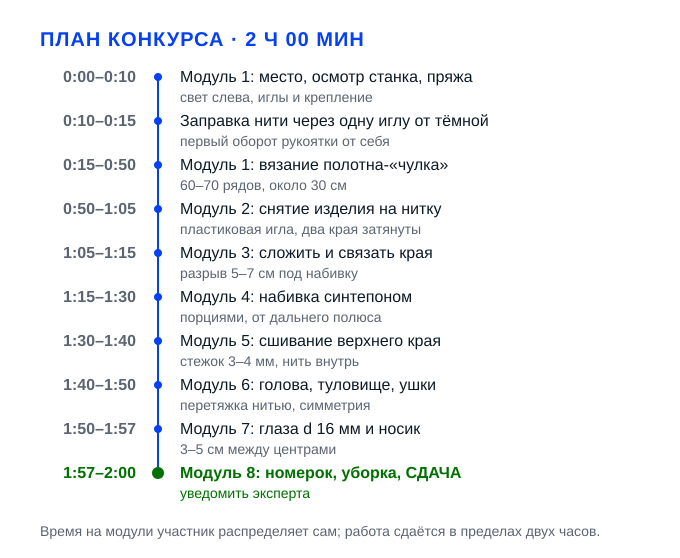
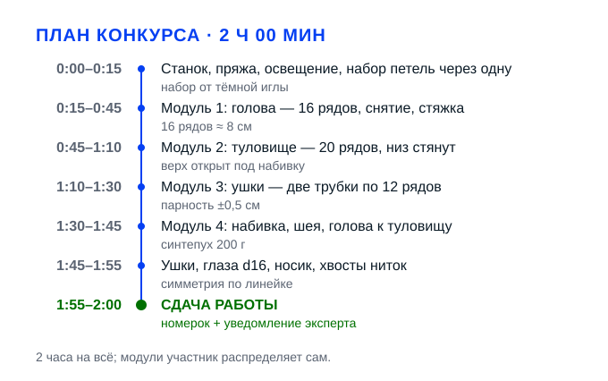
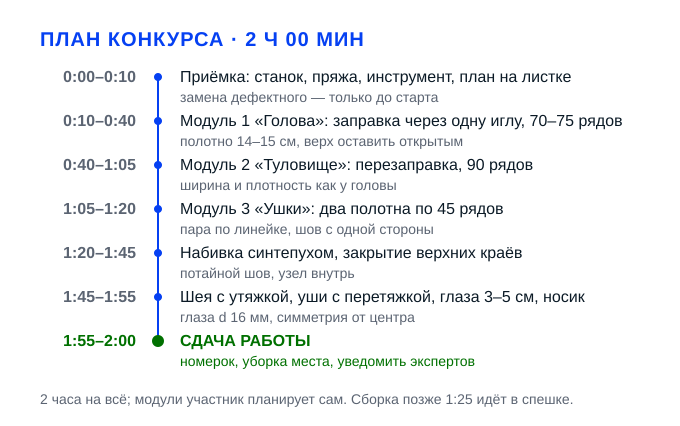

Вязание на станке (ФВ)
Задания ниже — официальные файлы «Абилимпикс» (источник: abilympics-russia.ru), разложенные по категориям. Решения написаны по тексту задания, регламенту и критериям оценки; в них указано, что именно проверяет эксперт.
Школьник
14–16 лет, базовый уровень заданияВ официальном файле категории не разделены отдельными разделами — приводим задание целиком; различия по категориям смотрите в таблице модулей.
Пошаговое решение
Два часа, настольный станок-«мельница», один моток тёмно-розовой пряжи, пара кристальных глаз диаметром 16 мм и синтепон — из этого школьнику нужно собрать мягкую игрушку «Смешарик». Задание разбито на восемь модулей: вязание элементов, снятие изделия со станка, соединение краёв, набивка, сшивание верхнего края, оформление головы и ушей, приклейка глаз и оформление работы. Таймингов у модулей нет, время участник распределяет сам, поэтому конкурс — это одна длинная цепочка решений про темп. Разбор идёт по ней: стол и заправка нити через одну иглу от тёмной, сорок минут ровного вязания «чулка», снятие на нитку с пластиковой иглой, потом сборка — сложить пополам, связать края, набить без комков, зашить разрыв, и в конце перетяжка шеи и ушей, глаза на расстоянии 3–5 см и номерок. Баллы теряются не на вязании, а на стыках между модулями.

Задача 1. Организовать место и заправить станокМодуль 1 · подготовка · ориентировочно 0:00–0:15
Первый модуль задания — «Вязание элементов», но начинается он не с пряжи, а со станка. Надо осмотреть все крючки-иглы, поставить станок так, чтобы он не ездил по столу, разложить инструмент по зонам и заправить нить через провалы, через одну иглу, начиная с первой иглы тёмного цвета. Эти пятнадцать минут не оплачиваются отдельным модулем, но именно от них зависит, будет ли полотно ровным: спущенная на кривой игле петля даёт дырку, которую синтепон потом выдавит наружу.
Действие 1.1. Осмотреть станок до заправки
Шаг 1.1.1
Ставим станок на стол, придерживаем за основание и медленно проворачиваем рукоятку на полный оборот — пока без пряжи. Смотрим на крючки: все ли иглы на месте, нет ли загнутых, забитых ворсом, нет ли в провалах между иглами обрывков старой нити. Каждую иглу пробуем ногтем: крючок должен пружинить и возвращаться на место, а не болтаться в гнезде. Станок, который стоял в упаковке, часто несёт заводскую пыль и волокна — их снимаем сухой тряпкой, иначе первый ряд пойдёт с грязью в полотне.
Погнутая или забитая игла сбрасывает петлю в каждом обороте, а спуск на «чулке» — это сквозная дырка, которую на набитой игрушке уже не замаскировать: синтепон полезет наружу именно через неё. Кроме того, раздел 4 задания разрешает заменить неисправный инструмент только до начала соревнований, после старта вы работаете тем станком, который стоит на столе, и объяснение «игла была кривая» баллов не вернёт.
Полный оборот рукоятки идёт ровно, без заеданий и металлического щелчка. Все крючки стоят на одной высоте и одинаково пружинят под ногтем, провалы между иглами чистые. Если рукоятка тугая на пустом станке — дело в механизме, и это видно сразу, до первой нитки.
Начать заправку, не прокрутив станок: первая же погнутая игла сбросит петлю ряду к десятому, когда полотно уже большое. Поднимать её крючком в готовом «чулке» значит получить утолщение и «лестницу» на лицевой стороне — эксперт увидит это раньше, чем вы закончите второй модуль.
Эксперт подходит к столу в первые минуты и смотрит, осматривает ли участник станок или сразу тянется за пряжей: по этому движению видно, вязал ли человек на мельнице раньше или держит её в руках впервые.
Шаг 1.1.2
Проверяем крепление: у большинства станков это присоска или струбцина снизу. Прижимаем станок к столешнице и пробуем сдвинуть его ладонью — он должен стоять мёртво. Затем смотрим на рукоятку и находим направление вращения по стрелке-метке на корпусе: по заданию рукоятку крутят от себя, и это важно, потому что в обратную сторону механизм сбрасывает петли вместо провязывания.
Станок, который ползёт по столу, тянет за собой нить и меняет её натяжение: полотно получается то рыхлым, то стянутым, и на просвет это видно полосами. Вращение «на себя» — самая частая ошибка новичка: петли не провязываются, а слетают, и вместо ровного «чулка» получается рыхлая сетка, которую придётся распускать целиком, уже потратив половину времени первого модуля.
Толкните станок ладонью — он не сдвигается. Рукоятка проворачивается в сторону стрелки, а не против неё. Нить, если она уже заправлена, при провороте уходит вниз, к полотну, а не наматывается на корпус.
Крутить рукоятку «на себя», потому что так удобнее сидеть: петли сходят с игл, и через пять-шесть оборотов вы обнаружите, что вяжете не полотно, а бахрому. Вторая ошибка — не прижать присоску: станок уезжает в момент, когда вы отпустили его, чтобы поправить нить.
Эксперт отмечает направление вращения, когда проходит мимо: рукоятка, которую крутят против метки, — сигнал, что участник не читал описание модуля 1. Для него это ещё и проверка безопасности: незакрытые ножницы рядом со станком он отметит сразу.
Шаг 1.1.3
Находим первую иглу тёмного цвета — она выделена краской и служит точкой отсчёта. От неё отсчитываем иглы по кругу и запоминаем, какие из них будут работать: по заданию нить заправляют через одну иглу, то есть половина игл остаётся в провалах. Полезно сразу отметить рабочую иглу маленьким кусочком малярного скотча или просто запомнить её положение относительно рукоятки, чтобы не сбиться на третьем обороте.
Тёмная игла нужна не для красоты: это нулевая точка, от которой считается и середина набора, и начало любого счёта рядов. Если начать заправку с произвольной иглы, полотно получится с косым, «уезжающим» краем, а при сборке игрушки такой край придётся подгибать и утолщать шов. Работа через одну иглу даёт полотно нужной плотности — на всех иглах оно выходит слишком плотным и жёстким для мягкой игрушки.
От тёмной иглы до тёмной иглы по кругу снова приходит та же точка, и число рабочих игл совпадает с числом провалов между ними. Проверьте ряд на просвет: рабочие иглы должны чередоваться строго через одну, без двух подряд.
Пропустить тёмную иглу и начать с соседней: край полотна выйдет короче на одну петлю, и «чулок» перекосит. Вторая ошибка — взять в работу две иглы подряд: в этом месте полотно стянется, и на игрушке появится вмятина, которая читается как брак вязания.
Эксперт смотрит на начало набора вблизи — это единственный момент, когда видно, умеет ли участник читать схему станка, а не просто крутить рукоятку. Сбитая точка отсчёта выдаёт себя косым краем уже на снятом полотне.
Действие 1.2. Собрать рабочее место и проверить пряжу
Шаг 1.2.1
Садимся так, чтобы корпус касался спинки стула, а локти стояли на столе — по правилам безопасности сидеть надо прямо, не наклоняясь к работе. Лампу ставим слева и чуть впереди станка, на высоту, при которой свет ложится на полотно с левой стороны, а не бьёт в глаза. Тень от руки не должна падать на крючки: именно в тени пропускается спущенная петля, а находится она потом на ощупь.
Освещение слева — прямое требование раздела 4 конкурсного задания, и оно же практическое: на тёмно-розовой пряже петли почти не читаются, и единственный способ видеть спуск — ровный боковой свет. Ровная посадка нужна не для осанки: при наклоне к станку затекает шея, руки начинают тянуть нить неравномерно, и к сороковому ряду полотно идёт волной.
Тень от правой руки не падает на рабочую зону, крючки видны по всей окружности. Проверьте, дотягиваетесь ли до рукоятки не вставая: если приходится тянуться, переставьте станок ближе к краю стола. Проверьте это, положив руку так, как будете держать её при вязании.
Поставить лампу справа или сзади — спуск будет виден только тогда, когда полотно уже поехало вниз, а исправлять придётся три ряда. Вторая ошибка — сесть на край стула и нависнуть над станком: через полчаса вязания кисти начнут дрожать, и натяжение поплывёт.
Эксперт оценивает организацию места в первые же минуты, и свет с посадкой — самая заметная часть этой оценки: их видно от входа в площадку. Отдельно он отмечает, стоит ли лампа слева: это прямое требование раздела 4 задания, и его видно от входа в площадку.
Шаг 1.2.2
Раскладываем инструмент по зонам, не сваливая в кучу. Ножницы — справа, лезвиями к себе и сомкнутыми, потому что по правилам безопасности они лежат на столе закрытыми. Иглу для сшивания вязаных изделий втыкаем в игольницу или в подушечку, а не оставляем на столе. Пластиковую иглу, которой будем снимать полотно, кладём рядом со станком. Синтепон убираем в сторону: он понадобится только в четвёртом модуле, а пух, поднятый в воздух сейчас, оседает на пряжу и уходит в полотно.
Порядок на столе — часть оценки организации работы, но важнее другое: игла, лежащая остриём вверх, и ножницы, открытые на краю стола, — это нарушение пунктов 1–2 раздела 4, за которое снимают баллы независимо от качества игрушки. Синтепон в зоне вязания — отдельная ошибка: пух набивается в пряжу, полотно выходит пёстрым на просвет, и вычистить его оттуда до сдачи уже не получится.
Ножницы лежат сомкнутыми, игла — в игольнице, пластиковая игла и нить под рукой, синтепон в стороне и в пакете. Между станком и краем стола остаётся место, чтобы положить готовое полотно, не смахивая его на пол.
Разложить всё «как удобно» — ножницы поперёк стола, игла воткнута в клубок, синтепон рядом со станком. К середине работы на столе образуется каша, и первое, что вы потеряете, — конец рабочей нити. Вторая половина потерь на этом шаге — испачканная пряжа, которую уже не отчистить.
Эксперт обходит столы в начале работы и смотрит именно на раскладку: по ней видно, работал ли участник когда-нибудь на площадке всерьёз. Порядок на столе он проверит ещё раз в конце работы, в модуле 8, и сравнит с этим первым впечатлением.
Шаг 1.2.3
Разматываем пряжу и проверяем её по всей длине: узлы, утолщения, расщеплённые участки, следы крючка. По заданию даётся один моток тёмно-розовой пряжи, поэтому каждый дефект придётся либо обходить, либо выводить на изнанку. Найденный узел не вырезаем под корень: оставляем концы по 10–12 см, чтобы потом заправить их в полотно, и перематываем моток в свободный клубок, который будет лежать слева от станка и разматываться без рывков.
Узел в пряже — это место, где полотно обязательно разойдётся: при набивке синтепон давит на все петли сразу, и слабое место рвётся первым. Моток, перемотанный в клубок, даёт ровную подачу нити: если тянуть пряжу прямо из фабричной пасьмы, она идёт рывками, натяжение скачет, и полотно выходит полосатым — то плотным, то рыхлым.
Пряжа проверена на всю длину, узлы перевязаны с запасом концов, клубок лежит слева и разматывается свободно, не задевая за станок. Потяните за нить: она должна идти мягко, без щелчков и зацепов. Если узел всё же остался в работе, запомните, на каком участке он находится: при набивке это первое место, за которым нужно следить.
Вязать прямо из мотка, поставленного на пол: нить идёт рывками, и к середине полотна появляется полоса из растянутых петель. Вторая ошибка — вырезать узел, не оставив концов: короткие хвосты выскользнут из первой же петли.
Эксперт может осмотреть пряжу до старта вместе с участником; умение найти дефект и объяснить, что с ним делать, — часть требований к квалификации, прописанных в разделе 1.3 задания.
Действие 1.3. Заправить нить и запустить первый ряд
Шаг 1.3.1
Берём конец нити и проводим его через нитенаправитель — отверстие или пружинку в верхней части станка, которая держит нить под натяжением. Затем нить уходит вниз, к иглам, и её конец мы придерживаем пальцем, чтобы он не ушёл под цилиндр. Хвост оставляем 15–20 см: его потом вдернем в иглу и используем для стягивания края, когда будем снимать полотно.
Нитенаправитель — не формальность: он задаёт постоянное натяжение, и без него петли выходят разного размера — полотно идёт волной, а игрушка получается кособокой. Хвост в 15–20 см нужен потому, что снимать «чулок» по заданию положено на нитку с пластиковой иглой: коротким концом вы просто не сможете обойти все иглы по кругу.
Нить идёт от клубка через нитенаправитель свободно, без перехлёстов, и при лёгком потягивании возвращается обратно. Хвост внизу не короче 15 см и не попадает под иглы. Проверьте и натяжение: при лёгком потягивании нить должна возвращаться обратно, а не тянуться, как резинка.
Заправить нить мимо нитенаправителя, «чтобы не мешало»: натяжение пропадает, и первые ряды выходят заметно рыхлее последних. Вторая ошибка — оставить хвост 5 см, а потом обнаружить, что его не хватает на стягивание края.
Эксперт смотрит на заправку в первые минуты: правильный путь нити через натяжитель — базовый навык, который проверяют у всех участников одинаково. Если нить идёт мимо натяжителя, это видно по её положению относительно корпуса — она лежит свободно, а не проходит через отверстие.
Шаг 1.3.2
Держим конец нити левой рукой и начинаем обводить иглы: от тёмной иглы идём по кругу через одну, укладывая нить в провалы между иглами и заводя её за крючок каждой рабочей иглы. Нить должна лежать перед крючком, а не за ним, — иначе при обороте она не захватится. Обойдя круг, снова приходим к тёмной игле и проверяем, что число рабочих игл совпадает с числом провалов.
Это и есть тот самый набор, о котором говорит модуль 1: работа через одну иглу даёт нужную плотность полотна для игрушки, а старт от тёмной иглы держит край ровным по всей длине «чулка». Нить, уложенная за крючком, при первом же обороте слетает, и вместо набора вы получаете пустой круг — время уходит, а полотно начинается заново.
Обойдя круг, посчитайте рабочие иглы: их столько же, сколько провалов между ними, и они чередуются строго через одну. Нить лежит на всех крючках одинаково, без провиса между соседними иглами. Особенно внимательно смотрите на первые три иглы от тёмной: с них начинается ряд, и ошибка здесь тянется через всё полотно.
Натянуть нить слишком сильно, «чтобы держалось»: крючки не смогут её захватить, и первый оборот пройдёт вхолостую. Вторая ошибка — обвести иглы через две: полотно выйдет вдвое плотнее и жёстче, игрушка не набьётся равномерно.
Эксперт смотрит на набор вблизи, потому что дальше полотно закроет иглы: если набор сделан неправильно, видно это будет только по результату. Ему достаточно взгляда на круг, чтобы понять, набраны петли через одну или участник сбился уже на второй игле.
Шаг 1.3.3
Придерживаем хвост и проворачиваем рукоятку от себя — первый оборот делаем медленно, следя за каждой иглой. Нить должна двигаться легко, без усилия: по заданию станок крутят, не применяя силы, и если рукоятка упирается, значит нить зажата или захвачена не та игла. После первого оборота на иглах появляется первый ряд петель, и хвост можно отпустить.
Первый оборот — проверка всего набора сразу: если хоть одна игла не взяла нить, это видно по пустому крючку, и исправить это сейчас стоит пяти секунд, а на тридцатом ряду — пяти минут и распущенного полотна. Усилие на рукоятке — верный признак того, что нить попала в провал или зацепилась за соседнюю иглу, и продолжать вращение — верный путь порвать пряжу.
На всех рабочих иглах висят петли первого ряда, полотно начинается ровной кромкой без «бахромы». Рукоятка идёт с одинаковым усилием на всём обороте, нить уходит вниз равномерно. Ещё один признак правильного оборота — полотно начинает опускаться вниз само, без подталкивания рукой.
Крутить дальше, почувствовав сопротивление: пряжа рвётся, и вместо полотна получается обрыв на середине набора. Вторая ошибка — начать счёт рядов с этого оборота и потом сбиться на единицу, потому что первый ряд не считается полным.
Эксперт фиксирует, что участник начал вязание без рывков и с правильным направлением рукоятки, — это базовый приём, который в критериях идёт отдельным пунктом.
Задача 2. Связать полотно-«чулок» нужной длиныМодуль 1 · вязание элементов · ориентировочно 0:15–0:55
Основная часть первого модуля — сорок минут ровного вязания по кругу. Задача простая на вид: крутить рукоятку от себя и держать натяжение, но именно здесь уходит время и именно здесь появляются спуски, перекосы и полосатость. Нужно связать «чулок» длиной около 30 см, чтобы после сложения пополам получился шар примерно 15 см, и сделать это с запасом по времени, потому что на сборку и оформление останется чуть больше часа.
Действие 2.1. Закрепить первый ряд и войти в ритм
Шаг 2.1.1
Провязываем первые пять-шесть оборотов медленно, останавливаясь после каждого и осматривая кромку. Полотно в этот момент ещё короткое и висит на иглах сразу под крючками — это лучший момент, чтобы увидеть дефект набора. Если какая-то петля стоит перекрученной, её снимаем крючком и надеваем правильно: на коротком полотне это делается за десять секунд.
Первые ряды задают ширину «чулка», и перекос, заложенный здесь, потом не исправить: полотно будет тянуть в сторону, а при сложении пополам края не совпадут. Перекрученная петля даёт утолщение, которое на набитой игрушке читается как шишка, и замаскировать его ушами или глазом удаётся не всегда.
Кромка ровная, петли одинакового размера, полотно не закручивается винтом. Возьмите его двумя пальцами и отпустите: оно должно висеть прямо, без перекоса вбок. Проверьте и то, что между петлями нет длинных протяжек: они появляются, если нить при наборе шла слишком свободно.
Проскочить первые ряды на скорости, чтобы сэкономить время: дефект набора обнаружится на двадцатом ряду, когда исправлять придётся распуском до самого начала. Вторая ошибка — тянуть полотно вниз, проверяя его: так петли растягиваются и остаются большими.
Эксперт смотрит на начало полотна, когда подходит к столу в первый раз: ровная кромка — признак того, что участник контролирует процесс. Он может попросить показать первые ряды, если сомневается, что вязание начато по схеме станка.
Шаг 2.1.2
Находим рабочий ритм: левая рука придерживает нить перед нитенаправителем, правая крутит рукоятку ровными оборотами примерно раз в полторы-две секунды. Нить не тянуть и не отпускать совсем — она должна идти с лёгким, одинаковым сопротивлением. Полотно само опускается вниз под цилиндр, и трогать его руками не нужно: каждое касание сбивает натяжение.
Ровный темп — это ровное полотно. Когда крутят рывками, нить то натягивается, то провисает, и ряды выходят разной плотности: на просвет видно полосы, а на игрушке — рельефные кольца. Кроме того, при рывке петля чаще слетает с крючка, а спуск на «чулке» стоит дороже, чем секунда, сэкономленная на обороте.
Полотно идёт ровным «стаканом», без волн и перетяжек, ширина его одинакова по всей длине. Нить между клубком и станком не провисает и не натянута в струну — она чуть пружинит под пальцем. Если полотно пошло волной, нить подаётся неравномерно — проверьте, не зацепилась ли она за ножку стола.
Крутить как можно быстрее, чтобы успеть больше рядов: в этом режиме и появляются спуски, а подъём петли крючком на готовом полотне оставляет заметный след. Вторая ошибка — держать нить двумя руками и «помогать» ей пальцем: натяжение скачет на каждом обороте.
Эксперт наблюдает за руками в течение всего модуля: ровный ритм без рывков виден даже на расстоянии и оценивается как владение приёмами вязания. По его наблюдению, ровный ритм слышно даже по звуку: станок работает без скрипа и рывков.
Шаг 2.1.3
Дойдя примерно до двенадцатого ряда, останавливаемся и делаем первую настоящую проверку: смотрим полотно на просвет, поднеся его к лампе, и считаем ширину линейкой. Записываем или запоминаем результат — он понадобится, чтобы понять, сколько ещё рядов вязать до нужной длины. Смотреть полотно удобно не чаще одного раза на двадцать рядов, иначе проверки начнут сбивать ритм сильнее, чем помогать.
Проверка на просвет — единственный способ увидеть спуск, который ещё не разошёлся в дырку: в этом месте нить лежит тоньше, и на свету видна тёмная полоска. Ранняя проверка ширины нужна для расчёта: если полотно выходит уже нужного, игрушка получится вытянутой, и придётся либо вязать длиннее, либо мириться с формой.
На просвет нет тёмных полос и утоньшений, ширина полотна одинакова в трёх местах — внизу, в середине и у игл. Разница в пределах нескольких миллиметров нормальна, разница в сантиметр — уже перекос. Если ширина «пляшет», полотно придётся вязать дальше и выравнивать форму набивкой.
Не смотреть на полотно до самого снятия: к этому моменту спуск успевает разойтись, и вместо одной петли приходится поднимать целую дорожку. Вторая ошибка — измерять ширину, растянув полотно руками: цифра будет завышена, и вы недовяжете.
Эксперт может подойти и посмотреть на полотно в процессе: контроль качества по ходу работы прямо прописан в требованиях к квалификации участника. Он смотрит, проверяет ли участник полотно сам или ждёт, пока дефект заметят со стороны.
Действие 2.2. Вести вязание до нужной длины
Шаг 2.2.1
Определяем план по рядам. Полотно складывается пополам, поэтому его длина должна быть примерно вдвое больше высоты будущей игрушки: для шара около 15 см нужно связать примерно 30 см «чулка». Ряд на пряже такой толщины даёт около 4–5 мм, значит ориентир — 60–70 рядов. Считаем обороты вслух или отмечаем каждый десятый рядом счётчика, если он есть на станке.
Без плана по рядам полотно либо выходит короче, и игрушка получается приплюснутой, либо длиннее, и её приходится подрезать — а подрезанный край потом осыпается под синтепоном. Счёт вслух кажется детским приёмом, но он единственный работает: на пятом десятке оборотов рукоятка крутится автоматически, и без счёта вы теряете ряд за рядом.
К отметке 0:35 на станке висит полотно длиной около 12–15 см — это примерно половина плана. Проверьте линейкой: если длина меньше, темп надо поднять, если больше — вы вяжете быстрее плана и можете позволить себе паузу на проверку.
Вязать «на глазок», не считая рядов: игрушка выходит недомерком, и набивка в неё входит с трудом, а шар получается сплюснутым. Вторая ошибка — считать ряды по памяти и сбиться после того, как отвлеклись на спуск.
Эксперт сверяет результат с описанием: «чулок» нужной длины — половина успеха первого модуля, и видно это по тому, как игрушка держит форму. Пропорции игрушки складываются именно здесь, и переиграть их потом будет нечем.
Шаг 2.2.2
Держим подачу нити под контролем: клубок лежит слева и разматывается сам, а рука только направляет нить в нитенаправитель. Каждые десять-пятнадцать рядов проверяем, не перехлестнулась ли нить, и не осталось ли на ней ворса, который набивается в провалы. Станок при этом не трогаем: переставлять его посреди работы нельзя, натяжение сбивается. Клубок при этом остаётся на месте, а не гуляет по столу за рукой.
Перехлёст нити — самая обидная остановка: полотно уже связано на 20 см, а распутать узел, не снимая его с игл, почти невозможно, и приходится снимать и начинать заново. Ворс в провалах работает как клин: он мешает крючку захватывать нить, и петли начинают сбрасываться одна за другой.
Нить идёт от клубка к станку без узлов и перехлёстов, клубок не подпрыгивает. Провалы чистые: посмотрите на станок сверху — между рабочими иглами не должно быть пуха. Проверьте и натяжение нити на входе: она должна пружинить под пальцем, а не провисать петлёй.
Крутить, не глядя на клубок: он переворачивается, нить захлёстывает за ножку стола, и на полотне появляется затянутая петля. Вторая ошибка — смахивать ворс рукой на ходу: он летит на полотно и вбивается в него.
Эксперт отмечает аккуратность работы с материалом: чистое полотно без ворса и узелков входит в оценку качества вязания. Он может взглянуть на клубок: аккуратно смотанный клубок говорит о понимании того, как устроена подача нити.
Шаг 2.2.3
Если петля всё-таки соскочила, останавливаемся немедленно. Находим спуск по тёмной дорожке на просвет, поддеваем сбежавшую петлю крючком или пластиковой иглой и надеваем её обратно на иглу, затем провязываем один оборот медленно и смотрим, держится ли она. Если дорожка распустилась на несколько рядов, поднимаем её по одной петле снизу вверх, цепляя за протяжки.
Спуск, оставленный без внимания, расходится за десять-пятнадцать оборотов в вертикальную щель, и полотно в этом месте истончается насквозь. Игрушка набивается плотно, синтепон давит на стенки изнутри — и первое, что расходится при набивке, это именно поднятая наспех петля. Поднимать по одной петле снизу вверх нужно потому, что сверху их не за что зацепить.
После подъёма на полотне нет тёмной дорожки на просвет, петля сидит на игле и провязывается вместе с остальными. Проверьте это на двух-трёх оборотах, а не на одном: слабая петля слетает снова. Если после проворота полотно в этом месте тянет вбок, петля сидит криво — переоденьте её заново.
Надеть петлю на иглу и сразу продолжить: без проворота на медленном темпе она слетит через два ряда, и вы потеряете ещё больше времени. Вторая ошибка — стянуть спуск узелком с изнанки: узел виден набитой игрушке и считается браком.
Эксперт может заметить след подъёма петли на готовом изделии: аккуратно поднятый спуск почти незаметен, грубый — читается как затяжка. Он ищет на полотне места, где петли крупнее остальных: именно так выглядит подъём, сделанный наспех.
Шаг 2.2.4
Следим за временем: к 0:50 полотно должно быть готово, чтобы на снятие и сборку осталось не меньше часа. Если к этому моменту связано меньше 25 см, принимаем решение — либо ускоряем темп, либо сознательно вяжем игрушку меньшего размера и потом компенсируем это более плотной набивкой и выразительными ушками. План по времени держим по часам на площадке, а не по ощущению: на конкурсе ощущение времени всегда обманывает.
Время на модули участник распределяет сам, и это прописано в задании отдельной строкой. Растянутый первый модуль — главная причина, по которой работы сдаются недоделанными: без глаз и носика игрушка теряет половину впечатления, даже если полотно связано идеально.
К 0:50 полотно снято с игл или готово к снятию, инструмент для снятия под рукой. Сверьтесь с планом конкурса: если отстаёте больше чем на пять минут, сокращайте не сборку, а декор. Проверьте и запас по длине: полотно короче 28 см даст сплюснутый шар, и набивка этого не исправит.
Довязать «ещё пару рядов» в ущерб оформлению: игрушка без глаз и ушек выглядит незаконченной, и это видно с любого расстояния. Вторая ошибка — начать торопиться и на скорости порвать полотно у самой кромки.
Эксперт фиксирует время перехода между модулями: умение держать график — часть оценки организации собственной деятельности. Он отмечает, укладывается ли участник в общий регламент двух часов: это видно по тому, на каком модуле он находится к середине.
Действие 2.3. Проверить полотно перед снятием
Шаг 2.3.1
Снимаем полотно с игл частично — просто приподнимаем нижний край и смотрим всю длину на просвет у лампы, поворачивая «чулок» по кругу. Ищем тёмные дорожки, утоньшения, затянутые петли и места, где пряжа расщепилась. Найденное отмечаем булавкой или ниткой другого цвета, чтобы не искать второй раз. Смотреть надо, поворачивая «чулок» по кругу, а не разложив его плоско: часть полотна при этом остаётся скрытой.
Полотно проверяют дважды — в процессе и после завершения изделия, это прямо прописано в требованиях к квалификации. Смотреть надо именно на просвет: на тёмно-розовой пряже днём дефекты не читаются, а лампа слева делает их видимыми. Отметка булавкой экономит время: искать дефект по всей длине заново — минуты, которых в конце не будет.
По всей длине полотна нет сквозных просветов и затяжек, ширина одинакова. Дефектные места отмечены и либо исправлены, либо намечены под изнанку при сборке. Найденный дефект отмечайте сразу и тут же решайте, что с ним делать: поднимать петлю или вывести участок на изнанку.
Проверить только тот участок, который виден сверху: спуск в нижней части «чулка» обнаружится при набивке, когда синтепон уже внутри и вылезает наружу. Вторая ошибка — искать дефекты, глядя на полотно с лица при слабом свете.
Эксперт осматривает полотно, когда участник его снимает: качество полотна — база для оценки всей игрушки. Ему важно увидеть, понимает ли участник, где у полотна лицо, а где изнанка.
Шаг 2.3.2
Отдельно смотрим на кромки: нижнюю, где начинался набор, и верхнюю, которая сейчас на иглах. Нижняя не должна быть стянута или растянута — по ней потом пойдёт соединение, и от неё зависит, будет ли шар круглым. Верхнюю аккуратно расправляем пальцами на иглах, чтобы петли стояли одинаково и снялись все сразу. Если кромка собралась в гармошку, расправляем её, растягивая полотно в ширину, а не в длину.
Кромка — самое нагруженное место игрушки: при набивке синтепон распирает полотно именно у краёв, и стянутая кромка даёт грушу вместо шара, а растянутая — волну на боку. Ровные петли на иглах перед снятием — залог того, что нитка пройдёт по всем петлям без пропусков.
Обе кромки ровные, одинаковой ширины с серединой полотна, петли на иглах стоят на одной высоте. Проведите пальцем вдоль кромки — она не должна собираться в гармошку. Сравните ширину у кромки и в середине: разница больше полусантиметра говорит о перекосе полотна.
Оставить кромку как есть, решив, что «при сшивании стянется»: стянутая кромка даёт грубый рубец, который видно на готовой игрушке. Вторая ошибка — растягивать полотно за кромку, проверяя её прочность.
Эксперт смотрит на кромки при снятии: ровный край — признак аккуратной работы с полотном. Он смотрит на кромку, когда участник поднимает полотно: ровный край виден сразу, без растягивания.
Шаг 2.3.3
Принимаем окончательное решение по длине. Прикладываем линейку вдоль полотна: если получилось 28–32 см, останавливаемся — этого хватит на шар около 15 см. Если 25–27 см, довязываем ещё пять-восемь рядов, но не больше: слишком длинный «чулок» потом придётся подгибать внутрь, и в игрушке появится лишняя складка. Если вышло больше 32 см, полотно не подрезают: излишек уйдёт в шов при соединении краёв, а подрезанный край осыпается.
Решение по длине принимается до снятия, потому что после снятия полотно уже не удлинить: вернуть петли на иглы ровно, без перекоса, почти невозможно. Запас в сантиметр-два полезен — его можно убрать в шов, а недостаток убрать нечем. Ошибка в длине на пять сантиметров заметна на готовой игрушке: шар выходит вытянутым, как огурец, и никакая набивка этого не выправит.
Длина полотна в пределах 28–32 см, ширина одинакова по всей длине, дефектов на просвет нет. Полотно можно снимать. Проверьте и то, что полотно лежит на столе ровно, не скручиваясь в жгут: скрученное полотно при сборке даст перекос.
Довязать «до конца мотка»: длина получается больше нужной, и при сборке приходится подрезать полотно, а подрезанный край осыпается. Вторая ошибка — снять недомерок в 22 см и надеяться, что набивка его растянет.
Эксперт сверяет размер готовой игрушки с описанием: пропорции — первое, что видно на столе сдачи. Он сверяет размер с описанием задания, где указан полученный результат — мягкая игрушка «Смешарик».
Задача 3. Снять полотно со станка и закрыть краяМодуль 2 · снятие изделия · ориентировочно 0:55–1:05
Модуль 2 в задании описан одной фразой: провязав нужное количество рядов по схеме, изделие снимают на нитку с пластмассовой иглой. За этой фразой стоит самый рискованный переход всей работы — если петли сойдут с игл не все сразу или нить окажется короткой, полотно распустится по кромке, и связанные сорок минут превратятся в лохматый шарф. Поэтому снятие делается медленно, по кругу, от тёмной иглы, с запасом нити, который потом пойдёт на соединение краёв.
Действие 3.1. Подготовить нить и иглу для снятия
Шаг 3.1.1
Провязываем последний полный оборот рукоятки и останавливаемся, когда все крючки стоят в исходном положении. Отрезаем рабочую нить от клубка ножницами, оставив хвост 45–55 см: этого хватит и на то, чтобы обойти все иглы по кругу, и на то, чтобы стянуть край и потом завязать его. Клубок сразу убираем в сторону, чтобы он не потянул за нить в самый неподходящий момент.
Длина хвоста — не прихоть: обход по кругу съедает примерно две длины окружности полотна, а на стягивание и узел уходит ещё пятнадцать-двадцать сантиметров. Если нить кончится на середине круга, придётся связывать её на весу, и узел попадёт в шов, который потом будет стягивать игрушку. Клубок, лежащий рядом, при первом же движении полотна сдёрнет нить с иглы и снимет половину петель раньше времени.
Отрезанный конец держится в руке, клубок отложен на край стола. Хвост не короче сорока сантиметров — приложите его к полотну и прикиньте: он должен обойти круг с заметным запасом. Если хвост кажется коротким, отрезайте с запасом: лишние десять сантиметров никому не помешают.
Отрезать нить под самый узел, «чтобы не мешала»: на снятие её не хватит, и край придётся закрывать обрывком. Вторая ошибка — оставить клубок рядом и уронить его на пол: падающий клубок тянет нить и сбрасывает петли, которые вы уже собрали.
Эксперт замечает, как участник обращается с нитью при переходе между модулями: аккуратное снятие — это отдельный навык, и он виден сразу. Он отмечает, отрезана ли нить ножницами: по правилам безопасности нитку не отрывают руками и не перекусывают зубами.
Шаг 3.1.2
Вдеваем хвост в пластиковую иглу с широким ушком — по заданию полотно снимают именно на нитку с пластмассовой иглой, потому что стальная игла для вязаного полотна слишком остра и цепляет соседние петли. Если иглы под рукой нет, годится крючок или игла для сшивания вязаных изделий с тупым концом. Полотно при этом придерживаем левой рукой снизу, чтобы оно не тянуло иглы.
Пластиковая игла проходит между петлёй и крючком, не раздвигая волокна пряжи: после неё на полотне не остаётся затяжек. Стальная игла с острым концом при снятии подрезает отдельные волокна, и на кромке появляются лохматые петли — они выглядят как брак, хотя полотно связано правильно.
Игла в руке сидит удобно, нить идёт через ушко без трения, полотно не натянуто. Попробуйте сделать один пробный прокол у края: игла проходит свободно, не цепляя соседнюю петлю. Проверьте ушко иглы: нить должна проходить свободно, без трения, иначе при стягивании она распушится.
Взять стальную швейную иглу «потому что она острее»: она расщепляет пряжу, и на кромке появляется бахрома. Вторая ошибка — натянуть полотно вниз, чтобы лучше видеть петли: натянутые петли сходят с крючков раньше, чем вы до них дойдёте.
Эксперт может посмотреть, чем именно участник снимает полотно: пластиковая игла в руке — признак того, что описание модуля прочитано. Пластиковая игла в руке — признак того, что участник прочитал описание модуля 2, где она названа прямо.
Действие 3.2. Собрать петли по кругу и снять полотно
Шаг 3.2.1
Начинаем от тёмной иглы и идём по кругу в ту же сторону, в которую крутили рукоятку. На каждой рабочей игле поддеваем петлю кончиком иглы, протягиваем нить внутрь петли и оставляем её на нити, а не на крючке. Иглы, которые стояли в провалах, пропускаем — на них петель нет. Считаем вслух: количество собранных петель должно совпасть с числом рабочих игл.
Сбор по кругу — это и есть закрытие края: нить, проходящая через все петли подряд, стягивает их в аккуратный мешочек, и кромка не распускается. Пропущенная петля даёт дырку точно по центру будущего «полюса» игрушки — именно там, где сходятся все клинья, и синтепон вылезает оттуда первым. Движение в ту же сторону, что и вращение, оставляет полотно ровным, без перекрута кромки.
Все рабочие иглы пусты, все петли сидят на нити, полотно висит на ней свободно. Пересчитайте петли на нити и рабочие иглы: числа должны совпадать до единицы. Особенно внимательно проверьте первую и последнюю петлю круга: они сходят с игл первыми.
Собирать петли в произвольном порядке, перескакивая через иглу: край стягивается неравномерно, и на игрушке появляется сборка с одной стороны. Вторая ошибка — тянуть нить после каждой петли: полотно стягивается на иглах гармошкой, и снять его ровно уже не получится.
Эксперт смотрит на кромку сразу после снятия: ровный собранный край с одинаковыми петлями виден и на готовой игрушке. Он может пересчитать петли вместе с участником — так проверяется внимательность при снятии.
Шаг 3.2.2
Когда все петли на нити, освобождаем полотно: аккуратно тянем его вниз, снимая с цилиндра, и одновременно подтягиваем нить, чтобы петли не соскочили обратно на крючки. Полотно выходит мягким «чулком» — держим его за оба конца, не давая скрутиться. Если станок закреплён присоской, снимаем полотно, а не станок. Полотно держим за оба конца, чтобы оно не скрутилось в жгут и не собрало петли обратно на крючки.
Петли, соскочившие в момент снятия, — самая частая потеря на этом переходе: они уходят вниз по полотну, и поднять их потом можно только крючком через всю длину. Снимать «чулок» надо, подтягивая нить одновременно с движением вниз, иначе кромка раскрывается, как развязанный мешок.
Полотно снято целиком, ни на одной петле нет «ступеньки» из соскочивших петель. Кромка собрана на нити и держится, если потянуть полотно в другую сторону. Разложите полотно на столе и убедитесь, что края собраны ровной дугой, без свисающих петель.
Сдёрнуть полотно со станка одним движением: кромка раскрывается, и часть петель уходит вниз. Вторая ошибка — отпустить нить, чтобы перехватить полотно поудобнее. Третья ошибка того же порядка — тянуть полотно за кромку: она растягивается, и стянуть её потом не получается.
Эксперт может попросить показать кромку: открытая, «развязанная» кромка сразу говорит о том, что снятие сделано наспех. Он смотрит именно на кромку, потому что по ней потом пойдёт шов соединения.
Шаг 3.2.3
Стягиваем нить по кругу и завязываем двойным узлом у самой кромки, подтягивая так, чтобы край собрался в плотный мешочек без отверстия посередине. Узел затягиваем в два приёма: сначала пальцами, потом коротким рывком. Второй конец полотна — тот, где начинался набор, — тоже собираем на нить и затягиваем тем же способом. Если нить после затяжки провисает, подтяните её ещё раз: слабый узел на набитом шаре развяжется.
Два затянутых конца — это два «полюса» будущего шара: от них зависит, будет ли игрушка круглой. Незатянутая кромка даёт плоскую площадку с дыркой, и при набивке синтепон выходит именно через неё. Двойной узел нужен потому, что пряжа скользкая: одиночный узел на натянутой нити развязывается при первой же набивке.
Края собраны в плотные мешочки, отверстия в центре нет, узлы держат рывок. Полотно лежит ровным «стаканом», кромки не топорщатся и не волнистятся. Проверьте оба края: отверстие в центре должно закрываться полностью, без просвета между петлями.
Завязать один узел и оставить концы болтаться: при набивке узел развязывается, и синтепон выходит через край. Вторая ошибка — стянуть кромку слишком сильно, до гофры: на готовой игрушке остаётся морщинистый полюс, который не разгладить.
Эксперт проверяет кромки на ощупь: затянутый край ощущается как плотная точка, незатянутый — как мягкая складка. Он проверяет кромки до набивки, если успевает подойти: после набивки дефект края уже скрыт.
Действие 3.3. Проверить и промаркировать полотно
Шаг 3.3.1
Раскладываем «чулок» на столе и измеряем: длина от края до края и ширина в трёх местах. Смотрим оба края на просвет у лампы — в собранном виде дефекты у кромки видны лучше всего. Если нашли спуск, который не заметили раньше, его поднимают крючком с изнанки, пока полотно не набито. Замеры записываем на бумаге или запоминаем точно: по ним потом прикидывается, сколько наполнителя войдёт внутрь.
Измерение после снятия — последняя точка, где ещё можно что-то исправить: на набитом и зашитом изделии любая правка означает вскрытие шва. Спуск, обнаруженный сейчас, стоит двух минут, а обнаруженный после набивки — всей игрушки, потому что синтепон придётся вынимать, а пряжа после первой набивки держит форму и расправляется плохо.
Длина полотна 28–32 см, ширина одинакова в трёх точках, на просвет нет тёмных дорожек. Оба края собраны и затянуты. Сравните длину с планом: 28–32 см — рабочая норма, всё, что короче, даст сплюснутый шар.
Пропустить этот шаг, решив, что «и так видно»: дефект у кромки проявится именно при набивке, когда исправлять уже нечем. Вторая ошибка — измерять полотно, растянув его: цифра завышается, и размер игрушки выходит меньше задуманного.
Эксперт осматривает полотно до набивки, если подходит к столу в этот момент: это единственный шанс увидеть вязание как таковое, без отделки. Он смотрит, умеет ли участник оценить свою работу до сборки, а не после.
Шаг 3.3.2
Отмечаем, где верх, а где низ: на одном из концов оставляем нитку подлиннее и завязываем её бантиком — это будет ориентир при сборке. Концы не обрезаем: два хвоста по 20–30 см понадобятся, чтобы связать края и потом сшить игрушку. Полотно складываем пополам и убираем на край стола, подальше от ножниц и игл. Убирать полотно лучше на чистую салфетку или в пакет, чтобы на него не попал ворс и обрезки.
Метка верха нужна потому, что «чулок» симметричен и перепутать стороны легко: разница в натяжении у начала и конца вязания видна на готовой игрушке как лёгкий перекос. Длинные концы — расходный материал всей сборки: ими связывают края, ими же делают перетяжку головы и ушек, и обрезать их сейчас значит искать потом новую нить того же цвета.
На одном конце бантик, оба конца не короче двадцати сантиметров, полотно сложено и лежит отдельно от инструмента. При сборке вы сразу поймёте, какой край брать первым. Проверьте, что бантик не развязался: он нужен только как метка и не должен попасть в шов.
Обрезать концы «чтобы не мешали»: на перетяжку и уши нити не хватит, и придётся вводить новую, с узелком — он будет виден на мордочке. Вторая ошибка — оставить полотно рядом с ножницами: случайный надрез на натянутом полотне идёт вниз дорожкой.
Эксперт видит подготовку к сборке: участник, у которого концы сохранены и промаркированы, делает следующий модуль вдвое быстрее. Он отмечает, продумана ли последовательность сборки: сохранённые концы — первый её признак.
Задача 4. Соединить края, набить игрушку и зашитьМодули 3–5 · сборка · ориентировочно 1:05–1:40
Три модуля подряд превращают плоский «чулок» в объёмный шар. Сначала изделие складывают пополам и связывают нити верха и низа, оставляя рабочий разрыв для набивки; затем внутрь порциями укладывают синтепон, распушая его до однородной массы; и только потом зашивают верхний край. Порядок именно такой: если зашить раньше, набивать будет некуда, а если набить рыхло, игрушка осядет через полчаса и потеряет форму.
Действие 4.1. Сложить полотно и связать края
Шаг 4.1.1
Кладём «чулок» на стол и складываем пополам так, чтобы оба затянутых края сошлись рядом друг с другом, а сгиб лёг с противоположной стороны. Выравниваем полотно по ширине: кромки должны совпасть, а не сместиться одна относительно другой. Придерживаем сложенное полотно ладонью, чтобы оно не провернулось, пока мы берём нить. Сгиб при этом должен лежать строго напротив соединённых краёв, а не сбоку.
Сложение пополам — это и есть формообразование игрушки: сгиб станет боками шара, а сведённые края — швом по «экватору» с одной стороны. Если кромки сместятся, шар получится с перекосом, и голова уйдёт в сторону от оси — а симметрия мордочки оценивается на готовом изделии в первую очередь.
Края сошлись вплотную, кромки совпадают по всей длине, полотно не перекошено винтом. Сгиб лежит ровной дугой, без залома посередине. Посмотрите на сложенное полотно сверху: оно должно напоминать сложенный пополам лист, а не клин.
Сложить полотно, не выравнивая кромки: один бок шара выходит выше другого, и потом это не исправить никакой перетяжкой. Вторая ошибка — сложить «чулок» по диагонали: сгиб идёт наискось, и игрушка получается формы яйца.
Эксперт оценивает пропорции уже на этом этапе: сложенное полотно показывает, какой будет игрушка. Он оценивает, насколько ровно держится форма: перекошенное полотно видно ещё до набивки.
Шаг 4.1.2
Берём хвосты от двух затянутых краёв и связываем их попарно — верхний с верхним, нижний с нижним, — стягивая так, чтобы края сошлись вплотную. Проходим по всей длине шва и оставляем незакрытым участок 5–7 см посередине: именно через него будем набивать игрушку. Оставшиеся свободные концы не обрезаем — они пойдут на перетяжку. Узлы затягиваем по одному, после каждого проверяя, что кромки не разъезжаются.
Связанные края держат форму шара и не дают синтепону выходить наружу в процессе набивки. Разрыв в 5–7 см — обязательный: если связать шов наглухо, набивать будет некуда, и придётся либо распускать узел, теряя натяжение, либо вскрывать шов ножницами и портить кромку. Нить, которой связывают, должна быть той же пряжей, иначе на шве появится контрастная полоса.
Края соединены по всей длине, кроме участка в ладонь шириной. Шов не расходится, если потянуть полотно в стороны. Разрыв расположен примерно посередине, а не у самого края. Отдельно проверьте ширину оставленного разрыва: палец должен проходить в него свободно.
Связать шов наглухо, а потом вспороть его ножницами: кромка осыпается, и синтепон начинает вылезать ещё до конца набивки. Вторая ошибка — связать только два угла, оставив середину открытой на всю длину: шар расползается при первой же порции наполнителя.
Эксперт смотрит на ровность шва при соединении: бугристый шов на готовой игрушке виден как рубец по центру. Он смотрит на линию соединения: бугристый шов потом виден на готовой игрушке.
Шаг 4.1.3
Обрезаем лишние концы нитей, кроме двух рабочих, — по заданию все оставшиеся концы заправляют и обрезают. Каждый хвост заправляем крючком или иглой внутрь полотна на 2–3 см, а не просто обрезаем у кромки: обрезанный у края кончик вылезет после первой набивки. Рабочие концы длиной 25–30 см оставляем снаружи и отводим в сторону. Обрезки сразу убираем в мусор, а не оставляем на столе: они цепляются за полотно и путаются в рабочих нитях.
Заправленный внутрь конец держится за счёт трения о волокна пряжи и не выходит даже при плотной набивке, а обрезанный у кромки торчит наружу уже через минуту. Из торчащих кончиков на готовой игрушке получается «щетина», которая сразу читается как небрежность, хотя на неё ушло бы тридцать секунд работы.
На лицевой стороне нет торчащих кончиков, все обрезки убраны в мусор, два рабочих конца лежат отдельно и не путаются с полотном. Проведите ладонью по шву — он должен быть гладким. Проверьте шов на просвет: между кромками не должно быть щелей, через которые полезет наполнитель.
Обрезать все концы под корень, включая рабочие: перетяжку головы и ушей делать будет нечем, и придётся вводить новую нить с узлом на виду. Вторая ошибка — оставить кончик 3–4 мм снаружи, посчитав его незаметным: на набитой игрушке он торчит.
Эксперт осматривает изделие на просвет и на ощупь: торчащие кончики и узелки в шве — типичная потеря баллов за аккуратность. Он отмечает чистоту изнанки: именно там видно, заправлены ли концы как следует.
Действие 4.2. Набить игрушку синтепоном
Шаг 4.2.1
Достаём синтепон и распушаем его: разделяем на куски размером примерно с грецкий орех и разминаем каждый пальцами, разрывая слипшиеся волокна. На одну игрушку такого размера уходит небольшая часть выданного объёма, поэтому сразу откладываем лишнее в пакет и убираем со стола. Работать лучше над столом, а не над полом: упавший синтепон собирает пыль и в игрушку уже не годится.
Куски, а не один большой пласт: пласт ложится комками, и шар получается бугристым, с пустотами между слоями. Распушённый наполнитель распределяется равномерно и держит форму после того, как игрушку помнут. Мелочь вроде пыли и крошки на синтепоне видна на светлой игрушке как серые точки, а вычистить её из набитого изделия нельзя.
Наполнитель разделён на куски, каждый распушён до состояния однородной массы без комков. На столе нет рассыпанных волокон, лишнее убрано в пакет. Проверьте и то, что куски одинакового размера: крупный комок потом прощупывается через полотно.
Набивать целым пластом, «чтобы быстрее»: внутри остаются пустоты, и через час игрушка оседает с одной стороны. Вторая ошибка — работать, держа синтепон на весу: пух летит на полотно и вбивается в вязание.
Эксперт смотрит на равномерность набивки, когда берёт игрушку в руки: комки и пустоты прощупываются сразу. Он смотрит, как участник обращается с наполнителем: аккуратная работа видна по чистому столу.
Шаг 4.2.2
Набиваем порциями через оставленный разрыв: сначала заталкиваем небольшой комок в дальний полюс — туда, где затянут край, — и распределяем его пальцами по всей окружности. Потом следующую порцию, ближе к разрыву. Каждый слой слегка разминаем снаружи, чтобы наполнитель разошёлся к стенкам, а не собрался в центр. Не проталкиваем наполнитель заострённым предметом: карандаш или ножницы рвут полотно изнутри.
Начинать с дальнего полюса нужно потому, что добраться туда после набивки середины уже невозможно, и именно в этом месте остаётся пустота — игрушка с одной стороны мягкая, с другой плотная. Разминание снаружи разгоняет волокна к стенкам и убирает комки, которые иначе читаются на поверхности как шишки.
Игрушка набита равномерно, при сжатии в разных местах плотность одинаковая, полюса заполнены. Полотно не просвечивает: на просвет не видно тёмных окон между волокнами. Проверьте полюса отдельно: они должны быть мягкими, но заполненными, без пустот под кромкой.
Набить середину и оставить полюса пустыми: шар получается с продавленными боками. Вторая ошибка — заталкивать наполнитель одним движением, раздвигая петли: полотно растягивается, и на игрушке остаются затяжки.
Эксперт сжимает игрушку с двух сторон: неравномерная набивка видна даже через полотно. Он сжимает игрушку с двух сторон и слушает, не хрустит ли синтепон: хруст говорит о комках внутри.
Шаг 4.2.3
Формируем шар: сжимаем набитую заготовку ладонями с боков, потом сверху и снизу, прокатываем между ладонями. Наполнителя должно быть столько, чтобы игрушка держала форму при лёгком сжатии, но полотно не натягивалось до просвета между петлями. Если не хватает — добавляем ещё порцию через разрыв, если перебор — вынимаем. Проверяем и вес: игрушка не должна быть тяжёлой, иначе она будет заваливаться набок на столе.
Форма шара задаётся сейчас, и она же определяет, насколько легко пойдёт перетяжка головы: на переполненной игрушке нить не стягивает полотно, а режет его, и на месте шеи появляется борозда с заломами. Недобитая игрушка при перетяжке сминается в складку. Просвет между петлями — признак перебора: синтепон начинает проглядывать наружу.
Игрушка круглая, держит форму при сжатии и возвращается к ней. Полотно не просвечивает, петли не разъехались, шов по краю не расходится под напором наполнителя. Поставьте игрушку на стол и толкните её — она должна качнуться и вернуться, а не упасть.
Набить «до упора», чтобы было плотнее: полотно расходится по петлям, и синтепон лезет наружу белым пухом по всему шару. Вторая ошибка — недобить и надеяться, что форма появится после прошивания шеи. Третья ошибка — сразу после набивки тянуть шею, не дав полотну расправиться.
Эксперт проверяет форму рукой и глазами: правильный шар — круглый со всех сторон, без плоских площадок. Он проверяет форму со всех сторон, включая низ и макушку, где пустоты остаются чаще всего.
Действие 4.3. Зашить верхний край
Шаг 4.3.1
Берём иглу для сшивания вязаных изделий, вдеваем рабочий конец и зашиваем разрыв швом через край: стежки мелкие, 3–4 мм, игла идёт перпендикулярно кромке, захватывая обе стороны. Начинаем с одного угла разрыва и ведём к другому, подтягивая нить после каждых двух-трёх стежков, но не затягивая до гофры. Нить держим натянутой, но не тянем: полотно должно лежать спокойно, без сборки под стежками.
Разрыв после набивки — единственное место, где игрушка может разойтись, и шов здесь несёт всю нагрузку: синтепон давит изнутри постоянно. Частый стежок через край держит кромку и не даёт петлям разъехаться, а умеренная затяжка сохраняет ровную линию без рубца. Если стянуть слишком сильно, край соберётся в мелкую гармошку, и на шаре появится вмятина.
Разрыв закрыт полностью, шов ровный, без гофры и без просветов между стежками. При сжатии игрушки шов не расходится, синтепон не показывается. Проверьте шов с изнанки: стежки должны быть одинаковыми по длине, без пропусков и петель.
Зашить разрыв редкими стежками по 8–10 мм: при первом же сжатии между стежками показывается синтепон. Вторая ошибка — стянуть шов до предела: край собирается в сборку, которая видна на готовой игрушке как рубец.
Эксперт осматривает шов вблизи и проверяет его на разрыв, слегка разводя края пальцами. Он смотрит на ровность шва и на то, не собралась ли кромка в гармошку.
Шаг 4.3.2
Закрепляем нить: делаем два стежка на одном месте и выводим иглу внутрь игрушки, а не наружу. Обрезаем нить, оставив хвостик около 10 см, и прячем его внутрь через тот же прокол, подтягивая за кончик, чтобы он ушёл под полотно. Место прокола разминаем пальцами, чтобы отверстие закрылось. Иглу выводим наружу через тот же прокол, через который вошли, иначе на полотне останется лишняя дырка.
Узел, оставленный снаружи, — самая заметная мелочь на готовой игрушке, и именно на него смотрят при оценке аккуратности. Хвостик в 10 см нужен не для красоты: короткий конец невозможно заправить внутрь, он выскальзывает обратно через прокол. Вывод иглы внутрь прячет и закреп, и сам кончик под набивкой.
На лицевой стороне нет узлов и торчащих концов, прокол закрылся и не виден на просвет. Потяните за полотно рядом с местом закрепа — нить не выходит. Проверьте место закрепа на просвет: прокол должен закрываться волокнами пряжи.
Закрепить нить узлом снаружи и обрезать коротко: узелок виден на игрушке, а короткий кончик торчит рядом с ним. Вторая ошибка — вывести иглу наружу «чтобы завязать поудобнее» и оставить прокол открытым.
Эксперт проверяет изнанку работы не менее внимательно, чем лицо: чистая изнанка — признак профессиональной сборки. Он проверяет, не осталось ли узлов на виду: на игрушке они видны с любого расстояния.
Задача 5. Оформить голову, ушки и мордочкуМодули 6–7 · оформление · ориентировочно 1:40–1:57
Набитый шар — ещё не Смешарик: пока в нём нет шеи, ушей и мордочки, это просто мягкий мячик. Модуль 6 описания задаёт два приёма: ниткой с иглой изделие делят на голову и туловище, прошивая линию грани и плотно её затягивая, а ушки оформляют перетяжкой нити. Модуль 7 добавляет глаза на фиксаторах диаметром 16 мм, посаженные на расстоянии 3–5 см друг от друга, и носик. Здесь важна не скорость, а симметрия: любая асимметрия на мордочке читается мгновенно.
Действие 5.1. Разделить голову и туловище
Шаг 5.1.1
Намечаем линию шеи: откладываем от верха игрушки примерно треть её высоты и ставим две метки булавками — спереди и сзади, строго на одной линии. Проверяем симметрию: расстояние от метки до шва слева и справа должно совпадать. Если игрушка высотой около 15 см, линия шеи проходит примерно в 5 см от верха, и голова получается крупной — так и должно быть у Смешарика.
Линия шеи определяет пропорции всей игрушки, и задание прямо говорит о делении изделия на голову и туловище. Смещённая метка даёт игрушку с маленькой головой или, наоборот, с головой, съехавшей набок, — а пропорции оцениваются на готовом изделии раньше, чем аккуратность стежков. Булавки, поставленные спереди и сзади, нужны, чтобы перетяжка шла по одной плоскости, а не по спирали.
Метки стоят на одной высоте с обеих сторон, расстояние до боковых швов одинаковое. Проверьте линейкой: разница больше 3–4 мм уже видна на готовой игрушке. Проверьте метки с двух сторон игрушки: они должны стоять на одной линии, а не уходить по спирали.
Наметить линию на глаз, без второй метки сзади: перетяжка уходит по диагонали, и шея получается косой. Вторая ошибка — отложить треть от низа, а не от верха: голова выходит маленькой, и мордочке не хватает места.
Эксперт оценивает пропорции, когда берёт игрушку в руки: линия шеи должна читаться сразу, без пояснений. Он оценивает пропорции до перетяжки: по меткам видно, понимает ли участник, каким должен быть силуэт.
Шаг 5.1.2
Вдеваем рабочий конец в иглу для вязаных изделий, закрепляем его на изнанке у нижней метки и делаем первый стежок насквозь через игрушку — от передней метки к задней. Затягиваем нить так, чтобы полотно собралось в борозду, и прошиваем линию шеи ещё раз рядом, на 2–3 мм ниже первого стежка. Второй проход нужен, чтобы борозда не расползлась: одного стежка на набитом шаре недостаточно.
Прошивание насквозь — приём, которым из шара делают две формы: борозда стягивает полотно и делит игрушку на голову и туловище, не разрезая её. Один стежок держит слабо, и после нескольких сжатий нить уходит в наполнитель, а борозда расправляется — игрушка снова становится бесформенным шаром. Затягивать надо плотно, как сказано в описании модуля, но без разрыва полотна.
Борозда видна по всей окружности, спереди и сзади, глубина одинаковая. Игрушка, положенная на стол, стоит ровно, голова не заваливается набок. Проверьте, не ушла ли борозда в сторону: она должна идти ровно, параллельно столу.
Прошить только спереди, не выводя иглу насквозь: борозда получается только с лица, и сзади голова сливается с туловищем. Вторая ошибка — затянуть так сильно, что пряжа рвётся: на месте разрыва появляется белая точка синтепона.
Эксперт проводит пальцем по линии шеи: борозда должна быть одинаковой глубины по всему кругу. Он проводит пальцем по линии шеи и смотрит, одинакова ли она по глубине спереди и сзади.
Шаг 5.1.3
Закрепляем нить на изнанке двумя стежками в одном месте, выводим иглу внутрь игрушки и обрезаем с хвостиком около 10 см, который прячем под полотно. Разминаем место закрепа пальцами, чтобы прокол закрылся. Затем проверяем результат: сжимаем голову и туловище по отдельности — борозда должна держаться, а не расправляться. Если борозда расправляется сразу после сжатия, делаем ещё один стежок рядом с первым.
Закреп на изнанке — то, что удерживает форму всё время, пока игрушку будут оценивать, брать в руки и переставлять на столе. Плохо закреплённая нить уходит внутрь при первом же сжатии, и голова перестаёт отделяться от туловища — игрушка теряет узнаваемый силуэт целиком, а не частично.
Борозда держится после пяти-шести сжатий, нить не выходит наружу. На лицевой стороне не видно узлов и проколов, полотно вокруг борозды не морщит. Проверьте, не осталось ли на полотне затяжек от стежков: они читаются как вмятины.
Оставить закреп «на потом»: к моменту сдачи борозда уже расправлена, и разделение читается только на фотографии. Вторая ошибка — завязать узел снаружи у линии шеи: он попадает ровно в место, куда смотрит эксперт.
Эксперт проверяет прочность перетяжки руками, а не глазами: сжимает игрушку и смотрит, возвращается ли борозда. Он проверяет прочность перетяжки руками, а не глазами: сжимает игрушку и смотрит, возвращается ли борозда.
Действие 5.2. Сформировать ушки перетяжкой
Шаг 5.2.1
Определяем места ушек: они садятся на голову симметрично, чуть выше линии шеи и немного в стороны от макушки, примерно на 2–3 см от верхнего полюса. Ставим четыре булавки — по две на каждое ушко, ограничивая основание. Проверяем симметрию линейкой от верхней точки игрушки: расстояние до левой и правой пары должно совпадать. Расстояние между ушами должно быть таким, чтобы между ними оставалась свободная макушка.
Уши у Смешарика держатся не пришиванием отдельных деталей, а перетяжкой полотна — так задание формулирует модуль 6. Значит, основание уха задаётся заранее: если булавки стоят несимметрично, перетяжка вытянет разное количество полотна, и одно ухо выйдет больше другого. На маленькой игрушке разница в полсантиметра видна сразу и не исправляется без вскрытия шва.
Булавки стоят парами, расстояние между парами от макушки одинаковое. Проверьте, глядя на игрушку сверху: точки должны образовывать симметричную фигуру, а не перекошенный четырёхугольник. Проверьте метки на ощупь: булавки не должны колоть полотно изнутри.
Наметить уши «на глаз», без промера: одно ухо садится выше, и мордочка выглядит удивлённой. Вторая ошибка — поставить основание уха слишком низко, ближе к шее: ухо сливается с головой и не читается. Третья ошибка — намечать уши после перетяжки шеи, когда голова уже стянута.
Эксперт смотрит на игрушку спереди и сверху: симметрия ушей — первое, что бросается в глаза в готовой работе. Он смотрит на игрушку сверху, где симметрия видна лучше всего.
Шаг 5.2.2
Протягиваем нить от основания уха к макушке и обратно, стягивая полотно в складку так, чтобы получилось ухо: два-три прохода по одному и тому же пути, с плотной затяжкой после каждого. Второе ухо делаем тем же способом, той же нитью и с тем же числом проходов. Важно не перетянуть: полотно должно собраться в объёмное ухо, а не в тонкую складку. Нить держим коротко, чтобы она не путалась в полотне и не цепляла соседние складки.
Перетяжка — единственный способ получить ухо без отдельной детали и без шва, который был бы виден на голове. Число проходов и сила затяжки задают размер: три прохода дают аккуратное небольшое ухо, пять — крупное, но с риском разрыва пряжи. Одинаковое число проходов на оба уха — гарантия того, что они выйдут одного размера, а это и есть главный критерий по оформлению.
Уши объёмные, стоят торчком или слегка в стороны, одинакового размера и высоты. Полотно в основании не разорвано, синтепон не просвечивает. Проверьте, держат ли уши форму: они должны стоять сами, без поддержки пальцем.
Затягивать каждый проход «до упора»: пряжа рвётся, и на голове появляется дырка с белым наполнителем. Вторая ошибка — сделать на одно ухо два прохода, на другое три: уши выходят разного размера, и это уже не исправить.
Эксперт измеряет уши или сравнивает их на глаз: разница в размере ушек — типичная потеря баллов за оформление. Он сравнивает уши по высоте и объёму, иногда прикладывая линейку.
Шаг 5.2.3
Закрепляем нить у основания второго уха, выводим внутрь, обрезаем и прячем хвостик около 10 см. Пальцами расправляем складки вокруг ушей, чтобы полотно легло ровно. Затем ставим игрушку на стол и смотрим на неё с расстояния вытянутой руки — так видно общий силуэт, который и будет оцениваться. Если ухо получилось слишком маленьким, добавляем ещё один проход, пока нить не закреплена.
Складки вокруг ушей — то, что отличает аккуратную перетяжку от грубой: после стягивания полотно всегда собирается, и его надо расправить, пока нить ещё держит форму. Взгляд с расстояния вытянутой руки нужен потому, что вблизи видно каждую петлю, а эксперт оценивает силуэт целиком.
Силуэт читается как голова с двумя ушами, складки расправлены, уши одинаковой высоты. Игрушка устойчиво стоит на столе и не заваливается. Проверьте силуэт с расстояния: уши должны читаться как уши, а не как складки полотна.
Оставить складки как есть: они дают эффект мятой головы, и игрушка выглядит небрежной. Вторая ошибка — расправлять полотно, дёргая за уши: перетяжка ослабевает. Третья ошибка того же рода — расправлять полотно, потянув за ухо: перетяжка ослабевает.
Эксперт отходит на шаг и смотрит на силуэт: именно так и оценивают узнаваемость персонажа. Он отходит на шаг и оценивает узнаваемость персонажа по силуэту.
Действие 5.3. Приклеить глазки и сделать носик
Шаг 5.3.1
Берём пару кристальных глаз диаметром 16 мм на фиксаторах и прикладываем их к голове без клея. По заданию глаза крепят на расстоянии 3–5 см друг от друга, и это расстояние отмеряем линейкой между центрами, а не на глаз. Ставим метки карандашом или булавками, проверяем симметрию относительно линии носа и линии шеи. Если глаза на фиксаторах, примерку делаем до снятия защитной плёнки: снять и переставить их потом будет нельзя.
Расстояние 3–5 см — единственная точная цифра, которую задание даёт по оформлению мордочки, и она определяет выражение лица: слишком близко посаженные глаза делают игрушку испуганной, слишком далеко — удивлённой. Симметрия относительно осевой линии важнее самого расстояния: даже правильные 4 см, смещённые на полсантиметра вбок, читаются как косоглазие.
Метки стоят симметрично, расстояние между центрами в пределах 3–5 см, линия глаз горизонтальна. Посмотрите на игрушку в зеркало — асимметрия в отражении заметнее. Проверьте расстояние линейкой ещё раз, после того как метки поставлены: глазомер на маленькой игрушке обманывает.
Прикинуть глаза «на глаз» и сразу приклеить: снять кристальный глаз с фиксатора без следа на полотне почти невозможно, а перекос в 3–4 мм на мордочке виден сразу. Третья ошибка — поставить глаза выше линии ушей: мордочка съезжает вверх и читается как затылок.
Эксперт смотрит на мордочку вблизи: посадка глаз — самый заметный элемент оформления и самый частый источник потери баллов. Он смотрит на мордочку вблизи и в отражении витрины, если она есть на площадке.
Шаг 5.3.2
Снимаем защитную плёнку с фиксатора первого глаза, прижимаем глаз к намеченной точке и держим 10–15 секунд, не проворачивая. Второй глаз ставим так же, сверяясь с первой меткой по линейке. Если фиксатор слабый, каплю клея наносим на полотно, а не на глаз, и ждём полминуты, чтобы клей схватился. Работаем на сухом полотне: на влажном фиксатор не держится и сползает через минуту.
Клеить на полотно, а не на глаз, нужно потому, что клей на гладкой кристальной поверхности не держится и выдавливается по краям, оставляя мутный ореол. Выдержка в 10–15 секунд без проворачивания — условие для любого фиксатора: если крутить глаз в момент схватывания, он встанет с перекосом, а плёнка фиксатора сомнётся.
Глаза держатся при лёгком нажатии, стоят ровно, без клеевых пятен вокруг. Расстояние между центрами совпадает с намеченным, линия горизонтальна. Проверьте, не видно ли плёнку фиксатора по краю глаза — её нужно снять полностью.
Нажать и сразу отпустить, не выдержав время: глаз отваливается при первой же попытке поправить ухо. Вторая ошибка — нанести много клея: он выступает по краю и пачкает полотно вокруг глаза. Третья ошибка — клеить глаз, не проверив, снята ли плёнка с фиксатора: он держится на честном слове и отваливается при первой чистке.
Эксперт проверяет, держатся ли глаза, и смотрит на чистоту полотна вокруг них: клеевые пятна не отмываются. Он проверяет, держатся ли глаза, слегка нажимая на них пальцем.
Шаг 5.3.3
Делаем носик: вдеваем нить в иглу, закрепляем её на изнанке под линией глаз и выводим на лицо. Несколькими стежками формируем небольшой носик — три-четыре стежка в одной точке или короткая горизонтальная линия, в зависимости от образа. Затем закрепляем ниточку, выводим её внутрь и обрезаем так, чтобы остался хвостик около 10 см, который прячем внутрь игрушки.
Носик собирает мордочку: без него глаза висят отдельно и игрушка не читается как персонаж. Хвостик в 10 см задан в описании модуля 7 не случайно — короткий конец невозможно заправить под набивку, он выходит наружу при первой же чистке игрушки, а торчащая нитка на мордочке портит всё впечатление от работы.
Носик на месте, симметричен относительно глаз, нить не провисает. Хвостик заправлен внутрь: снаружи не видно ни узла, ни кончика. Проверьте, что носик не перекрывает глаза и стоит по центру между ними.
Сделать носик одним длинным стежком: он провисает и цепляется. Вторая ошибка — обрезать нить коротко и оставить узелок снаружи мордочки. Третья ошибка — сделать носик слишком крупным: он перетягивает внимание с глаз.
Эксперт смотрит на мордочку целиком: глаза, нос и уши должны складываться в один образ, а не существовать по отдельности. Он смотрит, складываются ли глаза, нос и уши в один образ, а не живут по отдельности.
Задача 6. Оформить работу, убрать место и сдать изделиеМодуль 8 · оформление работы · ориентировочно 1:57–2:00
Последний модуль в описании задания назван «Оформление работы», и он включает в себя не только внешний вид игрушки, но и всю процедуру сдачи: прикрепить номерок, привести место в порядок, уведомить экспертов об окончании. Три минуты, которые остаются к этому моменту, решают, увидят ли эксперты всё, что вы сделали: игрушка с чистым полотном, без торчащих ниток и с номерком оценивается выше такой же игрушки, брошенной на столе среди обрезков.
Действие 6.1. Довести изделие до вида и поставить номерок
Шаг 6.1.1
Осматриваем игрушку по кругу, держа её на свету: ищем торчащие кончики, катышки, ворс, следы клея. Каждый кончик заправляем крючком внутрь, а не обрезаем у самой поверхности. Ворс и пыль снимаем липким валиком или кусочком скотча, обёрнутым вокруг пальца, — тянуть полотно руками нельзя, оно растянется. Осматриваем и шов, и затылок: там чаще всего остаются незаправленные концы.
Торчащие нитки и ворс — то, что эксперт видит первым, ещё до того, как оценит вязание: впечатление от аккуратности складывается за несколько секунд. Обрезанный у поверхности кончик через минуту выглядывает снова, потому что пряжа расправляется, а заправленный внутрь держится за счёт трения о волокна.
На игрушке нет торчащих концов, поверхность чистая, полотно не растянуто. Проведите ладонью по всей поверхности — под пальцами не должно быть жёстких точек. Проверьте игрушку на просвет у лампы: на пряже видны все тёмные точки.
Срезать все кончики ножницами под корень: через минуту они выходят обратно, и на игрушке появляется «щетина». Вторая ошибка — снимать ворс мокрой тряпкой: пряжа распушается и теряет вид. Третья ошибка — чистить игрушку щёткой: она вытягивает петли, и поверхность идёт волной.
Эксперт осматривает изделие при ярком свете именно на предмет таких мелочей — они входят в критерий аккуратности. Он осматривает изделие при ярком свете и ищет именно такие мелочи.
Шаг 6.1.2
Берём номерок участника и крепко привязываем его к игрушке — за ушко или за нитяную петельку у шва, чтобы бирка не мешала смотреть на изделие. Узел затягиваем двойной и прячем кончик. Номерок должен читаться без наклона: если он повёрнут цифрами к игрушке, разверните его. Проверяем, что номерок не мешает ставить игрушку на стол: бирка должна свободно свисать.
Номерок — обязательный пункт последовательности выполнения задания: без него работу невозможно идентифицировать при оценке, и её просто не рассматривают вместе с остальными. Крепить за ушко, а не за середину туловища, нужно потому, что бирка на виду перекрывает часть оформления, которое вы только что делали.
Номерок привязан, цифры читаются, бирка не болтается и не закрывает мордочку. Потяните за неё — узел держит. Проверьте, читаются ли цифры с расстояния шага: бирку будут смотреть, не разворачивая игрушку.
Положить номерок рядом с игрушкой, а не прикрепить: при перестановке работ бирки путаются, и ваша игрушка может уйти в оценку под чужим номером. Вторая ошибка — привязать за макушку: бирка закрывает уши.
Эксперт сверяет номерок с протоколом в момент сдачи: это первое, что он делает, взяв работу в руки. Он сверяет номер с протоколом сразу, как берёт работу в руки.
Шаг 6.1.3
Делаем последний круглый осмотр: смотрим игрушку спереди, сзади, сверху и с боков, проверяем симметрию ушей и глаз, ровность шва, плотность набивки. Если что-то можно поправить за минуту — поправляем: расправляем складку, подтягиваем ослабшую нить, поправляем бирку. Всё, что требует вскрытия шва, оставляем как есть. Смотрим на игрушку и при дневном свете, и под лампой: на разном свете видны разные дефекты.
Круглый осмотр нужен потому, что работу оценивают со всех сторон, а не только спереди: затылок и шов по «экватору» смотрят так же внимательно. За минуту до сдачи можно исправить только поверхностные вещи, и надо честно отделять их от тех, что потребуют разборки игрушки, — на разборку времени уже нет.
Игрушка выглядит одинаково аккуратно с четырёх сторон, шов ровный, уши и глаза симметричны. Ничего не требует переделки на ходу. Проверьте, устойчиво ли игрушка стоит: центр тяжести должен быть посередине.
Начать переделывать глаз или ухо за минуту до сдачи: фиксатор уже не схватится, а полотно вокруг будет растянуто. Вторая ошибка — не посмотреть на затылок, где чаще всего остаётся незаправленный конец.
Эксперт обходит работу по кругу — так же, как вы на этом шаге. Он обходит работу по кругу — спереди, с боков, сзади и сверху — и отмечает всё, что видно без наклона.
Действие 6.2. Убрать место и уведомить экспертов
Шаг 6.2.1
Убираем рабочее место: обрезки пряжи и синтепона — в мусор, ножницы закрыты и лежат на краю стола, иглы в игольнице, станок очищен от ворса сухой тряпкой. Клубок сматываем и кладём рядом со станком. Стол протираем, чтобы на нём не осталось пуха: пух на столе читается как незаконченная работа. Станок после работы протираем сухой тряпкой, а не влажной: ворс от влажной размазывается по иглам.
Порядок на месте — прямой пункт последовательности выполнения задания и одновременно требование безопасности: открытые ножницы и иглы на столе после работы — нарушение, которое фиксируют независимо от качества изделия. Уборка занимает минуту, а снятые за неё баллы вернуть уже нельзя.
Стол чистый, инструмент убран, обрезки в мусоре, станок без ворса. На столе остались только игрушка с номерком и закрытые ножницы. Стол должен остаться сухим: мокрое пятно на столе тоже считается нарушением.
Оставить обрезки и пух на столе, решив, что «это не оценивается»: оценивается, и в первую очередь как отношение к работе. Вторая ошибка — смахнуть обрезки на пол: это тоже фиксируется. Третья ошибка — оставить на столе синтепон: он разлетается по площадке и цепляется к чужим работам.
Эксперт проходит по площадке после сдачи и отмечает состояние мест — чистое место видно сразу. Он отмечает состояние места после сдачи, сравнивая его с тем, что видел в начале.
Шаг 6.2.2
Ставим игрушку на отведённое место для сдачи — обычно это край стола или отдельный поднос — и поднимаем руку, чтобы пригласить эксперта. Говорим коротко: изделие готово, все модули выполнены, номер такой-то. Дальше отходим и не трогаем работу до конца оценки: поправить что-то в присутствии эксперта уже нельзя. Если эксперта нет рядом, ждём у своего места, а не идём искать его по площадке.
Уведомление экспертов об окончании работы — последний пункт последовательности, и без него работа может остаться незамеченной до конца отведённого времени. Спокойное и точное сообщение — часть оценки коммуникации: эксперт должен понять, что изделие готово и его можно оценивать, а не гадать, закончил участник или отошёл.
Игрушка стоит на месте сдачи, номерок читается, эксперт уведомлён и подошёл. Время сдачи зафиксировано в пределах двух часов. Проверьте, что игрушка стоит на месте сдачи, а не осталась на вашем столе.
Молча дорабатывать до последней минуты, не подав сигнала: работу оценят в спешке или не оценят вовсе. Вторая ошибка — продолжать трогать игрушку после уведомления, поправляя мелочи. Третья ошибка — уйти с площадки, не дождавшись, пока эксперт подойдёт к работе.
Эксперт фиксирует время сдачи и состояние изделия в момент приёма — после этого работу не меняют. Он фиксирует время сдачи и состояние изделия в момент приёма.
Студент
учащиеся колледжей и техникумовВ официальном файле категории не разделены отдельными разделами — приводим задание целиком; различия по категориям смотрите в таблице модулей.
Пошаговое решение
Решение разобрано по официальному конкурсному заданию «Фестиваля возможностей» 2026 для категории «Студенты» по компетенции «Вязание на станке». Задание одно: за два часа связать на круглой мельнице игрушку «Зайчик» — четыре модуля: голова, туловище, ушки, сборка изделия. Вяжется всё одной трубой: набираем петли через одну иглу от тёмной первой иглы, крутим рукоятку от себя без усилий, снимаем изделие на нитку с иглой, стягиваем кромки и получаем шар. Голова — 16 рядов, туловище — 20, ушки — две трубки по 12; внутри 200 г синтепуха, на мордочке глаза d16 мм и вышитый нос. Время на модули участник распределяет сам, поэтому план по рядам и по часам здесь такая же часть работы, как и ровность полотна. Отдельно разобраны те места, где теряются баллы чаще всего: сброшенные петли при съёме, комковатая набивка, кривая перетяжка шеи и асимметричные глаза.

Задача 1. Развернуть место, проверить станок и заправить нитьПодготовка · 0:00–0:15 из 2 часов
До первого ряда стол должен работать как мастерская: станок стоит устойчиво, свет падает слева, игла в игольнице, моток смотан в клубок, а на иглах ровно набран первый круг петель — через одну иглу, начиная с тёмной. Эти пятнадцать минут не входят в модули «Голова» и «Туловище», но именно они решают, пойдёт ли дальше полотно ровно или придётся перевязывать первый сантиметр, теряя время из двух часов, отведённых на всю игрушку.
Действие 1.1. Разложить место и осмотреть инструмент
Шаг 1.1.1
Ставим станок на середину стола, отступив от переднего края на ладонь: тогда кисти работают свободно, а корпус не нависает над рукояткой. Под основание подкладываем кусок нескользящего коврика или сложенную вчетверо салфетку — при прокрутке станок не должен ползти по столешнице. Лампу ставим слева и чуть впереди, ножницы кладём справа лезвиями от себя и сомкнутыми, иглу для сшивания втыкаем в игольницу, моток укладываем справа-сзади, чтобы он не цеплялся за рукоятку. Синтепух и глаза до поры остаются в упаковке на краю стола.
Требования к квалификации начинаются с того, что участник обязан подготовить рабочее место и содержать его чистым, безопасным и комфортным, а по правилам ТБ свет должен падать на работу с левой стороны. Свет справа даёт тень от правой руки ровно в зоне крючков, и вы перестаёте видеть, взяла ли игла нить. Игла, брошенная на столе, и ножницы с разведёнными лезвиями — нарушение, которое эксперт замечает раньше, чем первую петлю.
Сядьте и проверьте три расстояния: до рукоятки тянетесь не вставая, тень от правой руки не падает на иглы, станок не качается, если нажать на него ладонью. Игла стоит в игольнице, а не лежит на столе; ножницы справа и сомкнуты; моток не касается рукоятки. Если хотя бы один пункт не выполнен — переставьте сейчас, потом будет лень.
Станок, поставленный на самый край, при первом же полном обороте съезжает, нить натягивается и рвётся — набор петель придётся повторять, а это пять-семь минут из двух часов. Вторая ошибка — моток слева под лампой: он путается в рукоятке и тормозит вязание на каждом обороте, а распутывать узел дороже, чем сразу положить клубок справа.
Эксперт обходит места в первые минуты: смотрит на свет, на устойчивость станка и на то, лежит ли игла в игольнице. Это наблюдение идёт в оценку организации и безопасности, отдельно от качества вязания.
Шаг 1.1.2
До заправки нити прокручиваем рукоятку на два-три полных оборота вхолостую и слушаем механизм: ход должен быть плавным, без заеданий и щелчков. Осматриваем крючки игл — все на месте, не погнуты, пружинки закрывают язычок; находим тёмную иглу, которая выделена цветом и служит точкой отсчёта. Проверяем натяжитель и направляющую нити: они должны держаться и не болтаться. Любой дефект — повод заменить станок до старта, а не бороться с ним в середине головы.
Правила ТБ прямо предусматривают замену неисправного инструмента до начала соревнований — после старта замена идёт только через эксперта и съедает время модуля. Погнутый крючок не провязывает петлю, полотно идёт «дорожкой» с дыркой, и это уже не исправить ни стяжкой, ни отпариванием: придётся перевязывать деталь целиком, а голова стоит первым модулем.
Полный оборот делается одним движением кисти, без упора корпусом. Все крючки открываются и закрываются, тёмная игла легко находится на ощупь с закрытыми глазами. Натяжитель не проворачивается вокруг своей оси. Если рукоятка идёт туго уже без нити — не тяните силой, зовите эксперта.
Самая частая беда — не заметить погнутую иглу и увидеть дорожку из непровязанных петель через десять рядов. Распустить такое полотно на мельнице почти невозможно: петли слетают с крючков, и деталь вяжется заново. Вторая ошибка — крутить рукоятку через силу: так гнут крючки и рвут нить у самого основания.
Эксперт смотрит, проверял ли участник станок вообще: следы холостого прокручивания и осмотра игл видны по тому, как уверенно и без остановок идёт первый ряд.
Шаг 1.1.3
Берём моток пряжи Alize Superlana Klasik 142, полушерсть 100 г / 280 м, и перематываем его в клубок размером с кулак: клубок лежит на столе и не катается, а моток в бумажной ленте цепляется за всё подряд. По ходу перемотки прощупываем нить: узелки, утолщения, «лысые» разрыхлённые участки, следы вытянутых волокон. Найденный узелок либо распускаем и ссучиваем концы заново, либо выводим на участок, который уйдёт внутрь набивки, а не на лицевую сторону.
В требованиях к студентам отдельным умением записано: подготавливать пряжу и определять её недостатки. Узелок на полотне мельницы не спрятать — он выходит бугорком, а утолщение не проходит в крючок и даёт сброшенную петлю. Один такой пропуск в голове зайчика виден на лице игрушки, а перевязать деталь уже не хватит времени: на всё задание два часа.
Клубок лежит устойчиво, нить идёт из него без рывков, при натяжении не распадается на отдельные волокна. Прогоните между пальцами два-три метра: если на этом отрезке есть узел или утолщение — решайте сразу, пока пряжа не на иглах. Хвост длиной 10–15 см оставьте свободным для заправки.
Вязать прямо из мотка: он падает со стола, нить натягивается через край столешницы и трётся, полотно выходит то туже, то свободнее, а на изнанке остаются затяжки. Вторая ошибка — оставить узелок «там не видно»: он всё равно выйдет на лицо, потому что мельница вяжет трубой и лицевая сторона у неё одна.
Эксперт оценивает подготовку пряжи по клубку и по тому, нет ли на полотне узелков: перемотанный клубок виден сразу, а дефекты пряжи проявляются в первых же рядах.
Действие 1.2. Заправить нить и набрать первый круг петель
Шаг 1.2.1
Протягиваем нить от клубка через направляющую и натяжитель станка, оставив свободный хвост 10–15 см. Хвост прижимаем пальцем к тёмной игле — той, что выделена цветом, — и заводим нить под её крючок так, чтобы язычок остался открытым. Нить не должна идти с перекрутом: придержите клубок и дайте нити раскрутиться, пока она идёт к станку. Натяжение проверяем рукой: нить лежит на пальце и слегка пружинит.
Тёмная игла — единственный ориентир на круглом станке: от неё считается начало набора и от неё же видно, замкнулся ли круг после оборота. Если начать с произвольной иглы, круг замкнётся не там, и первый ряд получит лишнюю или недостающую петлю — полотно поведёт винтом с самого низа, а низ головы потом стягивается и морщит.
Хвост зажат, нить лежит в крючке первой иглы, язычок открыт. Потяните нить к клубку: она идёт свободно, без зацепов за натяжитель. Перекрута нет — нить ложится плоской лентой между пальцами, а не жгутом.
Заправить нить в обход натяжителя: сначала всё идёт легко, а на пятом-шестом обороте нить провисает, петли выходят разного размера и полотно становится «рябым». Вторая ошибка — оставить хвост короче пяти сантиметров: его нечем придержать, и первая петля слетает при первом же обороте.
Эксперт подходит к моменту набора: смотрит, от какой иглы начат набор и заправлена ли нить в натяжитель. Это первое, по чему видно, работал ли участник на мельнице раньше.
Шаг 1.2.2
Обводим нить вокруг цилиндра через одну иглу: одна игла под крючок, следующая пропускается в провал, и так по всему кругу, начиная от тёмной иглы. Нить держим с небольшим натяжением, укладываем её в крючки, а не поверх них, и не даём ей соскочить в щель между иглами. Дойдя до тёмной иглы, круг замыкаем и последнюю петлю аккуратно оставляем на крючке, а не на весу.
Это дословно то, что предписано в задании: заправка идёт через одну иглу, в провалы, с первой тёмной иглы. При таком наборе первый ряд ложится ровной «короной», а полотно дальше вяжется трубой без перекосов. Если набрать на все иглы подряд, полотно выйдет вдвое плотнее, станок пойдёт туго, а расход пряжи вырастет так, что мотка может не хватить на все четыре модуля.
Пройдите круг глазами: нить лежит в каждом втором крючке, пропуски ровные, нигде нет двух петель рядом или двух пропусков подряд. Нить идёт от клубка до тёмной иглы одной непрерывной линией и не перекрещивается сама с собой.
Сбиться со счёта и где-то пропустить две иглы подряд — в этом месте полотно получит вертикальную прореху, которая не зашивается незаметно. Вторая ошибка — натянуть нить настолько, что цилиндр не проворачивается: тянуть рукоятку силой нельзя, лучше ослабить натяжитель и перебрать круг.
Эксперт проверяет именно ритм «через одну» — это видно по просветам в первом ряду. Набор на все иглы он отмечает как отклонение от описания. Он же смотрит, не осталось ли петель на пропущенных иглах: такие петли висят на весу и слетают на первом обороте.
Шаг 1.2.3
Прокручиваем рукоятку от себя на один полный оборот — и только на один. Крутим одной кистью, без упора корпусом, ровно с той скоростью, с какой нить успевает подаваться. Останавливаемся, когда тёмная игла снова окажется в исходной точке, и смотрим на круг: все иглы должны держать провязанную петлю, нить лежит на крючках, а не сбоку. Сброшенную петлю поднимаем крючком сразу, пока она не ушла вниз по полотну.
В описании задания сказано прямо: после заправки вяжем, прокручивая рукоятку станка от себя, не применяя усилий, — нить должна двигаться легко. Лёгкий ход — это и есть признак, что набор сделан правильно: если приходится давить, значит, нить зажата в натяжителе или петли попали в щель. Первый оборот задаёт размер петли для всего полотна, и потом его уже не изменить.
Полный оборот делается без рывка, тёмная игла вернулась в исходное положение, на всех иглах висят ровные петли одной высоты. Потяните полотно вниз: оно выходит из-под крючков ровной трубой, без «ступеньки» на месте стыка круга.
Крутить сразу по три-четыре оборота «чтобы быстрее»: не заметив сброшенной петли, вы получите спущенную дорожку вниз до самого набора и перевязывать придётся от первого ряда. Вторая ошибка — тянуть рукоятку через силу: гнутся крючки, и станок начинает сбрасывать петли на каждом обороте.
Эксперт смотрит на первый ряд: ровные ли петли, нет ли ступеньки на стыке. По первому обороту он понимает, будет ли полотно ровным дальше. Заметно и то, тянет ли участник полотно вниз сразу после оборота: по этому движению видно, ждёт ли он ровной провязки.
Действие 1.3. Разложить работу по времени и по рядам
Шаг 1.3.1
На листке бумаги пишем четыре строки: голова — 16 рядов, туловище — 20 рядов, ушки — две трубки по 12 рядов, сборка — без рядов. При высоте ряда около 5 мм это даёт голову примерно 8 см, туловище 10 см и ушки по 6 см. Листок кладём рядом со станком и держим карандаш: каждые пять рядов ставим точку, чтобы не считать по памяти на середине детали. Числа рядов пишем крупно: на середине детали смотреть на мелкий текст некогда.
В задании время на модули участник распределяет сам — значит, счёт рядов и есть единственный инструмент планирования. Без записи вы собьётесь на двенадцатом ряду и будете гадать, семь там или девять; перевязывать из-за этого голову на два часа непозволительно. Считанные ряды дают ещё и одинаковые ушки: обе трубки вяжутся по одному числу, а не «на глаз».
На листке четыре строки, в каждой — число рядов и ожидаемая высота в сантиметрах. Числа сходятся с планом игрушки: голова меньше туловища примерно в отношении 1:1,3. Карандаш лежит рядом, а не в сумке.
Вязать «пока не покажется достаточно»: голова и туловище выходят разного размера, ушки — разной длины, и на сборке приходится подрезать или дотягивать детали. Вторая ошибка — считать ряды только в голове, а на туловище бросить: там деталь длиннее, и сбой на середине замечают уже при набивке.
Эксперт видит листок со счётом и то, сверяется ли с ним участник. Умение организовывать деятельность, исходя из цели и способов её достижения, в требованиях к студентам записано отдельно.
Шаг 1.3.2
Прикидываем окна по часам и записываем их под рядами: 0:45 — голова связана и снята, 1:10 — туловище, 1:30 — обе ушки, 1:50 — игрушка собрана и оформлена, 1:55 — сдача. Часы ставим на стол так, чтобы они были видны, не отрываясь от крючков, и сверяемся с ними после каждой детали, а не каждые две минуты. Если часы висят далеко, поставьте их на стол экраном к себе: каждый взгляд в сторону от станка стоит пятнадцати секунд.
На всё задание дано два часа, и они включают не только вязание, но и набивку, сшивание, приклейку глаз, уборку и уведомление экспертов. Участники, которые доводят голову до идеала, остаются без ушей, а модуль «Ушки» в этом случае оценивать нечего. Контроль по деталям, а не по минутам, оставляет запас на непредвиденное — например, на перевязанную трубку.
К 0:45 снята голова, к 1:10 — туловище, к 1:30 — обе ушки. Если на любом рубеже опоздание больше десяти минут, следующий шаг — упрощать, а не ускоряться: уши вязать короче, оформление делать по минимуму, но сдать в срок.
Опомниться в 1:40 с готовой головой и несвязанным туловищем. Дальше идёт спешка, набивка комками, кривая перетяжка шеи и потерянные баллы сразу в трёх модулях. Вторая ошибка — не смотреть на часы вообще, полагаясь на чувство времени: на конкурсе оно сбивается за первые полчаса.
Эксперт отмечает, укладывается ли участник в собственный график, и в конце сопоставляет время сдачи с полнотой изделия. Отдельно он отмечает, закончил ли участник оформление до сдачи или домётывал уши уже после сигнала.
Шаг 1.3.3
Определяем порядок работы и не меняем его: сначала голова, потом туловище, потом ушки, сборка — в самом конце. Пока руки «свежие», полотно получается ровнее, поэтому первым идёт то, что виднее всего на готовой игрушке. Сборку не начинаем, пока не связаны все три элемента: набитая голова мешает вязать, а недоделанная деталь потом теряется под синтепухом.
Порядок «сначала всё связать, потом собирать» — не формальность: набитая и зашитая голова занимает руки и место, а станок продолжает стоять перед вами. Кроме того, перетяжку шеи и пришивание ушей делают, только когда известны окончательные размеры всех деталей. Так сборка идёт один раз, а не переделывается после каждой новой детали.
На столе перед сборкой лежат три готовых элемента: голова, туловище, обе трубки ушей. Все они связаны одной нитью, одного цвета и одной плотности. Станок пуст, крючки свободны, лишней пряжи на иглах нет. Если на иглах висит обрывок нити, снимите его: он попадёт в полотно следующей детали.
Начать набивать голову сразу после снятия и потом вязать туловище с набитой головой на коленях: синтепух летит на полотно, а игла для сшивания постоянно пропадает под ним. Вторая ошибка — пришить уши до набивки: после набивки они съезжают, и переделывать приходится по уже закрытому шву.
Эксперт видит последовательность по столу: разложенные детали и пустой станок — признак того, что участник работает по плану, а не по обстоятельствам.
Задача 2. Связать голову — первый модуль заданияМодуль 1 «Голова» · 0:15–0:45
Голова зайчика — это труба из 16 рядов, снятая с игл на нитку и стянутая в обоих концах: после набивки она превращается в шар диаметром около 7 см. Модуль первый и самый показательный: на нём видно и ровность полотна, и плотность, и то, умеет ли участник снимать изделие, не спустив петли. Всё, что здесь сделано небрежно, на готовой игрушке окажется на самом видном месте — на лице.
Действие 2.1. Провязать полотно головы
Шаг 2.1.1
Первые три-четыре ряда вяжем медленно и с остановками: полный оборот — остановка — взгляд на круг. Крутим рукоятку от себя, одной кистью, и следим, чтобы нить ложилась в открытые крючки, а не проходила мимо них по цилиндру. После каждого оборота подтягиваем связанное полотно вниз, придерживая его за бока, — тогда петли выходят одинаковой высоты. Полотно должно выходить из-под крючков ровной трубой без перекоса в сторону.
Первые ряды задают плотность всему модулю: если здесь петли растянуты, дальше полотно пойдёт «сеткой», а синтепух будет виден через просветы, и голова получится рябой. Ровная труба нужна ещё и потому, что стянутые концы сходятся в точку: любой перекос на первых рядах даёт заметную складку у основания головы, а это уже лицо игрушки.
Полотно выходит ровным цилиндром, все петли одной высоты, ни одна игла не стоит с поднятым язычком. Проведите ладонью по связанному: поверхность ровная, без бугров и без вертикальных дорожек. На просвет против лампы не должно быть сквозных дыр.
Разогнаться и пройти первые ряды на скорости: одна сброшенная петля даёт дорожку вниз, и её видно на лицевой стороне головы. Вторая ошибка — не подтягивать полотно: оно провисает на крючках, петли выходят разного размера, и низ головы после стяжки морщит.
Эксперт подходит в первые десять минут модуля и смотрит именно на первые ряды — по ним видно, владеет ли участник приёмами вязания на станке. Он смотрит и на хват: рукоятку крутят кистью, а не всей рукой от плеча.
Шаг 2.1.2
Вяжем до 16 рядов, считая каждый оборот и отмечая каждые пять рядов точкой на листке. На десятом-двенадцатом ряду останавливаемся и измеряем высоту полотна линейкой: при ряде около 5 мм к шестнадцатому ряду должно выйти примерно 8 см. Заодно проверяем диаметр трубы — около 7 см по внешнему краю. Если полотно выходит ниже плана, рядов понадобится больше, и лучше узнать это на двенадцатом ряду, чем на снятой детали. Запишите фактическую высоту: по ней потом считается, сколько рядов уйдёт на туловище.
Размер головы задаёт пропорции всей игрушки: при голове 7 см туловище должно быть около 9–10 см, иначе зайчик получается «взрослым» или наоборот младенцем. Проверка на середине модуля — это текущий контроль, который в требованиях к студентам записан отдельным умением: анализировать рабочую ситуацию и вовремя корректировать собственную деятельность. После снятия корректировать уже нечем.
Рядов ровно 16, высота полотна 7,5–8,5 см, диаметр 6,5–7,5 см. Полотно держит форму трубы само, не спадается в ленту. На листке стоят три точки — значит, пятнадцать рядов отмечены и последний посчитан отдельно.
Сбиться на счёте и связать 12 или 20 рядов «примерно»: голова выходит заметно меньше или больше туловища, и на сборке пропорция уже не исправляется. Вторая ошибка — измерять не полотно, а «на глаз»: на круглом станке труба на весу кажется короче, чем есть.
Эксперт сверяет размеры головы с остальными деталями на сборке. Несоразмерная голова читается сразу, даже если полотно идеально ровное. Для него это первая проверка пропорций.
Шаг 2.1.3
Заканчиваем деталь так, чтобы кромка получилась ровной: доводим оборот до тёмной иглы и останавливаемся на ней, а не на середине круга. Отрезаем нить ножницами с запасом 40–50 см — этим хвостом мы будем снимать петли и стягивать оба конца. Хвост сразу вдеваем в иглу для сшивания вязаных изделий, чтобы не искать её потом под синтепухом. Хвост отрезаем под углом, а не под корень: так он легче проходит в ушко иглы.
Кромка, оборванная на середине круга, даёт косой край: при стяжке он собирается в узел сбоку, и на макушке видна некрасивая складка. Запас 40–50 см — это не перестраховка: на снятие петель по кругу уходит около 20 см, остальное нужно на стяжку и на потайной шов. Нитку не рвём зубами и не отрываем руками — по правилам ТБ только ножницами.
Последний оборот закончен на тёмной игле, все петли на крючках целые. Хвост длиной не меньше 40 см, вдет в иглу, узел на конце не завязан. Нить обрезана ровно, без «бахромы» из распущенных волокон. Хвост вдет в иглу без усилий, ушко не разгибается.
Обрезать нить в 10 см: на снятие петель по кругу её не хватит, придётся привязывать новую и прятать узел на макушке. Вторая ошибка — оборвать нить руками: волокна разлохмачиваются, и такой конец не проходит в иглу для сшивания.
Эксперт смотрит на кромку при снятии: ровный край и достаточный хвост — признак того, что участник понимает, как деталь будет собираться. Он смотрит и на длину хвоста: короткий хвост — предвестник узла на макушке.
Действие 2.2. Снять петли со станка и стянуть деталь
Шаг 2.2.1
Вдеваем хвост в иглу и идём по кругу, снимая петли по одной: вводим иглу в петлю сверху вниз, сбрасываем её с крючка и оставляем на нитке. Двигаемся в одном направлении — по часовой стрелке от тёмной иглы — и не пропускаем ни одной. Когда все петли на нитке, полотно держится на ней как на сборке, и только тогда снимаем его с цилиндра. Если петля всё же соскочила, поднимайте её крючком снизу вверх: сверху она зацепит соседнюю.
Петли, сброшенные со станка без нитки, распускаются вниз по полотну за секунды — именно поэтому в задании сказано снимать изделие на нитку с иглой. Порядок «сначала все петли на нитку, потом снимаем» исключает потерю: даже если петля соскочит, она останется на хвосте. Одно направление движения нужно, чтобы нитка не перекрещивалась и стяжка шла ровно.
На нитке все петли круга, ни одна не осталась на крючке. Потяните за хвост: круг собирается в кольцо равномерно, без «убежавшей» в сторону петли. Полотно после снятия не распустилось ни на один ряд. Кромка собрана ровной «короной», без перекошенных петель.
Снимать петли, начиная с середины круга, и потерять счёт: половина петель уходит вниз, и деталь распускается до самого набора. Вторая ошибка — стянуть нитку раньше, чем все петли собраны: край собирается в жгут, и его потом не расправить.
Эксперт наблюдает за снятием: аккуратность этого приёма — отдельный пункт в описании модуля, и потерянные петли видны на кромке сразу. Он отмечает и темп: снятие сорока петель занимает не больше двух минут.
Шаг 2.2.2
Стягиваем нитку в кольцо, подтягивая её постепенно по кругу, а не одним рывком: провели пальцем по кромке, подтянули, снова провели. Когда отверстие сойдётся в точку, закрепляем двумя-тремя стежками через кромку и выводим иглу на изнанку. Узел не затягиваем в полотно, а оставляем на изнанке и прячем под кромку — на лице он даст бугорок. Иглу выводим на изнанку и оставляем там: она ещё понадобится для потайного шва.
Ровно стянутая кромка — это будущая макушка или низ головы: если стянуть рывком, нитка лопнет или полотно соберётся в комок, который не расправить даже набивкой. Закрепление стежками нужно для того, чтобы шов не пополз при набивке — синтепух давит на кромку изнутри с заметным усилием.
Отверстие закрыто полностью, кромка лежит кружком без складок-лучей, узел на изнанке. Потяните кромку в стороны: она не расходится и нитка не тянется. С лицевой стороны круг ровный, без «звёздочки» в центре.
Стянуть одним рывком — нитка рвётся на середине, и отверстие остаётся открытым на 1,5–2 см; зашить его потом можно только грубой штопкой, которая видна. Вторая ошибка — оставить узел на лице: он вылезет именно на макушке, где смотрят все.
Эксперт проверяет обе кромки готовой головы: ровное закрытие в точку — признак аккуратной работы, комок на макушке — потеря баллов за качество. Второе, на что он смотрит, — не осталось ли снаружи узла: узел на макушке виден на фотографии работы.
Шаг 2.2.3
Выворачиваем связанную трубу наизнанку и обратно, чтобы расправить полотно и убрать заломы от крючков. Второй конец пока не стягиваем: он останется открытым под набивку. Хвост с иглой аккуратно отводим в сторону и закалываем булавкой в кромку, чтобы не путался в полотне. Заодно проверяем полотно на петли от набора: они торчат у кромки и портят вид.
Мельница вяжет лицевой стороной внутрь, поэтому после снятия деталь нужно вывернуть — иначе наружу пойдёт изнанка с протяжками. Открытый второй конец нужен для набивки: если закрыть оба конца сразу, синтепух придётся проталкивать через стянутое отверстие, и оно разойдётся. Заколотый хвост — мелочь, которая экономит минуты.
Лицевая сторона наружу: петли лежат ровными косичками, протяжек не видно. Полотно расправлено, заломов от крючков нет. Один конец закрыт, второй открыт и держит форму круга, не закручивается. Обе кромки лежат в одной плоскости, без перекоса.
Забыть вывернуть деталь: игрушка получается с изнаночными протяжками наружу, и это видно на всех фотографиях работы. Вторая ошибка — стянуть оба конца до набивки, а потом растягивать отверстие ножницами, разрывая полотно.
Эксперт смотрит на лицевую сторону: ровные косички петель без протяжек — обязательный признак правильно снятой детали. Если изнанка осталась наружу, он говорит об этом сразу: переделывать потом сложно.
Действие 2.3. Довести заготовку головы до состояния «шар»
Шаг 2.3.1
Кладём заготовку на стол и измеряем линейкой: диаметр по бокам, высоту от кромки до кромки, длину окружности по шву. Записываем на листке рядом с планом, чтобы потом сравнить с туловищем. Если высота вышла меньше 7 см, голову лучше перевязать сейчас — на сборке это уже невозможно. Если высота больше плана на сантиметр и больше, голову тоже перевязывают: крупная голова не держится на туловище 10 см.
Игрушка читается как зайчик только при правильной пропорции: голова примерно 7 см, туловище 9–10 см, уши по 6–7 см. Замер на этом этапе — последняя точка, где ошибку можно исправить ценой десяти минут вязания. Позже любая правка размера означает перевязку двух деталей и срыв графика.
Диаметр 6,5–7,5 см, высота 7–8,5 см, замеры записаны. Заготовка держит форму шара, если подержать её на весу: она не складывается в блин и не висит сосулькой. Сравните результат с планом: расхождение больше полусантиметра — повод перевязывать сразу.
Пропустить замер и обнаружить на сборке, что голова меньше туловища вдвое: перевязывать её в 1:35 — значит не успеть с ушами и оформлением. Вторая ошибка — мерить смятую заготовку: полотно на столе расплющивается, и размер кажется больше.
Эксперт прикидывает пропорции на глаз уже на этом этапе и позже сверяет их с готовой игрушкой. Для него важен не миллиметр, а читаемость игрушки: голова заметно меньше туловища, но не превращается в шарик.
Шаг 2.3.2
Проверяем плотность на просвет: поднимаем заготовку к лампе и смотрим, не просвечивает ли полотно сквозь петли. Растягиваем полотно в стороны умеренно — петли должны возвращаться на место, а не оставаться раздвинутыми. Там, где видны разреженные участки, полотно слегка припосаживаем пальцами, растягивая соседние петли, чтобы плотность выровнялась. Особое внимание — участку у стянутой кромки: там петли растянуты сильнее всего.
Синтепух белый и пушистый: он пробьётся наружу через редкое полотно и покроет тёмно-розовую пряжу налётом, который невозможно убрать. Плотность — часть оценки качества вязания, и она проверяется на просвет, а не на ощупь: рука не чувствует просвет в одну петлю, а лампа показывает его сразу.
На просвет полотно не светится, отдельные петли не раздвигаются при растяжении. Проведите ногтем по лицевой стороне: поверхность упругая, петли не «плывут». Разреженных участков нет ни у кромок, ни по центру.
Оставить полотно редким, решив, что «набивка всё закроет»: синтепух вылезает пучками, и игрушка выглядит облезлой уже на сдаче. Вторая ошибка — наоборот, растягивать полотно, чтобы казалось больше: петли раздвигаются, и просветы появляются там, где их не было.
Эксперт смотрит на просвет и на то, не торчит ли наполнитель между петлями. Редкое полотно с набивкой — типичная потеря баллов за качество. Он смотрит игрушку на просвет против окна: так видно, где полотно тоньше.
Шаг 2.3.3
Разглаживаем заготовку: сбрызгиваем её водой из пульверизатора с расстояния 20–25 см и расправляем ладонями на полотенце, придавая ровную форму. Утюгом не гладим — в пряже 75% акрила, он плавится от горячей подошвы и теряет объём. Если нужно убрать заломы от крючков, отпариваем с изнанки через влажную марлю, держа утюг на весу. Отпаривание занимает минуту, но полностью убирает заломы, которые остаются после снятия.
Влажно-тепловая обработка выравнивает петли и снимает «память» полотна о крючках — после неё голова держит круглую форму, а не повторяет цилиндр станка. Акрил — главный риск: от прямого контакта с утюгом волокно спекается в блестящую плёнку, и участок уже не восстановить, а голова — самая заметная деталь.
Полотно ровное, петли одинаковой высоты, блеска и лакового блеска на поверхности нет. Заготовка держит круглую форму, если положить её на стол и отпустить. Запаха нагретого акрила нет — значит, утюг не касался полотна.
Пройтись утюгом на полной температуре «чтобы разгладилось»: акрил плавится, появляется лоснящееся пятно, и деталь приходится вязать заново. Вторая ошибка — мочить полотно целиком: мокрое полотно вытягивается под собственным весом и теряет форму.
Эксперт замечает лоснящиеся участки сразу: они читаются как брак, а не как обработка. Ровное матовое полотно — наоборот, плюс к оценке. Проверяет он и запах: следы перегретого акрила пахнут и видны, даже если пятно небольшое.
Задача 3. Связать туловище — модуль 2Модуль 2 «Туловище» · 0:45–1:10
Туловище вяжется той же трубой, но длиннее — 20 рядов, около 10 см, и с одним важным отличием: нижнюю кромку стягиваем сразу, а верхнюю оставляем открытой, потому что через неё пойдёт набивка. На этом модуле проверяется ровность полотна на длинном участке: на двадцати рядах сбой в натяжении виден как вертикальная волна, и он испортит силуэт всей игрушки.
Действие 3.1. Набрать петли заново и связать полотно
Шаг 3.1.1
После снятия головы станок пуст: на крючках ничего не осталось, и набор делается заново. Берём нить от того же клубка, оставляем хвост 10–15 см, заводим его в крючок тёмной иглы и снова обводим нить вокруг цилиндра через одну иглу в провалы. Натяжитель не трогаем — он уже настроен по голове, и та же настройка даст ту же плотность. Хвост от нового набора не обрезаем: им потом закрывается нижняя кромка.
Одинаковая плотность на голове и туловище — условие того, что игрушка выглядит цельной: разная плотность читается как сделанная из разных ниток, даже если пряжа одна. Набор «через одну» с тёмной иглы даёт ту же ширину трубы, что и на голове, поэтому деталь садится на голову без перекосов.
Круг набран через одну иглу, от тёмной, ни одного пропуска из двух подряд. Первый оборот прошёл легко, петли встали ровно. Диаметр трубы совпадает с головой — проверьте, приложив связанную голову рядом.
Набрать на все иглы «чтобы туловище было толще»: труба выходит вдвое плотнее, станок идёт туго, а расход пряжи такой, что ушки вязать будет нечем. Вторая ошибка — сдвинуть натяжитель: плотность уезжает, и деталь выходит рыхлее головы.
Эксперт сравнивает плотность головы и туловища на ощупь и на просвет: разница видна, даже если по отдельности детали выглядят нормально. Он обращает внимание и на стык: если туловище начато другим ритмом, край идёт «лесенкой».
Шаг 3.1.2
Вяжем 20 рядов, считая обороты и отмечая каждые пять на листке. Ритм тот же: оборот от себя, подтянуть полотно вниз, взгляд на круг. На длинной детали обязательно останавливаемся на десятом ряду, чтобы поправить посадку: полотно не должно закручиваться вокруг цилиндра и уходить вбок. На пятнадцатом ряду полезно ещё раз приложить голову: туловище уже видно целиком, и пропорция читается.
Туловище — самая длинная деталь задания, и именно на ней проявляются ошибки ритма: если тянуть полотно неравномерно, по нему идёт вертикальная волна, а набивка подчёркивает её ещё сильнее. Двадцать рядов дают примерно 10 см — размер, при котором туловище держит голову и игрушка стоит, а не заваливается.
Рядов ровно 20, высота 9,5–10,5 см, диаметр тот же, что у головы. Полотно висит ровной трубой, без спирального перекоса. На листке отмечены все четыре контрольные пятёрки рядов. Шов набора идёт вертикально, кромка ровная, без ступеньки на стыке первого ряда.
Сбить счёт на длинной детали и связать 16 или 24 ряда: туловище выходит короче головы или вытянутым, и пропорция 1:1,3 теряется. Вторая ошибка — не поправлять полотно по ходу: оно сползает на одну сторону цилиндра и трётся о станину.
Эксперт смотрит на силуэт: длинное ровное полотно без волны — прямой плюс к оценке модуля. Кроме силуэта он смотрит, не растянуто ли полотно у кромки: растянутая кромка говорит о том, что деталь тянули силой.
Шаг 3.1.3
На последнем обороте доводим круг до тёмной иглы и проверяем симметрию: положите трубу на стол, расправьте и посмотрите, одинаковая ли высота у противоположных сторон. Разница больше сантиметра означает перекос, и лучше добрать один-два рядов, чем получить косое туловище. Если не хватает одного-двух рядов, довязываем сразу, не снимая деталь: добрать после снятия можно только привязыванием нити.
Набитое туловище не даёт исправить перекос: синтепух распределяется по объёму, и косая кромка превращается в заметный наклон игрушки. Проверка симметрии на станке — это тот самый текущий контроль, который в требованиях записан отдельным умением, и он дешевле любой переделки.
Высота трубы одинаковая с двух сторон, разница не больше 0,5 см. Кромка ровная, без «ступеньки». Полотно не закручено спиралью: шов набора идёт вертикально. Приложите деталь к столу и поверните: перекос не должен «уезжать» при повороте.
Оставить перекос «незаметно под набивкой»: после набивки он виден как наклон игрушки в одну сторону, и переделать уже нельзя. Вторая ошибка — добрать ряды после измерения, не проверив, где именно не хватает высоты.
Эксперт проверяет симметрию, прикладывая деталь к столу: перекошенное туловище не даёт игрушке устойчиво стоять. Он ставит её рядом с головой и смотрит, читается ли разница в размере без линейки.
Действие 3.2. Снять туловище, оставив верх открытым
Шаг 3.2.1
Отрезаем нить с запасом 40–50 см и вдеваем в иглу. Снимаем петли по кругу, как на голове, но нитку в кольцо пока не стягиваем: собираем петли свободно, оставляя кольцо диаметром 5–6 см. Это будущее отверстие для набивки, и оно должно свободно пропускать руку с синтепухом. Иглу с ниткой после снятия оставляем в полотне: нитка должна держать кольцо до набивки.
Через открытый верх набивка идёт порциями и распределяется равномерно; если затянуть кольцо сразу, синтепух придётся проталкивать карандашом, и он ляжет комками. Кольцо 5–6 см — это ещё и запас на утяжку: после набивки его стягивают до 2–3 см и закрывают потайным швом.
Все петли на нитке, кольцо свободное, полотно не распустилось. Отверстие держит круг, не закручивается в жгут. Хвост с иглой длинный, его хватит на стяжку и шов. Кольцо не стянуто и не распущено, петли держатся на нитке ровным кругом.
Стянуть кольцо до 1 см «чтобы аккуратнее»: набивка превращается в мучение, синтепух ложится комками, и туловище выходит бугристым. Вторая ошибка — снять петли без нитки: полотно распускается, и деталь вяжется заново.
Эксперт видит на сдаче, ровно ли закрыты кромки и нет ли набивки комками — открытый верх на этом этапе как раз и обеспечивает ровную набивку. После набивки он смотрит, ровно ли легла кромка, и по ней судит, как снимали деталь.
Шаг 3.2.2
Стягиваем нижнюю кромку — ту, что будет сиденьем игрушки: подтягиваем нитку по кругу постепенно, сводим отверстие в точку и закрепляем тремя стежками с изнанки. Верхнюю кромку оставляем на свободной нитке, концы нитки завязываем бантиком, чтобы их можно было найти после набивки. Нитку на верху не обрезаем: её концы пойдут в потайной шов после набивки.
Низ туловища — точка опоры: если он стянут слабо, игрушка стоит на «пятачке» и заваливается, а через рыхлую кромку виден наполнитель. Бантик на верхней кромке — практическая мелочь: после набивки вы сразу найдёте оба конца и затянете их за две секунды, не разыскивая нитку в полотне.
Низ закрыт в точку, кромка лежит кружком без лучей-складок. Верх открыт, нитка в нём свободна, концы связаны и видны. Поставьте деталь на стол: она стоит устойчиво, не падает набок. Нижняя кромка не топорщится, верхняя свободно пропускает два пальца.
Стянуть верх вместо низа и обнаружить это после набивки: отверстия для наполнителя нет, и приходится распускать шов. Вторая ошибка — завязать верхний хвост узлом: после набивки его не развязать, только разрезать, теряя длину.
Эксперт проверяет обе кромки на готовой игрушке: устойчивость и ровное закрытие низа — часть оценки сборки. Он проверяет, не видно ли набивки через нижнюю кромку: слабая стяжка выдаёт себя белым пушком.
Шаг 3.2.3
Выворачиваем трубу на лицевую сторону, расправляем и складываем пополам, чтобы проверить, не перекрутилось ли полотно. Хвост с иглой отводим в сторону и закалываем булавкой в кромку. Деталь кладём рядом с головой — так видно пропорцию и сразу понятно, чего не хватает. Если детали разного оттенка, здесь это видно сразу, и лучше поменять их местами, чем получить пятнистую игрушку.
Перекрут трубы на 180 градусов даёт спиральный шов, который виден на боку игрушки. Детали, разложенные рядом, — самый быстрый способ увидеть несоразмерность: глаз сравнивает два объекта точнее, чем линейка по отдельности. Кроме того, на разложенных деталях сразу видно, где кончается один оттенок пряжи и начинается другой.
Лицевая сторона наружу, шов набора идёт ровной вертикалью, перекрута нет. Туловище рядом с головой выше её примерно на треть. Полотно расправлено, заломов нет. Кромки лежат ровно по кругу, без волны и без косого края, а набор виден только с изнанки.
Не вывернуть деталь: изнаночные протяжки вылезут на животе игрушки, где их видно больше всего. Вторая ошибка — оставить деталь смятой в клубке: заломы потом не разглаживаются, а набивка фиксирует их навсегда.
Эксперт смотрит на разложенные детали: соразмерность и отсутствие перекрута видны с первого взгляда. Он смотрит на стол перед сборкой: разложенные детали без перекрута — признак того, что работа идёт по плану.
Действие 3.3. Сверить пропорции и подготовить детали к сборке
Шаг 3.3.1
Кладём голову и туловище рядом на стол, выравниваем по нижней кромке и смотрим на соотношение: туловище должно быть выше головы примерно на треть, то есть около 10 см против 7. Если разница меньше, туловище вышло «головастым» — добираем два-три ряда сейчас, пока станок свободен. Два-три ряда добавляют около полутора сантиметров, и этого обычно хватает, чтобы выйти на нужную пропорцию.
Пропорция — первое, что читает глаз: при равных деталях зайчик выглядит как неваляшка, при слишком большом туловище — как столбик с шариком. Модуль «Туловище» оценивается отдельно, но пропорция оценивается на сборке, и исправлять её там уже нечем. Поэтому соотношение проверяют дважды: на станке и на разложенных деталях.
Туловище выше головы на 2,5–3,5 см, диаметры совпадают. Игрушка в проекции выглядит как «голова на треть меньше тела». Замеры записаны рядом с планом. Разница по высоте 2,5–3,5 см, диаметры совпадают в пределах полутора сантиметров.
Оставить туловище равным голове: игрушка получается приземистой, уши на такой пропорции выглядят непропорционально длинными. Вторая ошибка — добирать ряды после снятия, привязывая нить: место привязки видно на полотне.
Эксперт оценивает силуэт готовой игрушки: правильная пропорция — один из признаков работы по заданию, а не «на глазок». Он сравнивает детали, положив их рядом, а не по отдельности: только так видна разница.
Шаг 3.3.2
Прикладываем голову к открытому верху туловища и отмечаем булавкой линию, по которой пройдёт перетяжка шеи: примерно 2 см ниже верхней кромки туловища. Проверяем, что голова садится без зазора и не «утопает» больше чем на сантиметр. Булавку вкалываем в полотно, а не держим в руке. Метку ставьте с двух сторон — спереди и сзади: по двум точкам линия шеи ляжет горизонтально.
Линия шеи определяет, где закончится туловище и начнётся голова: без отметки перетяжку делают на глаз, и шея уезжает вбок или слишком высоко. Булавка в полотне — это разметка, которая не потеряется, пока вы переходите к набивке, и одновременно соблюдение правила «не держать иголки в руках без дела».
Булавка стоит на 2 см ниже кромки, по центру спинки. Голова при прикладывании садится ровно, без зазора по кругу. Метка видна, если отойти на шаг. Обе метки на одной высоте, при повороте детали линия остаётся горизонтальной.
Размечать шею после набивки: полотно растянуто, и метка уезжает на 1–2 см вниз, отчего шея выходит слишком длинной. Вторая ошибка — держать булавку в руке или во рту, что прямо запрещено правилами ТБ.
Эксперт смотрит на разметку и на то, где в итоге прошла шея: смещённая перетяжка даёт перекошенную посадку головы. Он смотрит, где прошла перетяжка на готовой игрушке: смещение на сантиметр уже заметно.
Шаг 3.3.3
Раскладываем готовые детали в порядке сборки: слева голова с открытым низом, рядом туловище, за ними ушки. Синтепух выкладываем в отдельную мисочку на краю стола, иглу с ниткой кладём на игольницу, ножницы — справа. Дальше станок можно отодвинуть в сторону: он больше не понадобится. Пакет для обрезков ставим под стол: так они не окажутся на полотне.
Сборка идёт быстро, и порядок на столе экономит минуты: каждый поиск иглы в синтепухе — это полминуты, а их на сборку остаётся около двадцати. Кроме того, разложенные детали не дают перепутать голову с туловищем, если они связаны из одной пряжи и близки по размеру.
Три детали лежат в порядке сборки, синтепух в мисочке, игла на игольнице, ножницы справа и сомкнуты. Станок отодвинут и не мешает локтям. Всё нужное в пределах вытянутой руки, локти свободны, ничего не свисает со стола.
Свалить всё в кучу: ушки, связанные из той же нити, перепутываются с хвостами головы, и на сборку уходит лишние пять минут. Вторая ошибка — оставить синтепух в пакете: его приходится вытаскивать мокрыми от клея руками.
Эксперт видит организацию рабочего места на протяжении всей работы, и порядок перед сборкой читается как понимание процесса. Порядок на столе перед сборкой он отмечает как отдельный плюс к организации работы.
Задача 4. Связать ушки — модуль 3Модуль 3 «Ушки» · 1:10–1:30
Уши зайчика вяжутся двумя одинаковыми трубками по 12 рядов: готовая трубка сплющивается, прошивается по длинному краю и превращается в плоское ухо около 6 см длиной. Модуль короткий, но требовательный к паре: уши сравнивают друг с другом в первую очередь, и разница в полсантиметра заметна сильнее любой другой погрешности. Всё решает счёт рядов, а не глазомер.
Действие 4.1. Провязать две трубки по 12 рядов
Шаг 4.1.1
Возвращаем станок на место, набираем петли тем же способом — через одну иглу от тёмной, хвост 10–15 см. Натяжитель оставляем в прежнем положении: ушки должны быть той же плотности, что голова и туловище. Перед первым оборотом проверяем, что нить лежит в крючках, а не поверх них. Хвост от первой трубки не обрезаем коротко: он пойдёт на стяжку и на шов по длинному краю.
Плотность ушей важнее, чем кажется: рыхлое ухо после набивки головы выглядит тряпочкой, а плотное держит форму и торчит, как положено заячьему. Тот же набор «через одну» даёт трубу того же диаметра, и ухо получается шириной около 3 см после сплющивания — ровно под голову 7 см.
Круг набран без пропусков, нить в натяжителе, первый оборот прошёл легко. Диаметр трубы тот же, что у головы. Хвост не короче 10 см. Первый оборот прошёл без рывка, петли провязаны на всех иглах круга, хвост вдет в иглу.
Набрать петли заново «на глаз», сбившись с ритма через одну: получаются два лишних пропуска подряд, и в ухе появляется прореха. Вторая ошибка — поменять натяжение: уши выходят тоньше полотна головы и выделяются на общем фоне.
Эксперт сравнивает уши с остальными деталями по плотности: одинаковая посадка петель — признак одной настройки станка на всю работу. Он сравнивает и цвет: если уши вяжутся из того же мотка, оттенок должен совпадать с головой.
Шаг 4.1.2
Вяжем первую трубку — ровно 12 рядов, считая каждый оборот про себя и отмечая пятёрки на листке. Высота выйдет около 6 см. Доводим круг до тёмной иглы, отрезаем нить с запасом 25–30 см, вдеваем в иглу и снимаем все петли на нитку, как на предыдущих деталях. Перед снятием проверяем кромку: если последний ряд лёг криво, лучше довязать ещё один оборот, чем собирать косой край.
12 рядов на ухо — это компромисс между длиной заячьего уха и остатком времени: при 6 см уши читаются как заячьи, а не как мышиные, и при этом на пару уходит около 20 минут. Запас 25–30 см нужен на стяжку обоих концов трубки: ухо закрывается с двух сторон, потому что оно плоское.
Рядов ровно 12, высота 5,5–6,5 см. Все петли на нитке, круг собран, полотно не распустилось. Хвост достаточной длины — его хватит на два конца. Обе кромки трубки ровные, полотно не закручивается в жгут.
Связать 8 рядов «чтобы быстрее»: уши выходят короткими и игрушка становится похожа на медвежонка. Вторая ошибка — обрезать нить в 10 см: на стяжку второго конца её не хватит, придётся привязывать. Короткое ухо потом не исправить: перевязывать придётся обе трубки сразу, иначе пара разойдётся по длине.
Эксперт сверяет длину ушей с пропорцией головы: короткие уши на круглой голове сразу меняют «породу» игрушки. Он прикладывает ухо к голове: при 6 см оно доходит примерно до середины макушки, если поставить его вертикально.
Шаг 4.1.3
Вяжем вторую трубку по тем же числам: 12 рядов, та же настройка натяжителя, тот же ритм оборотов. Не начинаем вторую, пока не записали число рядов первой и не отложили её в сторону, чтобы не спутать. Снимаем на нитку так же — по кругу, с хвостом 25–30 см. Обе трубки кладём рядом на салфетку, чтобы сравнение было перед глазами до самого пришивания ушей.
Парность ушей — главное в этом модуле: вязать «столько же» по памяти значит получить разницу в один-два ряда, а это 0,5–1 см, что на голове 7 см видно отчётливо. Одинаковый натяжитель нужен ещё и потому, что плотность меняет видимую длину: рыхлая трубка растягивается под собственным весом.
Обе трубки рядом: разница по длине не больше 0,5 см, ширина одинаковая, плотность на просвет совпадает. Петли обеих сняты на нитку, ничего не распустилось. Хвосты обеих трубок вдела в иглу, нитки не запутаны.
Связать вторую трубку «на один ряд короче, и так сойдёт»: разница видна на готовой игрушке сразу, а исправить её можно только перевязкой. Вторая ошибка — вязать вторую трубку на другой стороне станка с иным натяжением: уши получаются разной плотности и по-разному держат форму.
Эксперт кладёт уши рядом и сравнивает: парность — первое, что проверяют в модуле «Ушки». Он кладёт их рядом и смотрит на длину, ширину и плотность: парность в модуле «Ушки» проверяют первой.
Действие 4.2. Сплющить трубки и прошить уши
Шаг 4.2.1
Стягиваем на каждой трубке оба конца: сначала один, затем второй, каждый раз подтягивая нитку по кругу постепенно и закрепляя двумя стежками с изнанки. После стяжки трубка превращается в короткий «брусок» длиной около 6 см. Узелки оставляем с изнанки и прячем под кромку. Иглу после стяжки оставляем в полотне: ею же прошивается длинный край уха. Конец нитки не вытягиваем, иначе узел выйдет наружу.
Ухо — деталь без набивки: внутри пусто, и форму держит только шов. Стянутые концы дают закруглённые края, которые потом станут основанием и кончиком уха. Если концы не закрыть, внутрь попадёт синтепух при сборке, и ухо станет толстым и бесформенным. Для этого концы стягивают до набивки, а не после.
Оба конца каждой трубки закрыты в точку, кромки ровные, узелки не видны с лицевой стороны. Трубка держит форму бруска и не раздувается. Кромка закрыта ровным кружком, полотно у неё не стянуто в комок и не топорщится.
Закрыть только один конец, оставив второй открытым: при набивке головы синтепух набивается в ухо, и оно висит мешком. Вторая ошибка — стянуть конец через край, оставив торчать «хвостик» полотна. Из такого хвостика синтепух всё равно выбьется наружу при набивке головы.
Эксперт проверяет уши на ощупь: пустые, плотные, без наполнителя — так и должно быть. Он проверяет каждое ухо отдельно: пустое, плотное, без наполнителя внутри — уши не набивают.
Шаг 4.2.2
Сплющиваем трубку в плоскую полоску, выравниваем края пальцами и прошиваем по длинному краю швом «через край» мелкими стежками 3–4 мм, отступая от кромки на 2–3 мм. Нить берём в два сложения — так шов не прорвёт полотно при пришивании уха. Второе ухо прошиваем так же. Нитку подтягиваем после каждого стежка, чтобы шов шёл ровной линией, а не волной.
Без продольного шва сплющенная трубка расползается обратно в цилиндр, и ухо выглядит валиком. Шов «через край» с шагом 3–4 мм даёт плоскую деталь с аккуратным краем и одновременно фиксирует форму. Нить в два сложения нужна потому, что ухо потом будут тянуть за кончик, проверяя крепление.
Ухо плоское, толщиной 4–6 мм, шов идёт ровной линией без пропусков. Края совпадают, полотно не стянуто волной. Положите ухо на стол — оно лежит плоско, не закручивается. Толщина уха одинаковая по всей длине, кончик и основание не расходятся.
Прошить крупными стежками через сантиметр: край расходится, и в ухе появляется щель, через которую видно изнанку. Вторая ошибка — стянуть шов слишком туго: ухо идёт волной и не ложится плоско. Распускать такой шов дольше, чем прошить ухо заново от основания.
Эксперт смотрит на ухо в профиль: плоскость и ровный шов — главные признаки качественной работы в этом модуле. Он смотрит шов на просвет: пропуски в стежках видны как светлые полоски.
Шаг 4.2.3
Зауживаем основание уха: подгибаем нижний край на 1–1,5 см к изнанке и прихватываем двумя стежками, чтобы ухо сужалось к голове. Кончик, наоборот, оставляем скруглённым. Затем разглаживаем уши через влажную марлю, не касаясь утюгом акрила. Подгиб закрепляем с изнанки, чтобы нитки не было видно с лица, и проверяем, что основание стало уже кончика. Заодно убираем катышки, если они появились от крючков.
Заячье ухо сужается у основания — без этого оно выглядит пришитым «лопатой» и торчит в стороны. Подгиб в 1–1,5 см даёт естественную посадку на макушке и одновременно закрывает необработанную кромку. Влажное разглаживание убирает заломы от крючков, которые на плоской детали видны особенно.
Основание уже кончика на 0,5–1 см, ухо лежит с 자연ственным изгибом, кромки подогнуты и не осыпаются. Оба уха одинаковой формы при наложении друг на друга. При наложении уши совпадают по длине, ширине и форме кончика.
Оставить ухо прямоугольным: на голове оно встаёт «ушками кролика из фетра» и не читается как заячье. Вторая ошибка — гладить утюгом: на акриле остаётся лоснящаяся полоса, которая не убирается. Пятно остаётся на самом видном месте — на кончике уха, который торчит вверх.
Эксперт оценивает форму уха: сужение к основанию и скруглённый кончик — признак того, что участник думал о силуэте, а не только о ряде петель. Он смотрит ухо в профиль: плавное сужение к основанию читается как заячье.
Действие 4.3. Сверить пару и разложить к сборке
Шаг 4.3.1
Кладём оба уха рядом на стол, выравниваем по основанию и измеряем линейкой: длину, ширину у основания и у кончика. Допуск — 0,5 см по длине и 2–3 мм по ширине. Всё, что выходит за допуск, помечаем и решаем сразу: подтянуть шов или перевязать. Замеры записываем на листок: уши — единственная пара, и цифры здесь важнее впечатления от одного уха. Точность здесь важнее скорости: пару ушей сравнивают первой.
Уши — единственная парная деталь задания, и сравнение идёт напрямую: эксперт кладёт их рядом. Разница в 1 см на 6-сантиметровом ухе — это 17%, её видно без линейки. Замер сейчас стоит минуту, перевязка после сборки — десять минут плюс испорченное крепление.
Длина отличается не больше чем на 0,5 см, ширина — на 2–3 мм. При наложении одно ухо не выходит за контур другого больше чем на полсантиметра. При наложении контуры ушей почти совпадают, разница в пределах допуска.
Проверять пару «на глаз»: глазомер на мелких деталях врёт, и разница в ряд кажется незаметной, пока уши не окажутся на голове рядом. Вторая ошибка — подрезать длинное ухо ножницами: срез полотна осыпается, и край распускается.
Эксперт сравнивает уши наложением. Разная длина — типичная потеря баллов именно в модуле «Ушки». Если разница больше сантиметра, он скажет об этом сразу и предложит перевязать, а не подрезать.
Шаг 4.3.2
Раскладываем уши зеркально: левое и правое лицом вверх, основаниями к голове. Проверяем, что изгиб у них симметричный, а не в одну сторону. Если оба уха гнутся вправо, одно разворачиваем на 180 градусов по плоскости — этого обычно достаточно. Салфетку с ушами разворачиваем так, чтобы оба основания смотрели к голове, а кончики — от неё. Если изгибы всё равно совпадают, уши придётся перевязать: полотно запоминает форму.
Зеркальность — то, что отличает аккуратную игрушку от самоделки: два уха, загнутых в одну сторону, выглядят как ошибка сборки, и это замечают даже те, кто не держал в руках станок. Проверка на столе дешевле, чем перешивание уже пришитого уха. Кроме того, зеркальная раскладка сразу показывает, какое ухо придётся пришивать с наклоном.
Уши лежат зеркально: изгибы смотрят в разные стороны, кончики на одном уровне. Основания совпадают по линии. Со стороны работа выглядит симметричной. Кончики на одном уровне, основания на одной линии, изгибы смотрят в разные стороны.
Пришить оба уха с одинаковым изгибом: на готовой игрушке это читается как перекос всей головы. Вторая ошибка — разложить уши изнанкой вверх и пришить их так: шов окажется на лице. Отпарывать его придётся вместе с подгибом основания, теряя крепление.
Эксперт смотрит на игрушку анфас: симметрия ушей — первое, что бросается в глаза на фотографии работы. Он смотрит игрушку анфас и чуть сверху: несимметричные уши видны под любым углом.
Шаг 4.3.3
Отмечаем булавками точки крепления на основаниях ушей — по центру подгиба, на 1 см от края. Уши пока не пришиваем: они идут последними, после набивки и оформления мордочки. Кладём их на отдельную салфетку рядом с синтепухом, чтобы не потерялись среди обрезков. Обе булавки вкалываем в основание уха с изнанки, чтобы не оставить следов на лицевой стороне.
Порядок «сначала мордочка, потом уши» экономит время: пока приклеиваются глаза и вышивается нос, уши только мешают, а пришитые раньше — сбиваются под пальцами. Отдельная салфетка нужна потому, что обрезки пряжи и обрезки ушей выглядят одинаково, и потерянное ухо приходится вязать заново.
Точки крепления отмечены на обоих ушах, уши лежат на салфетке лицевой стороной вверх, булавки воткнуты в полотно, а не лежат рядом. Порядок дальнейших действий записан: набивка — шея — глаза — нос — уши.
Пришить уши сразу после вязки: при набивке головы они мнутся, а при приклейке глаз мешают выравнивать посадку. Вторая ошибка — оставить уши на столе без метки: через десять минут их не отличить от обрезков.
Эксперт видит, в каком порядке идёт работа: правильная последовательность сборки отражена в описании модуля и оценивается как понимание процесса. Порядок «набивка — шея — глаза — нос — уши» он проверяет по готовой игрушке.
Задача 5. Набить, собрать и оформить зайчика — модуль 4 и сдачаМодуль 4 «Сборка изделия» · 1:30–2:00
Сборка — тот модуль, где три готовые детали превращаются в игрушку: набивка синтепухом на 200 г, перетяжка шеи, пришивание головы, уши, глаза d16 мм и вышитый носик. Здесь же участник убирает место, крепит номерок и уведомляет экспертов об окончании. Ошибки вязания на этом этапе уже не исправить, но можно потерять всё впечатление: комковатая набивка и кривая посадка головы перекрывают ровное полотно.
Действие 5.1. Набить голову и туловище синтепухом
Шаг 5.1.1
Разделяем синтепух на порции: около 70 г в голову, около 110 г в туловище, остаток 20 г — запас на подбивку. Каждую порцию разрываем на клочки размером 3–5 см: цельный кусок наполнителя ложится комком и проступает бугром. Удобно сразу разложить клочки двумя горками — это экономит время на набивке. Порции откладываем в две мисочки — так на набивке не приходится делить наполнитель на глаз.
В наборе на участника идёт 200 г синтепуха, и этого ровно столько, сколько нужно на плотную игрушку высотой 16–17 см. Клочки 3–5 см дают равномерную плотность без бугров; крупные куски видны через полотно, и на просвет читаются как непровал. Запас 20 г нужен потому, что часть наполнителя всегда уходит на пол.
Две горки клочков разложены, кусков крупнее ладони нет. На весах или на глаз порции соотносятся примерно 2:3. Мелкая пуховая пыль не разлетается по столу. Куски однородные по размеру, крупных нет, горки лежат двумя отдельными кучками.
Набивать целыми кусками из упаковки: голова выходит с бугром на лбу, и это самый заметный дефект игрушки. Вторая ошибка — взять весь синтепух в голову: туловище остаётся мягким и не держит голову. Игрушка заваливается набок уже на столе, и это видно до сдачи.
Эксперт прощупывает игрушку: равномерная плотность без комков — обязательный признак качественной набивки. Он прощупывает голову и туловище по отдельности: комок в одном месте выдаёт себя сразу.
Шаг 5.1.2
Набиваем туловище через открытый верх: закладываем клочок за клочком, проталкивая его пальцем к стенкам и к низу, а не в середину. Каждые 5–6 клочков сжимаем деталь ладонями с боков и проверяем симметрию. Верхние 2 см у кромки оставляем свободными под шов. Голову набиваем так же, через открытый низ, начиная от макушки. Синтепух не трамбуем, а укладываем: плотность должна быть одинаковой от низа до кромки.
Набивка «к стенкам» даёт ровную поверхность: если заталкивать наполнитель в центр, середина становится твёрдой, а бока проваливаются, и полотно ложится складками. Свободные 2 см у кромки нужны для потайного шва: набитая кромка не даёт игле пройти между петлями, и шов получается стянутым.
Деталь на ощупь упругая и одинаковая по всей площади, при сжатии возвращает форму. На просвет нет бугров и пустот. Кромка свободна на 2 см, полотно у кромки не натянуто. На ощупь деталь упругая по всей площади, без твёрдых участков.
Набить до отказа, утрамбовывая пальцем: полотно растягивается, петли раздвигаются, и через них виден белый синтепух. Вторая ошибка — набить слабо: игрушка оседает через час и выглядит помятой. Через час после сдачи такая игрушка осядет ещё сильнее и потеряет форму.
Эксперт сжимает игрушку в руке: слишком твёрдая или слишком мягкая набивка сразу видна, и обе одинаково снижают оценку. Он отмечает и форму: голова должна быть круглой, а не вытянутой в грушу.
Шаг 5.1.3
Закрываем верхнюю кромку туловища потайным швом: стягиваем бантик, подтягиваем нитку до отверстия 1,5–2 см, затем мелкими стежками 3 мм проходим по кромке, захватывая по одной петле с каждой стороны и подтягивая после каждого стежка. Голову закрываем так же снизу, оставляя отверстие 2 см под пришивание к туловищу. Стежки кладём через одну петлю, не пропуская: иначе на кромке останутся щели.
Потайной шов по кромке оставляет на лице только линию петель — её почти не видно, в отличие от шва «через край», который даёт заметный валик. Постепенное подтягивание после каждого стежка не даёт кромке собраться в комок. Отверстие 2 см в голове нужно, чтобы распределить синтепух у шеи уже после пришивания.
Кромка закрыта ровно, шов не виден с лицевой стороны, отверстие в голове около 2 см. Деталь держит форму шара, при нажатии не сдувается. Концы нитки выведены на изнанку. Шов лежит ровной линией, без затянутых петель.
Зашить кромку швом «через край» толстой ниткой: на макушке остаётся валик, который читается как небрежность. Вторая ошибка — затянуть кромку в узел: шар вытягивается в каплю. Расправить его потом можно только повторной набивкой через новый разрез.
Эксперт осматривает макушку и низ: аккуратное закрытие в точку — признак качественной сборки. Он осматривает макушку и низ игрушки: закрытие в точку без валика — признак аккуратной сборки.
Действие 5.2. Посадить голову на туловище через перетяжку шеи
Шаг 5.2.1
Берём прочную нить в два сложения, закрепляем её на спинке под будущей шеей и делаем перетяжку: стежок вокруг туловища по намеченной булавкой линии, затем подтягиваем и закрепляем двумя стежками. Нить ведём не по поверхности, а внутри полотна, захватывая по 2–3 петли. На шее должно получиться углубление 0,5–0,7 см. После перетяжки проверяем, что синтепух не сбился: если шея стала жёсткой, наполнитель надо разрыхлить изнутри.
Перетяжка отделяет туловище от головы — именно она делает силуэт зайчика, а не просто двумя шарами. Углубление 0,5–0,7 см достаточно, чтобы линия шеи читалась, и при этом полотно не собралось в складки. Нить в два сложения нужна потому, что перетяжку тянут с усилием, и одиночная нитка рвётся у самого узла.
Линия шеи идёт ровно по кругу, без перекоса, углубление около 0,5 см. Полотно вокруг не собрано в складки. Потяните за нить — она не тянется, узел держится. Углубление около 0,5 см, линия шеи горизонтальна.
Перетянуть слишком сильно: полотно собирается в жгут, и шея выглядит как перевязанная верёвкой. Вторая ошибка — сделать перетяжку по диагонали: голова садится косо, и игрушка смотрит вбок. Перетяжку придётся снимать и делать заново, а на это уходит пять минут.
Эксперт смотрит на линию шеи анфас и в профиль: ровная перетяжка — признак понимания конструкции игрушки. Он смотрит линию шеи в профиль: она должна быть горизонтальной, без наклона вперёд или назад.
Шаг 5.2.2
Пришиваем голову к туловищу по кругу потайным швом: вводим иглу в петлю головы, затем в петлю туловища, стежок 3–4 мм, подтягиваем после каждого. Начинаем с спинки, идём по кругу в одну сторону и заканчиваем там же, где начали. Затем через отверстие в голове добавляем 10–15 г синтепуха к шее и закрываем отверстие. Концы нитки выводим на изнанку и закрепляем там двумя стежками.
Потайной шов по петлям делает стык незаметным: голова выглядит выросшей из туловища, а не приставленной. Круговой порядок с началом на спинке нужен, чтобы узел и закрепление остались сзади, где их не видно. Подбивка у шеи убирает пустоту, которая образуется при перетяжке.
Голова сидит по центру, не наклонена, стык ровный по всему кругу. Потяните голову вверх: она не отходит и не болтается. Линия шва не видна с лицевой стороны. Стык не расходится, если нажать на голову сверху, а нитка не тянется при проверке.
Пришить голову четырьмя стежками «для фиксации»: она держится на честном слове и проворачивается в руках эксперта. Вторая ошибка — начать шов с лица: узел оказывается под подбородком на виду. Переделывать шов по кругу — это ещё семь-восемь минут из сборки.
Эксперт берёт игрушку за голову и слегка тянет: крепление проверяется именно так, и слабый шов обнаруживается сразу. Он проверяет и наклон: голова не должна заваливаться назад или вбок.
Шаг 5.2.3
Проверяем посадку целиком: ставим игрушку на стол, смотрим анфас и в профиль. Голова должна быть чуть наклонена вперёд, линия шеи — горизонтальной, туловище — устойчивым. Если голова заваливается назад, добавляем один стежок перетяжки спереди под подбородком и подтягиваем. Линию шеи после правки проверяем линейкой: она должна остаться горизонтальной.
Устойчивость и посадка — то, что эксперт проверяет первым делом: игрушка, которая падает набок, воспринимается как незаконченная, даже если все детали на месте. Небольшой наклон вперёд читается как живая поза, а завал назад — как ошибка сборки. Кроме того, устойчивая игрушка лучше смотрится на выставке работ.
Игрушка стоит на столе сама, не падает при легком толчке. Голова по центру, линия шеи горизонтальна. В профиль силуэт читается как заяц: голова, шея, туловище. Наклон головы вперёд небольшой, линия шеи ровная.
Оставить голову заваленной назад: центр тяжести уходит, и игрушка падает при первом же прикосновении. Вторая ошибка — выравнивать посадку, растягивая полотно руками: оно возвращается в прежнее положение через минуту.
Эксперт ставит игрушку на стол и смотрит, стоит ли она. Это простой тест, который сразу отделяет аккуратную сборку от поспешной. Он ставит игрушку на стол и слегка толкает: устойчивость — часть оценки сборки.
Действие 5.3. Оформить мордочку и пришить уши
Шаг 5.3.1
Размечаем мордочку булавками: два глаза на расстоянии 2,5–3 см друг от друга и на 1,5 см выше линии, где будет нос; нос — по центру, на 2 см ниже линии глаз. Проверяем симметрию линейкой от центральной оси: расстояния слева и справа должны совпадать с точностью до 2 мм. Отметки ставим булавками, а не мелом: мел на пушистой пряже не виден и осыпается на полотно.
Глаза d16 мм — крупные, и любая асимметрия на них видна сразу: смещение на 3 мм читается как косой взгляд. Разметка булавками позволяет поправить посадку до приклеивания, потому что клеевые глаза снимаются только вместе с волокнами полотна. Расстояние 2,5–3 см подобрано под голову 7 см.
Расстояние между метками глаз 2,5–3 см, от центральной оси — одинаковое. Нос по центру, ниже глаз на 2 см. Отойдите на шаг и посмотрите: мордочка выглядит симметричной. Метки не смещаются при повороте головы.
Размечать на глаз: одно глаз сдвигается к краю, и игрушка приобретает удивлённое или косое выражение, которое не исправить. Вторая ошибка — ставить глаза слишком высоко: на круглой голове они уезжают на макушку.
Эксперт смотрит на мордочку анфас: симметрия глаз — самый заметный признак аккуратного оформления. Он смотрит и на высоту посадки глаз: на круглой голове они должны быть чуть выше середины.
Шаг 5.3.2
Обезжириваем место под глазами ватной палочкой, смоченной водой, и даём просохнуть полминуты. Снимаем защитную плёнку с глаза HobbyBe PGKS-16 и прижимаем его к полотну на 10 секунд, не сдвигая. Сначала ставим оба глаза, потом проверяем симметрию ещё раз и только затем вышиваем носик ниткой в два сложения тремя стежками. Клей не наносим дополнительно: фиксатор уже нанесён на глаз, лишний клей проступит вокруг.
Клеевой слой держится на чистом сухом полотне: на пушистой пряже пыль и волокна снижают сцепление, и глаз отваливается при первом касании. Прижим 10 секунд нужен для полной полимеризации клея-фиксатора. Носик в два сложения держит форму и не расплющивается, в отличие от одиночной нитки.
Глаза держатся, не сдвигаются при легком нажатии, стоят симметрично. Носик вышит по центру, стежки ровные, нитка не просвечивает. С лицевой стороны нет следов клея и торчащих волокон. Глаза стоят на одной линии и не сдвигаются при нажатии.
Приклеить глаз, не сняв плёнку: он держится на одном крае и отлетает при первом же нажатии, а клеевой слой уже испорчен. Вторая ошибка — поправлять приклеенный глаз: он смещается вместе с волокнами, и на полотне остаётся лысое пятно.
Эксперт проверяет, держатся ли глаза и симметричны ли они: отклеившийся глаз — повод снизить оценку за оформление сразу. Он проверяет и блеск: клей, проступивший вокруг глаза, виден на светлом полотне.
Шаг 5.3.3
Пришиваем уши к макушке: отмечаем две точки на равном расстоянии от центра (около 2 см друг от друга), прикладываем основание уха, подгибом внутрь, и пришиваем 5–6 стежками через край, проходя круг дважды для прочности. Затем проверяем: уши должны стоять симметрично, чуть расходясь в стороны. Нитку закрепляем между ушами, на макушке, чтобы узел был скрыт под основанием уха.
Уши — самая уязвимая деталь: за них берут игрушку, и слабый шов рвётся. Двойной проход по кругу даёт крепление, которое выдерживает проверку натяжением. Расхождение в стороны на 10–15 градусов делает силуэт живым; вертикально поставленные уши выглядят как антенны.
Уши стоят симметрично, на одинаковой высоте, с одинаковым наклоном. Потяните каждое ухо вверх — оно держится, шов не расходится. Основание уха закрыто, изнанка не видна. Расстояние между ушами одинаковое, наклон симметричный.
Пришить уши четырьмя стежками: при первой же проверке эксперт чувствует, что ухо болтается. Вторая ошибка — пришить уши слишком близко друг к другу: между ними не остаётся макушки, и голова выглядит сплюснутой.
Эксперт берёт игрушку за уши и слегка поднимает: крепление проверяется этим движением, и слабый шов выдаёт себя сразу. Он тянет за кончик каждого уха: крепление должно выдерживать вес игрушки.
Действие 5.4. Убрать хвосты, привести место в порядок и сдать работу
Шаг 5.4.1
Проходим по игрушке и находим все концы ниток: их не меньше шести — по два на каждой детали плюс нитки от глаз и носа. Каждый заправляем крючком или иглой внутрь через соседние петли на 3–4 см, а лишнее обрезаем ножницами, оставляя хвостик около 10 см, который тоже уходит внутрь. Снаружи не должно остаться ни одного узла. Хвосты заправляем в разных направлениях, чтобы они не вышли обратно одной дорожкой.
В описании последовательности прямо сказано: все оставшиеся концы нитей заправить и обрезать. Торчащие нитки — самая частая причина снижения оценки за оформление: они видны на фотографии и на выставке работ. Хвост, убранный внутрь на 3–4 см, не выйдет при набивке и стирке, а обрезанный под корень — распустится.
Осмотрите игрушку со всех сторон при хорошем свете: ни одного торчащего конца и ни одного узла снаружи. Все обрезки собраны со стола. Швы держатся, если потянуть за соседние петли. Нитки не выходят наружу при нажатии на игрушку.
Обрезать нитки под самый узел: через полчаса они вылезают из полотна, и работа выглядит небрежной. Вторая ошибка — оставить хвост в 10 см снаружи, решив, что он «не мешает»: именно такие хвосты первыми замечает эксперт.
Эксперт осматривает игрушку на просвет и с изнанки: торчащие нитки и узлы — прямая потеря баллов за аккуратность. Он осматривает игрушку со всех сторон и на просвет: торчащие нитки видны на фотографии.
Шаг 5.4.2
Собираем обрезки пряжи и синтепуха со стола, ссыпаем в мусор, а не смахиваем на пол. Станок снимаем со стола или сдвигаем на край, крючки очищаем от волокон щёткой или пальцами. Иглу втыкаем в игольницу, ножницы кладём сомкнутыми, клубок и остатки пряжи убираем в тулбокс. Стол протираем. Инструмент раскладываем по местам, а не сваливаем в кучу: так его быстрее найдут при проверке.
Привести рабочее место в порядок — отдельный пункт последовательности выполнения задания, и он идёт до уведомления экспертов. Кроме того, чистый станок и убранное место читаются как профессиональная привычка: в цеху за такое платят доверием, а на конкурсе — баллами за организацию и безопасность.
Стол свободен от обрезков, пол под столом чистый, станок очищен и сдвинут, игла в игольнице, ножницы сомкнуты. На столе остались только игрушка и инструмент в отведённом месте. Пол под столом чистый, обрезков нет.
Смахнуть обрезки на пол: они разносятся по всей площадке, а эксперт обходит места после сдачи. Вторая ошибка — оставить станок с намотанной пряжей: это читается как незаконченная работа. Эксперт обходит места после сдачи и видит это раньше, чем работу.
Эксперт обходит рабочие места после сдачи и оценивает чистоту и порядок отдельно от изделия. Он обходит рабочие места после сдачи и оценивает чистоту отдельно от изделия.
Шаг 5.4.3
Крепим номерок к изделию — на ухо или на бирку рядом, но так, чтобы он был виден и не портил вид. Ставим зайчика на отведённое место для работ, расправляем уши и проверяем посадку. Затем поднимаем руку и уведомляем экспертов об окончании работы, не позже 1:55. Перед уведомлением ещё раз смотрим на игрушку со стороны: расправлены ли уши, не сместились ли глаза.
Прикрепить номерок и уведомить экспертов — последние два пункта последовательности в задании. Работа без номерка не идентифицируется при оценке, а неявка к сдаче означает, что изделие вообще не рассматривается. Запас в пять минут нужен на то, чтобы поставить игрушку и дойти до эксперта без спешки.
Номерок закреплён и читается, игрушка стоит устойчиво и расправлена, эксперт уведомлён. Время на часах не позже 1:55. Рабочее место в том виде, в каком его не стыдно оставить. Игрушка стоит ровно и не заваливается при легком толчке стола.
Доделывать мелочи до 2:00 и не успеть уведомить: изделие остаётся без осмотра и без оценки. Вторая ошибка — положить игрушку на бок, смяв уши: работа предстаёт перед экспертом в лучшем случае через полчаса, и заломы уже не разгладятся.
Эксперт фиксирует время сдачи и состояние изделия в этот момент. Работа, сданная с опозданием, оценивается по правилам конкурса, а не по договорённости.
Специалист
работающие профессионалыВ официальном файле категории не разделены отдельными разделами — приводим задание целиком; различия по категориям смотрите в таблице модулей.
Пошаговое решение
Задание категории «Специалисты» — игрушка «Зайчик», связанная на вязальной мельнице за 2 часа. В конкурсном задании работа разложена на четыре модуля: голова, туловище, ушки и сборка изделия, и внутри них нет ни одной операции, которую можно сделать «примерно»: заправка идёт через провалы, через одну иглу, от тёмной иглы; полотно снимают на нитку с пластмассовой иглой; детали набивают синтепухом и стягивают по концам; линию шеи прошивают и плотно затягивают, а уши оформляют перетяжкой нити. Ниже — весь путь по минутам, от проверки станка до глаз на расстоянии 3–5 см. Главный риск здесь не в вязании, а в сборке: она забирает сорок минут из ста двадцати, и если начать её позже 1:25, глаза и уши делаются в спешке.

Задача 1. Принять оборудование и расписать 120 минутОрганизация работы · 0:00–0:10 из 2 часов
Десять минут до старта — единственное время, когда дефектный инструмент меняют без потери баллов: по правилам техники безопасности неисправное оборудование и материалы заменяются до начала соревнований. На столе должны лежать станок, пряжа, игла для сшивания вязаных изделий, ножницы, пара кристальных глаз d 16 мм и синтепух 200 г ± 4 г — ровно то, что перечислено в задании. Здесь же решается темп: два часа на голову, туловище, ушки и сборку расписываются по контрольным точкам, иначе сборка съест время, отведённое на лицо игрушки.
Действие 1.1. Проверить станок, инструмент и пряжу до старта
Шаг 1.1.1
Ставим станок на стол так, чтобы рукоятка была справа и ход руки шёл свободно, и проверяем три вещи: все иглы целы и не погнуты, рукоятка вращается без заеданий, корпус не шатается на креплении. Крепление — струбцину или присоску из комплекта — затягиваем до упора: станок не должен ездить по столу, когда натягиваешь нить. Прокручиваем рукоятку на холостом ходу три-четыре оборота и слушаем: на каждой игле должен быть ровный щелчок, без скрипа и без рывков.
Задание разрешает заменить неисправный инструмент только до начала соревнований, дальше замена идёт через главного эксперта и не всегда в пользу участника. Погнутая игла не берёт петлю: полотно идёт с дырами, и работу приходится перевязывать целиком, а на перевязку в двухчасовом графике места нет. Станок, который ездит по столу, тянет нить рывками, а на рывке петля слетает с иглы — это самая частая причина брака в первом ряду.
Рукоятка идёт от себя с одинаковым усилием на всех оборотах, без «ступеньки»; люфта корпуса нет — попробуйте покачать станок ладонью. Все иглы в одном положении, кончики ровные, между иглами нет обрывков пряжи от прошлых работ.
Оставить станок на весу или плохо затянуть крепление: на десятом ряду он сдвинется, натяжение скачком изменится, и в полотне появится дорожка из спущенных петель. Вторая ошибка — не заметить погнутую иглу с краю: дыра будет у самого шва, а шов на готовой игрушке видно первым.
Эксперт подходит к столу в первые минуты, пока участники раскладывают материалы: смотрит, проверен ли станок и лежит ли инструмент в отведённом месте, а не по всей столешнице.
Шаг 1.1.2
Раскладываем по перечню задания: иглу для сшивания вязаных изделий, ножницы, пару кристальных глаз d 16 мм под золото с фиксатором, синтепух 200 г ± 4 г. Ножницы проверяем на обрезке пряжи: они должны резать её одним движением, а не жевать. Глаза осматриваем на просвет — скола и царапины на линзе быть не должно, иначе дефект останется на лице игрушки и будет заметен при любом освещении.
Требования к квалификации прямо называют умение подбирать, использовать и хранить оборудование и материалы, а перечень в задании — это и есть норма комплекта. Мятые ножницы рвут нить, кончик махрится, и заправить его в иглу с первого раза не выйдет, а время на это уходит из модулей. Скол на глазу заметен на готовой работе сильнее, чем на столе, и переклеить его без следа уже не получится.
Все шесть позиций перечня на месте, ножницы режут чисто, игла для сшивания проходит в петлю полотна, глаза одинакового диаметра и без повреждений. Синтепух принят по маркировке 200 г ± 4 г или взвешен.
Начать без иглы для сшивания, рассчитывая обойтись обычной швейной: тупая игла не проходит между петлями, а раздвигает и рвёт пряжу. Вторая ошибка — взять глаза, не проверив пару: разный оттенок или размер видно на лице сразу и объяснить его нечем.
Эксперт сверяет комплект с перечнем задания до старта: чего нет на столе, того не будет и в работе. Отдельно он смотрит на глаза — пару d 16 мм под золото, потому что замена «похожими» в ходе конкурса не предусмотрена.
Шаг 1.1.3
Разматываем моток и проходим его рукой по всей длине: ищем утолщения, узелки, участки, где нить тоньше или сбилась в жгут. Найденный узел не обрезаем в середине полотна, а переводим на конец — так он уйдёт в шов или в стяжку. Отмеряем хвост 15–20 см на заправку и ставим моток так, чтобы нить шла снизу, а не через край стола. Если участок махрится или расслаивается, отматываем его в отдельный клубок — он пойдёт на стяжку, где качество полотна не важно.
В требованиях к квалификации записано умение подготавливать пряжу и определять её недостатки — на станке это критично, потому что утолщение не проходит в зазор иглы и заклинивает провязку. Один узел в середине полотна даёт бугор на готовой игрушке ровно там, где потом ложится шов или линия шеи. Моток, лежащий на весу, раскручивается и путается, а распутывание съедает минуты из общих ста двадцати.
Нить идёт ровно, без узелков на длине двух-трёх метров, на ощупь толщина одинаковая. Моток лежит устойчиво и разматывается без рывка при натяжении; при подтягивании нить не расслаивается на отдельные волокна.
Взять моток «как есть», не пройдя по нему рукой: первый узел обнаруживается, когда полотно связано уже на тридцать рядов, и распускать его дороже, чем перевести узел на край. Вторая ошибка — поставить моток на край стола: он падает и катится под ноги.
Обращает внимание, осмотрена ли пряжа до заправки, и отмечает, попадают ли узлы в открытые места полотна. Узел на лице игрушки эксперт считает дефектом работы с материалом, а не «особенностью пряжи».
Действие 1.2. Оборудовать место: свет, посадка, порядок
Шаг 1.2.1
Настольную лампу ставим слева и чуть впереди станка, чтобы свет падал на работу с левой стороны и не давал тени от рукоятки. Садимся так, чтобы корпус касался спинки стула, а плечи были над станком, а не за ним: локти на столе, кисть на рукоятке без наклона вниз. Расстояние от глаз до полотна — около 40 см, тогда петли читаются без наклона головы. Стул пододвигаем к столу настолько, чтобы не тянуться к рукоятке корпусом.
Пункты 4 и 5 правил безопасности к заданию требуют именно этого: хорошее освещение, свет слева и прямая посадка с опорой на спинку. За два часа в неверной позе к сборке начинает болеть шея, а на сборке как раз нужна точность руки и терпение. Тень от рукоятки — не мелочь: в ней плохо видно, взяла ли крайняя игла петлю.
Свет ложится на полотно слева, тень от руки уходит вправо и не закрывает иглы. Спина касается спинки, ступни стоят на полу, плечи не подняты, до рукоятки не приходится тянуться. Проверьте, не наклоняете ли вы голову, чтобы увидеть дальние иглы.
Поставить лампу справа или сзади: кисть работает в собственной тени, и спущенную петлю замечают через десять рядов. Вторая ошибка — сидеть на краю стула с наклоном к станку: к концу первого часа спина просит паузы, а паузы в двухчасовом задании нет.
Эксперт фиксирует посадку и свет в начале работы и возвращается к этому, если видит, что участник горбится над станком. Осанка для него — часть соблюдения правил, перечисленных в конце задания.
Шаг 1.2.2
Иглу для сшивания держим в игольнице или в чехле, а не на столе остриём вверх; ножницы кладём с сомкнутыми лезвиями и кольцами к себе. Тулбокс ставим справа, чтобы не тянуться через полотно и не задевать рукоятку. Всё, что не нужно в эту минуту, убираем с рабочего фронта: свободная зона вокруг станка — половина успеха при натяжении нити. Крышку тулбокса оставляем открытой: закрывать и открывать её на каждом стежке дороже по времени, чем держать инструмент под рукой.
Первые три пункта правил безопасности посвящены именно этому: не брать иглы в рот, не вкалывать их в одежду, на перерыве убирать в игольницу, ножницы держать сомкнутыми. Игла, лежащая остриём вверх, — реальный риск пореза, а порезанный палец мешает и вязать, и сшивать. Порядок на столе экономит движения: каждое лишнее движение к краю стола — секунда, а их в задании сотни.
Игла в игольнице, ножницы сомкнуты и лежат лезвиями от вас, на столе нет лишнего, вокруг станка свободно на ширину ладони. Тулбокс стоит так, что до него не надо тянуться через полотно, и его крышка открыта.
Держать иглу воткнутой в край стола или в моток: она падает, остриё гнётся, и сшивать приходится другой иглой, теряя ровность шва. Вторая ошибка — свалить ножницы, иглу и глаза в одну кучу: кристальные глаза царапаются о металл.
Смотрит на организацию места в первые минуты: порядок в инструменте эксперт считает частью оценки безопасности. Если игла лежит в полотне или на краю стола, это фиксируется как нарушение, даже когда ничего не случилось.
Шаг 1.2.3
Делим стол на три зоны: слева пряжа и моток, по центру станок, справа готовые детали, игла, ножницы и пакет с синтепухом. Готовые полотна кладём не на колени и не на край стола, а в правую зону, каждое отдельно, чтобы не спутать голову с туловищем. Синтепух держим в пакете и отрываем от него порции только в момент набивки. Номерок, который потом крепится к изделию, кладём туда же, в правую зону, чтобы он не потерялся под полотном.
Детали у зайчика почти одинаковые на вид, и перепутать их в сборке легко: голова и туловище отличаются длиной полотна, а не цветом. Разложенные по зонам детали экономят те минуты, которые на сборке уходят на поиск нужной. Синтепух, высыпанный на стол, цепляется за пряжу и вылезает из швов белыми клочками.
Три зоны читаются без объяснений, детали не соприкасаются, моток не перекатывается через станок, синтепух в пакете, номерок на виду. Свободного места справа хватает, чтобы положить ещё две детали, а на столе нет обрезков нити.
Сложить связанное в общую кучу: на сборке деталь берут наугад, и туловище уходит на голову — игрушка получается с непропорционально большой головой. Вторая ошибка — открытый пакет синтепуха рядом со станком: пух набивается в иглы и в пряжу.
Оценивает, насколько место приспособлено к работе: видно ли, где лежит каждая деталь, и не мешает ли что-то ходу рукоятки. Порядок в зонах он сверяет с тем, как участник работает руками.
Действие 1.3. Расписать 120 минут и проверить ход станка
Шаг 1.3.1
Пишем на листке пять отметок: 0:40 — готова голова, 1:05 — готово туловище, 1:20 — готовы ушки, 1:45 — детали набиты и закрыты, 1:55 — собрано и оформлено лицо. Между отметками оставляем по три-четыре минуты запаса на перезаправку, потому что она всегда идёт медленнее, чем кажется. Листок кладём на видное место и сверяемся с ним после каждой детали, а не один раз в конце.
В задании сказано, что конкурсант сам решает, как распределить время на модули, — значит, план и есть часть работы, а не формальность. Сборка у зайчика занимает почти треть времени: набивка, шея, уши и глаза идут медленно, потому что требуют мелкой руки. Если две детали съели 50 минут вместо 35, план надо править сразу, а не надеяться догнать на ушках.
На листке пять читаемых отметок, привязанных к часам, а не к «примерно»; рядом лежит карандаш. Вы можете назвать, что должно быть готово к 1:20, и сколько минут осталось до этой отметки. Листок лежит так, что его видно, не отрываясь от работы.
Работать без плана, по ощущению: вязание идёт быстро, кажется, что времени много, и на оформление лица остаётся пять минут. Вторая ошибка — планировать вплотную, без запаса: одна перезаправка ломает весь график.
Эксперт может спросить, как распределено время, и по ответу видит, умеет ли участник организовывать деятельность, как требует квалификация. План на листке он считает рабочим документом, а не подсказкой.
Шаг 1.3.2
Перед основной работой делаем короткий пробный провяз: заправляем нить, прокручиваем рукоятку восемь-десять оборотов и смотрим, как ложится петля. Полотно должно идти вниз ровной трубкой, без «лестницы» и без петель, висящих на одной игле. Пробник распускаем, нить возвращаем в моток и только после этого начинаем голову. На пробник уходит минута, и её не жалко даже при плотном графике.
Пробный провяз стоит минуту, а показывает сразу три вещи: правильно ли заправлена нить, ровно ли натяжение и держит ли крайняя игла петлю. Начать голову без пробы — значит узнать об этом на двадцатом ряду, когда перевязывать уже дорого. Кроме того, пробник даёт почувствовать усилие: по заданию рукоятку крутят, не применяя усилий.
Пробное полотно вышло трубкой одинаковой ширины, петли одного размера, нить не провисает между иглами и не натянута в струну. Рукоятка шла легко, без рывка на каждой игле, а трубка не закручивалась в спираль.
Пропустить пробу и сразу вязать голову: неправильная заправка даёт перекос, при котором одна сторона трубки шире другой, и стянутый шар выходит яйцом. Вторая ошибка — оставить пробник на иглах и начать основное полотно поверх него.
Наблюдает, проверяет ли участник ход станка перед работой: это читается как понимание процесса, а не как потеря времени. Пробник он тоже считает признаком того, что участник работал с таким станком раньше.
Шаг 1.3.3
Договариваемся с собой, как считаем ряды: либо отмечаем каждые десять рядов точкой на листке, либо ставим насечку на бумажной ленте рядом со станком. Считать «на память» нельзя: счёт сбивается на разговоре или на поправке петли, и потом невозможно понять, шестьдесят рядов или семьдесят. Отсчёт начинаем с первого полного оборота, а не с заправочного ряда, иначе все детали выйдут на ряд короче плана.
Длина полотна определяет форму: голова складывается пополам, поэтому её высота равна половине длины трубки, и ошибка в счёте сразу видна в силуэте. Перевязать лишние десять рядов нельзя — можно только распустить и связать заново, а это минуты. Точный счёт — это тот самый текущий контроль, который квалификация требует от специалиста.
Пометки идут каждые десять рядов и совпадают с реальным полотном: пересчитайте дорожки на видимой части и сверьте с листком. Число на листке и число дорожек сходятся, а лента с насечками лежит рядом со станком и не мешает руке.
Считать ряды по памяти: на сборке выясняется, что голова короче туловища на треть, и пропорции игрушки не читаются. Вторая ошибка — считать оборот рукоятки за два ряда: полотно выходит вдвое короче плана.
Смотрит, ведёт ли участник счёт: по готовой работе видно, выдержаны ли пропорции деталей. Расхождение в счёте он замечает по длине полотен, а не по записям.
Задача 2. Связать головуМодуль 1 · «Голова» · 0:10–0:40 из 2 часов
Голова — первая деталь задания и самая ответственная: по ней видно, ровно ли легло полотно, и она задаёт масштаб всей игрушки. В описании задания это «чулок», который потом складывают пополам и стягивают по концам, значит вяжем трубку длиной около 15 см и снимаем её на нитку, не давая петлям распуститься. Здесь же закладывается плотность: если голова связана слабо, синтепух полезет между петлями, и никакая сборка это уже не исправит. На модуль по плану 30 минут, из них 8 уходит на заправку и первый ряд.
Действие 2.1. Заправить нить через одну иглу от тёмной иглы
Шаг 2.1.1
Поворачиваем станок так, чтобы иглы были перед глазами, и находим первую иглу тёмного цвета — по заданию заправку начинают именно с неё, она выделена из общего ряда. Проверяем, что все иглы стоят в рабочем положении и открыты: крючок смотрит вверх, язычок не зажат. Протираем иглы сухой тканью, если на них остался ворс от пряжи. Найденную тёмную иглу запоминаем не только глазами: от неё потом считается центр лица.
Тёмная игла — это точка отсчёта: от неё идёт счёт игл через одну, и от неё же потом считается симметрия при сборке. Если начать с произвольной иглы, число рабочих игл изменится на одну, и полотно выйдет уже или шире задуманного. Ворс на иглах мешает язычку закрывать петлю, и в полотне появляется дыра.
Тёмная игла найдена и видна без наклона; все иглы открыты и в одном положении, крючки блестящие, без ворса. Крайние иглы в ряду целы, а язычки пружинят при нажатии пальцем, не залипая в открытом положении.
Начать заправку с соседней иглы: полотно смещается на полпетли, и потом шов шеи не совпадает с центром лица. Вторая ошибка — оставить одну иглу закрытой: провязка идёт, но в этом месте тянется длинная протяжка.
Смотрит на заправку в первые секунды: правильно ли найдена тёмная игла и выдержано ли правило «через одну». Правило записано в задании дословно, поэтому отступление от него он воспринимает как незнание технологии.
Шаг 2.1.2
Берём нить от мотка, оставляем хвост 15–20 см и заводим её в провалы станка через одну иглу, начиная от тёмной и двигаясь по кругу в одну сторону. Нить должна лежать в каждом втором провале, а не перескакивать через два: правило «через одну» и даёт полотно нужной плотности. Хвост придерживаем пальцем, чтобы он не ушёл под первую петлю. Дойдя до тёмной иглы по кругу, проверяем, что число занятых провалов чётное и круг замкнулся ровно.
Задание описывает заправку буквально: пользуемся провалами, через одну иглу, начиная с первой иглы тёмного цвета. Пропуск иглы меняет плотность: полотно становится рыхлым, и синтепух виден сквозь петли. Ровная заправка — единственное, что потом не исправить: перевязать уже набитую голову невозможно.
Нить лежит в каждом втором провале по всему кругу, ни одного пропуска и ни одного двойного прохода. Хвост держится, при лёгком подтягивании нить идёт равномерно, а круг замыкается на тёмной игле без лишнего витка.
Сбиться на середине круга и пойти «через две»: полотно получает клин с другой плотностью, и стянутый шар перекашивается. Вторая ошибка — натянуть нить так, что первая игла не может её захватить, и первый ряд начинается с протяжки.
Проверяет заправку глазами и по первому провязанному ряду: правило «через одну» видно сразу. Смещённую заправку он замечает по тому, что трубка легла не по центру игольницы.
Шаг 2.1.3
Прокручиваем рукоятку от себя медленно, одним оборотом, и смотрим, как каждая игла берёт нить. Первый оборот делаем без натяжения, придерживая хвост, чтобы петли легли на все иглы одинаково. Если какая-то игла не взяла нить, останавливаемся, снимаем с неё петлю крючком и повторяем оборот. Только после ровного первого ряда переходим к обычному темпу.
По заданию рукоятку крутят от себя и не применяя усилий, нить должна двигаться легко: рывок на первом обороте — признак неправильной заправки. Одна пропущенная игла в первом ряду даёт продольную дыру на всю деталь, а деталь после набивки уже не переделать. Первый ряд задаёт натяжение для всех остальных, поэтому он делается медленнее всех.
После первого оборота на каждой рабочей игле висит петля одинакового размера, полотно начало формироваться трубкой. Нить идёт от мотка без рывка, хвост не затянут под первую петлю, а полотно не ушло вбок.
Крутить быстро, «чтобы скорее пошло»: часть игл не успевает закрыть язычок, и первый ряд получается с протяжками. Вторая ошибка — тянуть нить на себя при обороте: петли выходят разного размера, и на полотне видна полоса.
Смотрит на первый ряд: ровные одинаковые петли — признак того, что участник понимает натяжение. По первому ряду он же видит, крутили ли рукоятку в нужную сторону.
Действие 2.2. Провязать полотно головы
Шаг 2.2.1
Крутим рукоятку от себя ровным темпом, примерно оборот в секунду-полторы, левой рукой слегка придерживая нить над станком. Нить не тянуть и не отпускать свободно: держим так, чтобы она шла с лёгким натяжением, но не звенела. Каждые десять оборотов останавливаемся на секунду и смотрим на трубку снизу. Пальцы левой руки при этом остаются на одном месте — так натяжение не гуляет от ряда к ряду.
Задание подчёркивает: крутить от себя, не применяя усилий, нить должна двигаться легко. Постоянное натяжение — это одинаковая плотность по всей высоте: где отпустил, там полоса рыхлых петель. Остановки каждые десять рядов стоят секунду, а позволяют поймать спуск петли до того, как он уйдёт на десять рядов вниз.
Трубка идёт вниз ровной, одинаковой ширины, петли одного размера по всей высоте. Рукоятка не требует усилия, нить не путается у мотка, а полотно не закручивается винтом ни на двадцатом, ни на сороковом ряду.
Тянуть нить на себя «для плотности»: петли зажимаются, рукоятка идёт туго, и на пятом десятке рядов нить рвётся или ложится в жгут. Вторая ошибка — отпустить нить: полотно идёт рыхлым, и через него виден будущий наполнитель.
Оценивает равномерность полотна и то, насколько свободно идёт рукоятка: это прямо следует из описания модуля в задании. Рыхлое полотно он замечает ещё до набивки, на просвет.
Шаг 2.2.2
Ведём счёт по пометкам на листке и вяжем до 70–75 рядов: при ряде около 2 мм это даёт полотно длиной 14–15 см. Каждые десять рядов прикладываем линейку к трубке и сверяем длину с планом, а не только число пометок. Как только длина подошла к 14–15 см, останавливаемся, не довязывая «ещё пару рядов на всякий случай». Линейку прикладываем вдоль трубки, не растягивая её: растянутое полотно всегда кажется длиннее.
Голову складывают пополам и стягивают по концам, поэтому её высота равна половине длины полотна: 15 см полотна дают шар высотой около 7–8 см при диаметре трубки около 7 см. Именно такое соотношение читается как голова, а не как яйцо. Лишние ряды не компенсируются набивкой: переросшее полотно стягивается в валик по бокам.
Длина трубки 14–15 см по линейке, ширина одинаковая вверху и внизу, счёт на листке совпадает с дорожками на полотне. Трубка не закручивается в спираль и не тянется за линейкой, а край её ровный, без косых затянутых петель.
Вязать «пока не покажется достаточно»: полотно уходит за 20 см, и голова получается вытянутой, а пряжи не хватает на уши. Вторая ошибка — не сверять длину линейкой, доверяя только счёту: при разном натяжении 70 рядов дают от 12 до 17 см.
Сверяет пропорции с силуэтом: голова зайчика должна быть крупной, но не больше туловища. Длину он проверяет линейкой вместе с участником, если работа вызывает вопросы.
Шаг 2.2.3
На каждом десятке рядов проверяем три признака: нет ли петель, висящих на игле без пары, нет ли продольной дорожки из протяжек и не пошла ли трубка винтом. Спущенную петлю поднимаем крючком сразу, пока она на виду, а не после снятия. Если полотно пошло винтом, останавливаемся и проверяем натяжение нити и посадку мотка. Раз в двадцать рядов полезно взглянуть на трубку на просвет у лампы: так дыра видна раньше, чем на столе.
Квалификационные требования включают проверку качества изделия в процессе работы, и на станке это единственный способ поймать брак дёшево. Спущенная петля на трубке — это дыра, которая после набивки станет белой точкой из синтепуха. Винт появляется от неравномерного натяжения и потом не распрямляется даже после отпаривания.
На трубке нет протяжек длиннее одной петли, нет дыр и «лестниц», полотно лежит прямо, не закручиваясь. Проверьте просветом на лампу: дыра видна как светлая точка, а протяжка — как поперечная нитка через две петли.
Заметить дыру и решить «зашью потом»: на набитой игрушке шов на лицевой стороне виден, и это самая заметная потеря в оформлении. Вторая ошибка — распускать полотно из-за одной петли, когда её можно поднять крючком за полминуты.
Проходит мимо и смотрит на полотно под лампой: дыры и протяжки эксперт видит раньше, чем участник. Он же фиксирует, поднята ли петля на месте или зашита с лица.
Действие 2.3. Снять полотно, закрыть низ и подписать деталь
Шаг 2.3.1
Отрезаем нить от мотка с запасом 70–80 см, надеваем её на пластмассовую иглу и проходим по открытым петлям последнего ряда, снимая их с крючков по одной, в том же порядке, в каком вязали. Иглу ведём изнутри трубки, чтобы нитка не перекрещивала полотно. Нитку пока не затягиваем: петли остаются на ней свободно, а концы выводим в сторону и связываем слабым узлом, чтобы ряд не распустился. Снимать начинаем с той иглы, с которой начинали вязать, — тогда ряд ложится ровно.
Задание описывает шаг дословно: провязав нужное количество рядов по схеме, снимаем изделие на нитку с пластмассовой иглой. Верхний край пока не закрывают: через него деталь набивают синтепухом, а зашивают его уже после набивки. Запас 70–80 см нужен на стяжку и на шов — короткой нитью край не затянуть.
Все петли последнего ряда на нитке, ни одна не убежала вниз; нитка держит ряд и не даёт ему распуститься. Концы длиной не меньше 30 см выведены в сторону и не тянутся за деталью, а сам ряд не перекошен.
Стянуть верхний край сразу: набивать будет некуда, и придётся распускать затянутый ряд. Вторая ошибка — снимать петли без нитки: половина ряда распускается, и край получается рваным, стягивать его потом нечем.
Смотрит на аккуратность снятия: петли должны быть нанизаны ровно, без перекрёстных протяжек. По снятому краю он проверяет, не потеряна ли петля и ровно ли она нанизана.
Шаг 2.3.2
Стягиваем нижний конец — тот, что был первым рядом: продёргиваем хвост заправки через крайние петли, затягиваем в плотный кружок и завязываем двойным узлом. Верхний край оставляем на нитке открытым, концы сматываем колечком и закалываем, чтобы не мешали работе. На бумажке пишем «голова, 15 см, верх открыт» и кладём её рядом с деталью. Узел на нижнем полюсе затягиваем так, чтобы он ушёл внутрь трубки и не тёрся о стол.
Нижний полюс — то место, через которое деталь никогда не набивают, поэтому его закрывают сразу и наглухо: слабая стяжка даёт воронку, и игрушка не стоит на столе. Верхний край должен остаться проходимым: через него закладывают синтепух порциями, и чем шире отверстие, тем ровнее ляжет набивка. Пометка «верх открыт» спасает от ошибки, когда деталь берут в сборку и зашивают не с той стороны.
Низ закрыт плотно, отверстия в полюсе нет; верх свободно держится на нитке, отверстие проходит палец. Концы нитки не путаются и не тянутся за деталью, узел не выпирает бугорком, а открытого верха хватает, чтобы прошла рука с иглой.
Зашить обе стороны: набивка идёт через распоротый шов, и потом этот шов видно на макушке. Вторая ошибка — стянуть низ слабо: после набивки внизу остаётся дыра, из которой сыплется пух и остаётся белый след на столе.
Отмечает аккуратность закрытого полюса: именно он станет низом головы и будет виден снизу, когда игрушка стоит на столе. Крупный узел снаружи он считает дефектом отделки.
Шаг 2.3.3
Складываем трубку пополам, прикладываем к ладони и смотрим силуэт: должен читаться шар, а не конус и не валик. Проверяем ширину и длину, пересчитываем петли по краю, чтобы понять, не потерялась ли одна при снятии. Если силуэт не тот, решаем сразу: довязывать нельзя, можно только перевязать деталь, и на это есть время до 0:40. Складывать удобнее по тёмной дорожке — она совпадает с осью будущего лица.
Требования к квалификации говорят о текущем контроле и коррекции собственной деятельности: здесь коррекция стоит двадцать минут, а на сборке будет стоить всю работу. Сложенная пополам деталь показывает реальную форму лучше, чем трубка на столе. Пересчёт петель по краю — дешёвая проверка на потерю петли при снятии.
Сложенная деталь даёт круг с ровным контуром, ширина и высота отличаются не больше чем на сантиметр. Число петель по краю совпадает с числом рабочих игл, а сама деталь не перекошена относительно дорожки от заправки.
Успокоить себя тем, что «набьётся — расправится»: набивка не исправляет конус, а подчёркивает его. Вторая ошибка — заметить перекос и всё равно идти дальше, потому что жалко распускать: на сборке перекос станет главным дефектом.
Берёт деталь в руки и сжимает: смотрит, держит ли она форму и не разъезжается ли полотно. Сложенную деталь он поворачивает к свету и смотрит контур на просвет.
Задача 3. Связать туловищеМодуль 2 · «Туловище» · 0:40–1:05 из 2 часов
Туловище вяжется той же трубкой, что и голова, но длиннее: на него уходит 18–19 см полотна, а складывается оно так же — пополам и со стяжкой по концам. Главная задача здесь не форма, а совпадение с головой по ширине и плотности: если туловище связано с другим натяжением, игрушка выглядит собранной из двух разных вещей. На деталь по плану 25 минут, и в них входит перезаправка станка, которая всегда отнимает больше времени, чем первая.
Действие 3.1. Перезаправить станок на вторую деталь
Шаг 3.1.1
Снимаем остатки нити с игл, проверяем, что ни одна петля не осталась висеть на крючке, и проходим по иглам сухой тканью от ворса. Иглы ставим в открытое положение, язычки разрабатываем пальцем, если какой-то залип. Отдельно проверяем, не сместился ли станок на столе после первой детали: ладонью покачиваем корпус и смотрим на метку крепления. Проверяем это до заправки, а не после: сдвиг на ходу замечают уже по косому полотну.
Забытая петля от первой детали цепляется за новую нить и даёт утолщение в первом ряду туловища, а потом дыру. Ворс от пряжи мешает язычку закрываться — это вторая по частоте причина брака после неправильной заправки. Станок после трёх десятков оборотов часто сдвигается на гладком столе, и натяжение меняется незаметно.
Иглы чистые, свободные, все в открытом положении и в одном ряду; станок стоит на прежнем месте, крепление затянуто. На иглах нет обрывков нити, а рукоятка идёт так же легко, как до первой детали. Люфта нет, а рукоятка не заедает.
Начать заправку поверх старого полотна: первые петли цепляют остатки, и туловище начинается с утолщённого валика. Вторая ошибка — не заметить сдвиг станка: полотно идёт с перекосом натяжения. Перекос уходит в шов шеи и виден на собранной игрушке.
Смотрит, как участник переходит от детали к детали: чистота игл на этом переходе видна сразу. Обрывок пряжи в игольнице он считает небрежностью, а не мелочью.
Шаг 3.1.2
Повторяем заправку точно так же, как для головы: находим тёмную иглу, заводим нить в провалы через одну по кругу, оставляем хвост 15–20 см. Двигаемся в ту же сторону, что и в первый раз, чтобы полотно не отличалось направлением петель. Первый оборот делаем медленно, придерживая хвост. Нить берём из того же мотка и с той же стороны, не перекручивая её между пальцами.
Одинаковая заправка — это одинаковая ширина трубки: голова и туловище должны совпасть по диаметру, иначе на шее получится ступенька. Направление заправки влияет на наклон петель, и на готовой игрушке это читается как разный рисунок двух деталей. Второй раз заправка идёт быстрее, и именно поэтому её делают небрежно.
Нить лежит через одну по всему кругу, хвост зафиксирован, первый оборот дал ровные петли на всех рабочих иглах. Полотно начало идти трубкой той же ширины, что и голова, и круг замкнулся на тёмной игле.
Заправить «на глаз», пропустив пару игл: туловище выходит шире головы на сантиметр, и шея не сходится. Вторая ошибка — начать с другой иглы: счёт петель сдвигается, и симметрия детали уходит. Тогда разница вылезает на шее, где её уже не скрыть.
Сверяет ширину нового полотна с готовой головой, которую участник держит рядом. Разницу он видит по краю трубки, не прикладывая линейку. Если полотна вышли разными, он просит положить их рядом ещё раз.
Шаг 3.1.3
Провязав десять рядов, прикладываем новое полотно к голове и сравниваем на просвет: размер петель, плотность и ширина трубки должны совпадать. Разницу в ширине больше полусантиметра видно и на глаз, и по линейке. Если плотность не та, проверяем натяжение нити и посадку мотка, а не продолжаем вязать. Моток при этом должен лежать на том же месте, что и при первой детали.
Заяц собирается из двух одинаковых по фактуре деталей, и разная плотность читается как «сшито из разных вещей» — это первое, что бросается в глаза при осмотре. Плотность зависит от натяжения нити, и её проще поправить на десятом ряду, чем объяснять потом. Кроме того, разная плотность означает разный расход пряжи, а моток один.
Ширина обоих полотен совпадает по линейке, петли одного размера, на просвет плотность одинаковая. Полотна лежат рядом без заметной разницы, а край нового полотна ровный, как у головы. Толщина петель на просвет одинаковая, без светлых полос.
Вязать туловище, не сверив с головой: разница в полсантиметра по ширине превращается в ступеньку на шее, которую не скрыть. Вторая ошибка — списать разницу на «пряжа легла иначе» и не проверить натяжение.
Сравнивает детали между собой, а не с образцом: на конкурсе образца нет, есть только эти две детали. Рядом он их и держит, когда оценивает фактуру. Несовпадение фактуры видно на просвет.
Действие 3.2. Провязать полотно туловища
Шаг 3.2.1
Вяжем ровным темпом до 90 рядов, каждые десять рядов сверяя длину линейкой: при ряде около 2 мм 90 рядов дают 18 см. Придерживаем нить с одинаковым натяжением, не ускоряясь к концу: к последним рядам рука привыкает и начинает тянуть сильнее. На 80-м ряду проверяем, хватает ли пряжи в мотке на ушки, и если остаток меньше трети — пересматриваем план. Линейку прикладываем, не растягивая трубку, иначе длина всегда «сходится».
Туловище длиннее головы примерно на 4 см: сложенное пополам, оно даёт овал, на котором голова читается как голова, а не как вторая половина шара. Ускорение к концу вязания — обычная ошибка: последние двадцать рядов выходят плотнее, и низ туловища стягивается. Проверка остатка пряжи на 80-м ряду — это контроль ресурса, без которого ушки вяжут из обрезков.
Длина 18–19 см по линейке, ширина та же, что у головы, плотность ровная по всей высоте. В мотке остаётся не меньше трети — на два ушка, и это видно по объёму, без взвешивания. Если пряжи осталось меньше, уши вяжем короче сразу, а не в конце.
Довязать туловище до ста рядов «для солидности»: овал становится слишком длинным, и заяц выходит с туловищем больше головы. Вторая ошибка — не следить за остатком пряжи и остаться без нити на уши. Тогда уши вяжут из обрезков, и пара выходит разной.
Смотрит пропорции в паре: голова и туловище должны соотноситься примерно как один к полутора, иначе силуэт не читается. Соотношение он проверяет на глаз, держа детали рядом.
Шаг 3.2.2
Раз в десять рядов осматриваем трубку снизу и с боков: цилиндр должен быть ровным, без сужений и «талии», без продольных дорожек из протяжек. Спущенную петлю поднимаем крючком сразу: захватываем протяжку, поднимаем её на иглу и провязываем вместе с рабочей. Если петля ушла глубоко, выпускаем столбик вниз и поднимаем его крючком по одной петле. Осматривать удобнее, поворачивая станок, а не наклоняясь к нему.
Дыра в туловище заметнее, чем в голове: она попадает на самую широкую часть игрушки, которую видно со всех сторон. Подъём петли крючком занимает полминуты, а перевязка детали — двадцать минут, и в плане их нет. Ровный цилиндр нужен ещё и потому, что набивка распределяется по нему, а сужение даёт перехват.
На просвет нет светлых точек, трубка ровная по всей высоте, петли одного размера. Проведите ладонью по полотну: бугров и зацепов быть не должно, а ширина трубки одинакова и у первого, и у последнего ряда.
Спустить петлю и не заметить: после набивки в этом месте появится белая точка и вмятина. Вторая ошибка — «поднять» петлю, натянув соседнюю: на полотне остаётся рубчик, который виден на просвет. Такой рубчик замаскировать уже нечем.
Проверяет полотно на просвет и на ощупь: ровность поверхности — прямой критерий качества вязания. Ладонью он проводит по всей длине трубки, а не по одному месту.
Шаг 3.2.3
Сложив туловище пополам, прикладываем его к голове и смотрим пару целиком: голова должна быть чуть меньше туловища или равна ему по высоте. Сверяемся с планом: если на часах больше 1:05, ушки вяжем короче — 30–35 рядов вместо 45, — но не отказываемся от них. Дальше идём по остатку времени, а не по первоначальному плану. Решение записываем на листке рядом с отметкой времени.
В задании время на модули распределяет сам конкурсант, и умение перестроить план по факту — часть оценки организации. Пара «голова — туловище» читается только вместе: по отдельности обе детали выглядят нормально, а в сборе видно, что пропорции не те. Отказ от ушей лишает зайца главного признака, поэтому режем не уши, а их длину.
Пара выглядит как заяц уже без ушей: круглое туловище и голова примерно того же диаметра. Вы можете назвать, сколько минут осталось до 1:20, и объяснить, что именно сократили в плане. Сокращение в плане не должно касаться швов и набивки.
Идти по первоначальному плану, когда время уже ушло: на сборку остаётся двадцать минут, и глаза клеятся в спешке, криво. Вторая ошибка — сократить уши до «пеньков»: силуэт зайца теряется совсем. Тогда заяц читается как медвежонок, и модуль ушей пропадает.
Спрашивает, сколько времени осталось, и по ответу видит, контролирует ли участник ход работы. Ответ «ещё успею» без цифры его не убеждает. Отставание он фиксирует по готовым деталям, а не по словам участника.
Действие 3.3. Снять деталь, закрыть низ и уложить по зонам
Шаг 3.3.1
Отрезаем нить с запасом 70–80 см, надеваем на пластмассовую иглу и снимаем петли последнего ряда, ведя иглу изнутри трубки. Нитку не затягиваем: верх остаётся открытым, концы связываем слабым узлом и выводим в сторону. Нижний конец, первый ряд, стягиваем хвостом заправки так же, как на голове, и завязываем двойным узлом. Петли снимаем в том же порядке, в каком их вязали, иначе ряд перекосится.
Туловище набивают через верх, поэтому верхний край остаётся проходимым до самой сборки: зашитый сразу, он превращает набивку в мучение с распоротым швом. Нижний полюс наоборот закрывают наглухо — именно им игрушка садится на стол, и слабая стяжка даёт воронку. Запас нитки в 70–80 см нужен на стяжку и на шов шеи, который вяжется этой же нитью.
Все петли верхнего ряда на нитке, ряд не поплыл; низ стянут в плотный кружок без отверстия. Концы длиной не меньше 30 см выведены в сторону, а сама деталь не перекошена. Петли верхнего ряда идут ровной дорожкой, без косых затяжек.
Стянуть оба конца: набивать будет некуда и придётся распарывать. Вторая ошибка — снимать петли на короткую нитку: её не хватит ни на стяжку, ни на шов, и придётся вводить новую с лишним узлом. Тогда лишний узел остаётся на шее, на самом видном месте.
Смотрит полюса: закрытый низ и аккуратно снятый верх — признак того, что участник понимает порядок сборки. Перекошенный при снятии ряд он замечает по косой дорожке.
Шаг 3.3.2
Кладём туловище в правую зону отдельно от головы и ставим рядом бумажку «туловище, 18 см, верх открыт». Проверяем, что деталь лежит не на мотке и не на ножницах, а на свободном месте. Если деталей стало три и больше, порядок подписей сохраняем до самой сборки. Полотно не складываем пополам надолго: залом на трикотаже остаётся заметным. Каждую деталь берём только за края, чтобы не растянуть середину.
Голова и туловище отличаются длиной всего на 4 см, и в куче их не различить на глаз: перепутанные детали дают игрушку с большой головой и коротким туловищем. Порядок на столе — часть организации работы, которую оценивают отдельно. Кроме того, деталь, лежащая на инструменте, цепляется за него и вытягивается.
Каждая деталь лежит на своём месте с подписью, ничего не соприкасается с инструментом. Вы можете, не разворачивая, сказать, где голова, а где туловище, и на полотнах нет заломов. Детали лежат так, что их видно, не перекладывая.
Свалить готовые детали в одну кучу: на сборке берут первую попавшуюся, и пропорции ломаются. Вторая ошибка — положить деталь на край стола, откуда она падает на пол. Третья ошибка — положить деталь на моток: под весом пряжи она вытягивается.
Смотрит на порядок в зоне готовых деталей: это видимый признак организованной работы. Заодно он видит, подписаны ли детали, и делает вывод, планировал ли участник сборку.
Шаг 3.3.3
Перед ушками тратим минуту на проверку: обе детали закрыты снизу, полотна без дыр, ширина совпадает, подписи на месте, верх у обеих открыт. Сверяемся с часами: если до 1:20 остаётся меньше двенадцати минут, ушки вяжем на 30–35 рядов вместо 45. Решение фиксируем для себя и больше к нему не возвращаемся. Проверку делаем на столе, разложив детали рядом, а не на весу.
Требования к квалификации прямо говорят о текущем контроле и коррекции: минута проверки здесь дешевле, чем обнаружение дыры на набитой игрушке. Укорачивание уха — единственный способ выиграть время без потери смысла: ухо остаётся ухом, просто короче. Постоянные сомнения «может, перевязать» съедают больше времени, чем сама перевязка.
Обе детали в порядке по пяти признакам: закрытый низ, открытый верх, отсутствие дыр, совпадение ширины, наличие подписи. Вы знаете, сколько минут осталось до 1:20, и не тратите время на повторный осмотр того, что уже проверено.
Пропустить проверку и начать ушки на дырявом туловище: дыра обнаруживается на набивке, когда переделывать уже нечего. Вторая ошибка — метаться между «перевязать» и «оставить» вместо того, чтобы просто идти дальше.
Наблюдает за темпом: если участник на ушках к 1:20, он в графике; если ещё на туловище — эксперт отмечает отставание и потом смотрит, из чего участник его вытянул.
Задача 4. Связать ушкиМодуль 3 · «Ушки» · 1:05–1:20 из 2 часов
Ушки — единственная парная деталь задания, и оцениваются они именно как пара: одинаковые по длине, ширине и натяжению. Вяжутся они тем же «чулком», но коротким, а потом расплющиваются и сшиваются по длинному краю, потому что задание требует оформлять уши, перетягивая нитью. На два уха по плану пятнадцать минут: восемь на первое, шесть на второе и минута на сверку пары. Если время уже поджимает, режем длину уха, но не отказываемся от самой детали.
Действие 4.1. Связать первое ушко
Шаг 4.1.1
Заправляем станок тем же способом, что и раньше, — от тёмной иглы через одну, — и вяжем 45 рядов: это около 9 см полотна. При ряде 2 мм длина уха выходит 8–9 см, что при голове 7–8 см читается правильно. Ряды считаем по пометкам, как и на других деталях, и каждые десять сверяем длину линейкой. Тёмную иглу находим каждый раз заново: полотно на ухо идёт то же, но счёт от неё помогает не сбиться.
Длина уха — главный признак зайца: короткое ухо превращает игрушку в медвежонка, слишком длинное — в мышь. 45 рядов дают полотно, которое после складывания и сшивания читается как ухо при голове 7–8 см. Считать ряды здесь важнее, чем где-либо: второе ухо должно быть ровно таким же.
Длина полотна 8–9 см по линейке, ширина та же, что у головы, петли ровные. Нить заправлена через одну без пропусков, а трубка не закручивается винтом. Ширину проверяем линейкой в трёх местах: у основания, в середине и у кончика.
Вязать ухо «на глаз»: первое выходит 10 см, второе 7, и пара не читается, а перевязывать оба — минус десять минут из плана. Вторая ошибка — сделать ухо слишком широким, оставив полотно нерасплющенным.
Смотрит на длину уха относительно головы: пропорция видна сразу и проверяется линейкой. Голову он держит рядом с полотном, когда задаёт этот вопрос. Разницу он видит сразу.
Шаг 4.1.2
Снимаем полотно на нитку с запасом 40–50 см, стягиваем один конец, выворачиваем трубку наизнанку и расплющиваем её в плоскую ленту. Сшиваем ленту по длинному краю швом «через край» мелкими стежками, 3–4 мм, оставляя незашитым второй конец. Выворачиваем обратно и расправляем: получилось плоское ухо шириной около 3–3,5 см. Край при расплющивании ведём по столу, а не на весу, иначе лента скручивается.
Трубка сама по себе цилиндр, а ухо должно быть плоским: шов по длинному краю и даёт нужную форму. Мелкий стежок в 3–4 мм не стягивает край и не даёт рубца, который потом видно на лице игрушки. Оставленный незашитым конец нужен для набивки и для крепления к голове.
Ухо плоское, ширина 3–3,5 см одинаковая по всей длине, шов ровный и не стягивает край. Второй конец открыт, шов не расходится при растяжении, а сама лента не перекручена вдоль оси. Ширина меряется линейкой в трёх точках по длине ленты.
Сшивать крупными стежками через 8–10 мм: край идёт волной, и ухо выглядит мятым. Вторая ошибка — зашить оба конца и не оставить отверстия: набить ухо уже не получится. Третья ошибка — сшивать по короткому краю: ухо выходит широким и коротким.
Смотрит на шов с изнанки и на лицевую сторону: ровность шва — зачётная часть отделки. Он же проверяет, с какой стороны край, чтобы пара совпала. Шов он смотрит на растяжение, а не только на вид.
Шаг 4.1.3
Набиваем ухо синтепухом очень легко — буквально двумя-тремя щепотями, распределяя их к концу, — и расправляем пальцами так, чтобы ухо держало форму, но оставалось мягким. Кончик уха оставляем чуть тоньше основания: задание требует оформлять уши перетяжкой нитью. Если полотно лохматится, слегка приутюживаем через влажную ткань, не надавливая утюгом.
Перетяжка нитью работает только на мягком полотне: плотно набитое ухо не стягивается, нить режет наполнитель и рвёт пряжу. Тонкий кончик — это силуэт заячьего уха, без него ухо читается как палец. Слабая набивка нужна ещё и потому, что уши потом крепятся к голове и должны стоять или свисать, но не топорщиться.
Ухо мягкое, гнётся пальцем, кончик тоньше основания, наполнитель распределён без комков. На просвет нет пустых мест у шва, а кончик не набит до плотного шарика. При встряхивании наполнитель не сбивается в один конец.
Набить ухо плотно «чтобы стояло»: перетяжка не ляжет, а кончик получится толстым и круглым. Вторая ошибка — не набить совсем: ухо висит тряпкой и не держит форму. Третья ошибка — набить только середину: кончик остаётся пустым и висит.
Проверяет ухо на ощупь: плотность набивки видна и через полотно, и по тому, как ухо держится в руке. Мягкое ухо он сгибает пальцем у самого основания.
Действие 4.2. Связать второе ушко точной копией
Шаг 4.2.1
Заправляем станок и вяжем второе ухо ровно на 45 рядов, сверяя не только счёт, но и длину линейкой по первому уху, которое лежит рядом. Натяжение нити держим таким же, как на первом: если рука «разошлась», останавливаемся и сравниваем полотна. Не подгоняем второе ухо на глазок — только по счёту и по линейке. Перед началом проверяем, что иглы чистые и заправка идёт от той же тёмной иглы.
Пара оценивается вместе: разница в сантиметр видна сразу, а разница в плотности — на свет. Второе ухо всегда вяжется быстрее и потому плотнее: рука уже привыкла, и натяжение растёт незаметно. Сверка с готовым первым ухом — самый дешёвый способ поймать разницу, пока она ещё исправима.
Длина второго полотна совпадает с первым по линейке с точностью до полусантиметра, ширина и плотность такие же. Полотна лежат рядом без заметной разницы, а дорожки петель идут в одну сторону. Длину меряем без натяжения полотна.
Связать второе ухо на 40 рядов, потому что «время поджимает»: пара выходит разной, и приходится перевязывать. Вторая ошибка — тянуть нить сильнее, чем на первом: второе ухо жёстче и уже. Тогда пара не читается, и оба уха уходят в перевязку.
Сравнивает уши, положив их рядом: парность — обязательный критерий модуля «Ушки». Он смотрит и длину, и плотность, потому что одно ухо может быть длиннее при той же ширине.
Шаг 4.2.2
Повторяем весь путь первого уха: снимаем на нитку, стягиваем один конец, выворачиваем, расплющиваем, сшиваем по длинному краю стежками 3–4 мм, выворачиваем и набиваем двумя-тремя щепотями синтепуха. Шов ведём с той же стороны, что и на первом ухе, чтобы лицевые стороны совпали. Кончики нити заправляем внутрь, а не обрезаем под узел. Нитку не обрезаем: ею потом крепим ухо к голове.
Одинаковая последовательность даёт одинаковый результат: если на первом ухе шов с изнанки, а на втором с лица, пара выглядит как детали от разных игрушек. Стежок в 3–4 мм держит край и не стягивает его — это и отличает аккуратную отделку от «лишь бы держалось». Заправленные внутрь концы не дают узлов на виду.
Оба уха плоские, одной ширины, шов с одной стороны, наполнитель распределён одинаково. Концов нити на лицевой стороне нет, а открытые концы у обоих ушей направлены в одну сторону. Ширина лент меряется в трёх местах по длине.
Сшить второе ухо с другой стороны: на паре видно разный наклон шва, и это читается как небрежность. Вторая ошибка — оставить длинные концы снаружи, они потом путаются в глазах и в морде. Тогда ухо расползается по шву при первой же примерке.
Переворачивает уши и смотрит изнанку: качество шва оценивается с двух сторон. Второе ухо он прикладывает к первому швом к шву. Он же смотрит, одинаково ли набиты оба уха.
Шаг 4.2.3
Кладём уши рядом на стол, выравниваем по основанию и смотрим: длина, ширина, наклон кончика и плотность должны совпадать. Складываем их пополам и проверяем, совпадают ли контуры при наложении. Разницу больше полусантиметра исправляем сразу: подрезать нельзя, можно только перевязать более длинное ухо. Если уши сшиты с разной стороны, перешиваем шов, пока ухо не пришито к голове.
Заяц с разными ушами выглядит как брак, даже если каждое ухо по отдельности сделано хорошо: глаз сравнивает парные детали автоматически. Наложение контуров — самая быстрая проверка парности, она занимает десять секунд. Правка на этом этапе стоит минуты, а после пришивания уже ничего не исправить.
При наложении контуры ушей совпадают, разница по длине не больше полусантиметра, наклон кончиков одинаковый. На ощупь плотность набивки одна и та же, а основания ушей одинаковы по ширине. Наклон кончиков сверяется на просвет.
Пришить уши, не сверив пару: на голове разница в длине становится вдвое заметнее, потому что уши видят вместе. Вторая ошибка — «подровнять» длину ножницами: срез трикотажа осыпается и мохрится. Тогда край идёт волной, и ухо выглядит мятым.
Смотрит на пару в руках участника до пришивания: это момент, когда неровность ещё можно исправить. Он просит положить уши на стол, а не держать их на весу.
Действие 4.3. Разметить посадку ушей
Шаг 4.3.1
Находим на голове центр лица: он совпадает с дорожкой от заправки, если вести её от тёмной иглы, и с линией шва на полюсе. От центра откладываем в обе стороны по 2–2,5 см и ставим две метки ниткой контрастного цвета или булавкой, вколотой в шов, а не в лицевую сторону. Через метки проводим линию пришива ушей — она идёт чуть ниже макушки. Расстояние откладываем по полотну, а не по воздуху: трикотаж тянется, и «на глаз» метки расходятся.
Симметрия на лице — то, что эксперт проверяет первым: одно ухо выше другого видно даже человеку, который не держал иглу в руках. Дорожка от заправки даёт честную ось, а не «на глаз»: она проходит ровно там, где начиналась работа. Булавка, вколотая в шов, не оставляет следа на лицевой стороне.
Метки стоят на равном расстоянии от центра, линия пришива горизонтальна относительно будущих глаз. Проверьте, повернув голову: линия не должна уходить вверх с одной стороны, а расстояние между метками — совпадать с шириной оснований ушей.
Наметить уши на глаз: разница в сантиметр по высоте остаётся на всей игрушке, и лицо выглядит перекошенным. Вторая ошибка — колоть булавки в лицевую сторону: остаются затяжки, которые не расправляются.
Смотрит на разметку: симметричные метки — признак того, что участник планирует сборку, а не собирает наугад. Он проверяет разметку до того, как уши пришиты.
Шаг 4.3.2
Прикладываем уши к намеченным точкам, не пришивая, и смотрим на игрушку с расстояния вытянутой руки: так видно силуэт, а не отдельные стежки. Проверяем два варианта — уши вверх и уши чуть в стороны — и выбираем тот, при котором голова читается как заячья. Выбранное положение фиксируем намёткой одной ниткой, чтобы не сдвинулось при пришивании. Намётку ведём через основание уха и полотно головы, не затягивая её.
Силуэт оценивают с расстояния, а не вплотную: то, что кажется нормальным в руках, с метра выглядит иначе. Намётка одной ниткой стоит полминуты и снимает главную ошибку сборки — сдвиг уха в момент пришивания. Выбор положения ушей и есть оформление, которое задание выделяет отдельным модулем.
С расстояния вытянутой руки игрушка читается как заяц: уши на месте, лицо симметрично. Намётка держит уши, они не сдвигаются при лёгком натяжении, а сами уши не заслоняют лицо. Проверьте посадку и в профиль, а не только спереди.
Пришить уши сразу, без примерки: половина работ получает замечание «уши как у медведя» именно из-за положения. Вторая ошибка — пришивать по одному, не зафиксировав второе: оно сдвигается на пять миллиметров, и симметрия уходит.
Отходит на два шага и смотрит силуэт: это тот ракурс, в котором работу будут оценивать. Он же смотрит игрушку в профиль, чтобы проверить наклон ушей. Это его рабочий ракурс.
Шаг 4.3.3
Проверяем, что намётка не мешает набивке головы: уши пока откладываем в правую зону, голову оставляем открытой сверху. Отмечаем на листке время окончания ушек — обычно это 1:15–1:20 — и переходим к набивке. Если уши заняли больше двадцати минут, сокращаем время на декор, но не на швы. Синтепух из пакета достаём только теперь, когда все детали готовы.
Уши, пришитые до набивки головы, мешают закладывать синтепух и цепляются за руку, поэтому порядок «набить — закрыть — пришить» экономнее. Отметка времени на листке показывает, вышел ли участник из графика до самой дорогой части работы. Декор вторичен по отношению к швам: кривой шов на виду, а лишний стежок на ухе — почти нет.
Уши подписаны или лежат парой на своём месте, голова открыта сверху, время окончания модуля отмечено на листке. Все четыре детали готовы к сборке, и вы можете перечислить их по порядку. Пакет с синтепухом до набивки закрыт.
Пришить уши до набивки: синтепух забивается под основание уха, и оно перестаёт держать наклон. Вторая ошибка — не отметить время и узнать об отставании только на сдаче. Третья ошибка — пришивать уши на весу: они встают под разным углом.
Смотрит, в каком порядке идёт сборка: порядок операций виден по тому, что уже закреплено на деталях. Пришитые до набивки уши он отмечает как нарушение последовательности.
Задача 5. Набить, собрать и оформить зайцаМодуль 4 · «Сборка изделия» · 1:20–2:00 из 2 часов
Сборка — самый долгий модуль задания и тот, где теряется больше всего: здесь сходятся набивка, линия шеи, уши, глаза и носик. По заданию детали набивают синтепухом, верхний край зашивают, а потом делят изделие на голову и туловище, прошивая линию грани и плотно её затягивая. На всё сорок минут: двадцать на набивку и закрытие краёв, десять на шею и уши, десять на лицо и сдачу. Если начать сборку позже 1:25, глаза и уши делаются в спешке — а именно они видны на оценке первыми.
Действие 5.1. Набить детали и зашить верхние края
Шаг 5.1.1
Синтепух закладываем в голову через открытый верх порциями размером с грецкий орех, проталкивая пальцем и разминая каждый комок до однородного. Набиваем по кругу, начиная от шва: сначала заполняем края, потом середину, чтобы у шва не осталось пустот. Отверстие оставляем свободным на два пальца — через него будем зашивать край. Комок, который не входит, не запихиваем силой, а разрываем на две части: разорванный пух ложится ровнее.
Пустота у шва — это вмятина на лице игрушки, а комок — бугор, и то и другое видно без всяких измерений. Набивка по кругу от шва даёт равномерную плотность: голова держит форму со всех сторон, а не только сверху. Отверстие в два пальца нужно, чтобы потом свободно пройти иглой и спрятать узел внутрь.
Голова круглая, без бугров и вмятин, при сжатии возвращает форму, при нажатии пальцем продавливается на 5–10 мм. Полотно не растянуто до белых петель, а отверстие сверху не затянулось от набивки. Набивка одинаковая со всех сторон, без плотного комка в середине.
Набить одним большим комом: внутри остаются пустоты, снаружи бугры, которые не разглаживаются. Вторая ошибка — набить до каменной твёрдости: петли расходятся, и пух лезет наружу белыми точками. Тогда игрушка теряет вид, а полотно растягивается навсегда.
Сжимает голову в ладони и смотрит на просвет: равномерность набивки видна и на ощупь, и на глаз. Он же проверяет петли у шва — по ним видно, переложили ли наполнитель.
Шаг 5.1.2
Туловище набиваем плотнее головы: это опора игрушки, и оно должно держать овал, не оседая под собственным весом. Закладываем пух от нижнего полюса вверх, следя, чтобы не появилось утолщение с одной стороны: овал должен быть симметричен относительно вертикальной оси. Верх оставляем открытым на два-три пальца. Каждые несколько порций проверяем ладонью: там, где ладонь проваливается, добавляем пух.
Туловище — самая крупная деталь, и именно по нему видно, держит ли игрушка форму: провисшее туловище тянет за собой голову. Плотность здесь выше, чем у головы, потому что снизу нет опоры, а на стол игрушка садится именно низом. Симметричная набивка нужна для того, чтобы голова села ровно, а не с наклоном.
Туловище стоит на столе, не заваливаясь, овал симметричен спереди и сзади, при сжатии возвращает форму. На просвет нет мест с растянутыми петлями, а при нажатии на верх туловище пружинит, а не садится вниз.
Набить туловище так же слабо, как голову: игрушка оседает и заваливается набок. Вторая ошибка — набить больше с одной стороны: голова садится с наклоном, и лицо смотрит вбок. Тогда шея встаёт косо, и это видно на всей фигуре.
Ставит игрушку на стол: устойчивость туловища — прямой признак качества набивки. Потом сжимает его двумя руками и смотрит, не расходится ли полотно. Делает он это дважды.
Шаг 5.1.3
Стягиваем нитку, оставленную в петлях верхнего края, до плотного кружка и зашиваем отверстие потайным швом: игла идёт внутри полотна, захватывая по одной петле с каждой стороны. Стежок 3–4 мм, нить затягиваем после каждых двух-трёх стежков, чтобы край не пошёл волной. Узел прячем внутрь, продев иглу через набивку и выведя её в стороне, и только потом обрезаем нить. Так же закрываем и вторую деталь.
Задание требует именно этого: заполнив изделие синтепоном, верхний край зашиваем. Потайной шов не виден на лицевой стороне, а край, стянутый ниткой, держит форму полюса без утолщения. Узел, спрятанный внутрь, — это разница между аккуратной и домашней работой: снаружи не должно быть ничего, кроме ровного полотна.
Шов не виден с лицевой стороны, полюс круглый, без складочек и воронки. При нажатии на деталь шов не расходится, нитки снаружи нет, а поверхность полюса гладкая, без валика по краю. Полюс на второй детали закрыт так же, без разницы в аккуратности.
Зашить край швом «вперёд иголку» по лицу: нитка ложится поверх полотна и видна как пунктир. Вторая ошибка — оставить узел снаружи: он цепляется, выглядит как дефект, и спрятать его потом уже нечем. Тогда убрать его уже нечем.
Разглядывает полюса вблизи и на просвет: шов и спрятанный узел — то, что отличает работу специалиста. Вторую деталь он смотрит так же, потому что полюса должны быть закрыты одинаково.
Действие 5.2. Соединить детали и оформить шею и уши
Шаг 5.2.1
Прикладываем голову к туловищу так, чтобы швы полюсов смотрели назад, и пришиваем по кругу швом «через край», захватывая по одной петле с каждой детали. Первый проход — крупный, 5–6 мм, он держит детали; второй — мелкий, 3 мм, он закрывает стык. Нить берём ту, что осталась в деталях, или новую той же пряжи, и затягиваем после каждого стежка. Стежки кладём перпендикулярно стыку, а не по косой.
Голова и туловище — две трубки одинакового диаметра, поэтому стык идёт по кругу и должен быть герметичным: через щель полезет синтепух, и это видно на шее. Два прохода дают прочность: один крупный шов рвётся при первом сжатии игрушки. Швы полюсов, направленные назад, прячутся в самое незаметное место.
Стык закрыт по всему кругу, щелей нет, детали не проворачиваются друг относительно друга. При сжатии игрушки шов не расходится, синтепух не выходит, а голова сидит прямо, без наклона. Стежки лежат ровно, без пропусков и перекосов.
Пришить одним редким швом: под набивкой стык расходится, и на шее появляется щель с белым пухом. Вторая ошибка — не совместить оси деталей: голова садится с поворотом, и лицо смотрит в сторону. Тогда шея перекошена, и голова смотрит в сторону.
Проворачивает игрушку в руках: стык шеи эксперт осматривает по кругу, а не с одной стороны. Он же тянет голову вверх: шов не должен расходиться под нагрузкой.
Шаг 5.2.2
Берём нитку с иглой, прошиваем по кругу на 1–1,5 см ниже стыка, захватывая полотно туловища, и плотно затягиваем, чтобы образовалась выраженная линия грани. Повторяем проход два-три раза по одному и тому же кругу, каждый раз затягивая сильнее: полотно должно собраться в складку, а не просто наморщиться. Концы выводим внутрь и прячем. Нитку берём ту же, что и на стыке: другая толщина даст на шее видимую разницу.
Задание описывает это отдельным действием: делим изделие на голову и туловище, прошивая линию грани, плотно затягивая её. Без утяжки голова и туловище читаются как один столбик, и заяц теряет силуэт. Два-три прохода нужны потому, что первый только намечает складку: трикотаж пружинит и отпускает нить.
Линия шеи видна со всех сторон, складка ровная по кругу, голова не проваливается в туловище. При сжатии игрушки шея держит форму и не разглаживается, а глубина складки спереди и сзади одинаковая. Складка не разглаживается, если провести по ней пальцем.
Сделать одну слабую утяжку: через десять минут полотно распрямится, и шея исчезнет. Вторая ошибка — затянуть слишком сильно и в одном месте: полотно собирается в комок, и на шее появляется рубец. Такой рубец потом не расправить.
Смотрит на границу головы и туловища с расстояния: она должна читаться как шея, а не как перетянутый мешок. Отдельно проверяет, не осталось ли на полотне следов пальцев.
Шаг 5.2.3
Пришиваем уши по намеченным точкам, начиная с изнанки: вводим иглу в голову, выводим у основания уха и делаем пять-шесть стежков по кругу основания, каждый раз затягивая. Затем перетягиваем основание уха нитью в один оборот и затягиваем так, чтобы ухо встало под нужным углом. Второе ухо пришиваем той же нитью и с тем же числом стежков. Работаем до того, как приклеены глаза: открытое полотно удобнее держать.
Задание требует оформлять уши перетяжкой нитью, и именно перетяжка держит ухо в заданном положении, а не сам шов. Пять-шесть стежков по кругу распределяют нагрузку: на трёх ухо провисает под собственным весом. Одинаковое число стежков на обоих ушах даёт одинаковый наклон, а это и есть симметрия.
Уши стоят симметрично, основания перетянуты, ухо не болтается и не проворачивается. Расстояние от центра головы до каждого уха одинаковое, основания одинаковой толщины и при лёгком натяжении не разъезжаются.
Пришить уши двумя-тремя стежками: они провисают вниз, и заяц выглядит уставшим. Вторая ошибка — перетянуть основание слишком сильно: полотно уха собирается, и оно становится тонким, как палочка. Тогда ухо не стоит и свисает вниз.
Тянет уши пальцем: перетяжка должна держать, а не разъезжаться. Он же смотрит посадку сзади: основания ушей должны уходить в полотно, а не лежать поверх него.
Действие 5.3. Оформить лицо и сдать работу
Шаг 5.3.1
Размечаем глаза на расстоянии 3–5 см друг от друга, на одной горизонтали, отступив от линии ушей вниз примерно треть высоты головы, и проверяем симметрию от центра лица. Снимаем с глаза защитную плёнку с фиксатора, прижимаем к полотну и держим 10–15 секунд, не сдвигая. Второй глаз ставим, отмерив то же расстояние линейкой от первого, а не на глаз. Клеим на сухое полотно: на влажном или лохматом фиксатор держит хуже.
Расстояние 3–5 см при диаметре глаза 16 мм взято из задания: это единственный заданный размер на лице, и он определяет выражение игрушки. Кристальный глаз с фиксатором держится за счёт прижима: сдвиг в первые секунды оставляет след на полотне. Разметка от центра даёт симметрию, которую видно сразу, а исправить переклеенный глаз почти невозможно.
Глаза на одной линии, расстояние между ними в пределах 3–5 см, оба смотрят в одну сторону, плёнка снята с обоих. Полотно под глазом не собрано в складку, а линзы чистые, без отпечатков пальцев. Глаза держатся при лёгком натяжении полотна вокруг них.
Приклеить глаза «на глаз»: разная высота или расстояние в два сантиметра делают лицо удивлённым или косым. Вторая ошибка — прижать глаз и сразу отпустить: фиксатор не схватился, и глаз сползает вниз уже к сдаче.
Смотрит на лицо фронтально и в профиль: симметрия и посадка глаз — самое заметное в оформлении. Он же проверяет, не посажены ли глаза слишком высоко: это меняет выражение и делает игрушку удивлённой.
Шаг 5.3.2
Носик делаем той же пряжей: тремя стежками в форме треугольника по центру между глазами, чуть ниже их линии, каждый стежок 5–7 мм, нить затягиваем так, чтобы получился плотный бугорок. Закрепляем ниточку, обрезаем с хвостиком около 10 см и прячем хвостик внутрь через набивку. Хвостик-помпон у зайца делаем из трёх-четырёх коротких нитей, стянутых посередине.
Носик — деталь, которую задание оставляет на усмотрение участника, и именно она заканчивает лицо: без носа глаза выглядят наклеенными на шар. Хвостик около 10 см и его уборка внутрь описаны в задании прямо: обрезать так, чтобы остался хвостик, и спрятать его внутрь. Узел, оставленный снаружи, портит вид с изнанки, а игрушку будут рассматривать со всех сторон.
Носик симметричен относительно глаз, бугорок плотный, нить не просвечивает. Снаружи нет обрезанных концов и узлов, хвостик спрятан внутрь, а стежки одинаковой длины и не торчат из набивки. Нос не просвечивает на свету.
Сделать нос одним длинным стежком: он ложится полосой и не читается как нос. Вторая ошибка — обрезать нить под корень и оставить узел снаружи: он цепляется за одежду и выглядит как брак. Тогда лицо теряет вид, и работа выглядит недоделанной.
Смотрит лицо целиком: нос, глаза и уши должны читаться как одно выражение. Отдельно он смотрит, не блестит ли нос от слишком тугой нити. Нос он проверяет на просвет, а не только на глаз.
Шаг 5.3.3
Проходим игрушку по кругу: проверяем швы, полюса, концы ниток, симметрию ушей и глаз, устойчивость на столе. Обрезаем все торчащие кончики, кроме спрятанных, и расправляем полотно пальцами, чтобы петли легли ровно. Кладём работу на стол, рядом ставим номерок, убираем инструмент в тулбокс, смахиваем крошки синтепуха со стола и уведомляем экспертов об окончании работы.
Задание заканчивается словами: привести рабочее место в порядок и уведомить экспертов об окончании работы. Без этого работа формально не сдана, сколько бы времени ни осталось. Финальный осмотр — последняя возможность убрать нитку, которая видна только под определённым углом, а чистое место входит в оценку организации и безопасности.
На игрушке нет видимых ниток и узлов, она стоит на столе, уши и глаза симметричны, инструмент убран, стол чистый, номерок рядом с работой. Под столом и на полу нет обрезков, а эксперт уведомлён. Номерок читается и не закрыт полотном.
Сдать работу с торчащей ниткой у уха: это первое, что видят при осмотре, и оно перекрывает всё остальное. Вторая ошибка — уйти, не убрав место: баллы за организацию уже не вернуть, а работа выглядит незаконченной.
Осматривает работу в момент сдачи, поэтому сдавать нужно с чистыми руками и убранным столом, а не в последнюю секунду. Если он задаёт вопрос по конструкции, отвечать нужно коротко и по делу.